Pharmaplex
Spec ระบบโปรโมชั่น คูปอง พอยท์ แคมเปญ สุ่มรางวัล บริการสั่งทำพิเศษ และเซตร้านยาเปิดใหม่
Pharmaplex E-Commerce Platform
1. ภาพรวมของระบบ
1.1 ระบบนี้คืออะไร
Pharmaplex เป็นแพลตฟอร์มซื้อขายยาและเวชภัณฑ์ ทั้งสำหรับร้านค้าที่สั่งซื้อจำนวนมาก (B2B) และลูกค้าทั่วไป (B2C) เอกสารนี้อธิบายว่าระบบมีอะไรบ้าง แต่ละส่วนทำงานอย่างไร ใช้ตอนไหน และมีรูปแบบอะไรให้เลือกใช้
ระบบประกอบด้วยหน้าร้านออนไลน์ หน้าจอแอดมิน และการเชื่อมต่อกับระบบขายหน้าร้าน (POS) และช่องทางชำระเงิน โดยมี 6 โมดูลหลักที่เอกสารนี้อธิบาย
1.2 ภาพรวมการเชื่อมต่อ
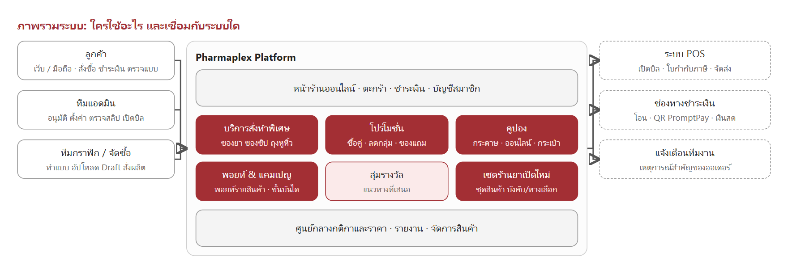
รูป 1-1 ผู้ใช้งานแต่ละกลุ่มเข้าสู่ระบบผ่านหน้าร้านหรือหน้าแอดมิน ระบบกลางรวบรวมกติกาทุกโมดูลไว้ที่เดียว และส่งข้อมูลการขายไปยัง POS และช่องทางชำระเงิน
1.3 โมดูลทั้งหมดในระบบ
โมดูล คืออะไร ใช้เมื่อไหร่ มีกี่แบบ บริการสั่งทำพิเศษ สั่งผลิตสินค้าตามแบบของร้าน เช่น ซองยาพิมพ์ชื่อร้าน ร้านต้องการบรรจุภัณฑ์เฉพาะที่ไม่มีในสต็อก 4 ประเภทสินค้า และทุกประเภทเลือกตัวเลือกได้หลายแบบ โปรโมชั่น ส่วนลดที่เกิดขึ้นอัตโนมัติตอนซื้อ ไม่ต้องใส่โค้ด ต้องการกระตุ้นการซื้อสินค้ากลุ่มหนึ่ง 2 แบบ คูปอง สิทธิ์ส่วนลดที่ลูกค้าต้องได้รับก่อนจึงใช้ได้ แจกหน้างาน ส่งเสริมการขายผ่านเว็บ หรือแจกประจำเดือน 5 แบบ พอยท์และแคมเปญ สะสมพอยท์ราย SKU และรางวัลปลดล็อกตามยอดสะสม ให้ลูกค้าสะสมยอดและแลกของ พอยท์ 1 ระบบ และแคมเปญ 2 แบบ การสุ่มรางวัล เปลี่ยนพอยท์ ยอดซื้อ หรือโค้ด เป็นสิทธิ์ลุ้นรางวัล กิจกรรมส่งเสริมการขายที่มีของรางวัลหลากหลาย 2 โหมดการจับรางวัล เซตร้านยาเปิดใหม่ ชุดสินค้าเริ่มต้นสำหรับร้านยาที่เพิ่งเปิด ปรับรายการได้ ผู้ที่ต้องการเปิดร้านยาใหม่ 2 ประเภทรายการ บังคับและทางเลือก
1.4 ผู้ใช้งานและหน้าที่
ผู้ใช้งาน ทำอะไรได้ในระบบ ลูกค้า (สมาชิก / ร้านค้า) สั่งซื้อ ชำระเงิน ตรวจแบบ อนุมัติหรือขอแก้ไข ใช้คูปองและพอยท์ ติดตามสถานะ แอดมิน (รวมเซลล์) ตั้งค่าสินค้า โปรโมชั่น คูปอง แคมเปญ ตรวจสลิป อนุมัติคำสั่งซื้อ ปรับจำนวนจริง เปิดบิล และสั่งซื้อแทนลูกค้าได้ในบางกรณี เช่น เซลล์สั่งเซตร้านยาเปิดใหม่แทนลูกค้า ทีมกราฟิก จัดทำแบบ Mockup อัปโหลดแบบให้ลูกค้าตรวจ ฝ่ายจัดซื้อ / โรงงาน รับเรื่องผลิตและส่งสินค้าเข้าคลัง ทีมงานภายใน ได้รับการแจ้งเตือนเมื่อมีเหตุการณ์สำคัญของคำสั่งซื้อ
1.5 หลักการที่ใช้ทั้งระบบ
ไม่ต้องใส่โค้ดกับโปรโมชั่น ส่วนลดเกิดขึ้นเองเมื่อลูกค้าเข้าเงื่อนไขราคาและส่วนลดคำนวณที่ระบบเสมอ หน้าจอแสดงตัวอย่างให้ลูกค้าเห็น แต่ยอดที่ชำระจริงคำนวณที่เซิร์ฟเวอร์กติกาปรับได้จากหน้าแอดมิน ไม่ต้องพัฒนาใหม่เมื่อต้องการเปลี่ยนแบรนด์ หมวด ช่วงเวลา หรือจำนวนที่กำหนดตรวจย้อนหลังได้ ทุกการใช้คูปอง สิทธิ์ลุ้น และการแลกพอยท์มีประวัติให้ตรวจ
1.6 การทำงานร่วมกันระหว่างโมดูลและนโยบายร่วมของระบบ
การใช้ร่วมกันในบิลเดียว แอดมินตั้งค่าได้เองว่าแต่ละโมดูล (โปรโมชั่น คูปอง พอยท์ แคมเปญ สิทธิ์ลุ้น) เปิดหรือปิดใช้งาน และกำหนดได้ว่าโมดูลไหนใช้ร่วมกับโมดูลไหนได้บ้างในตะกร้าเดียวกัน ไม่ได้กำหนดตายตัวไว้ในระบบยกเลิก / คืนสินค้า เมื่อคูปอง พอยท์ หรือของแถมถูกใช้ไปแล้ว การยกเลิกหรือคืนสินค้าภายหลังจะไม่เรียกคืนสิ่งที่ใช้ไปแล้ว ถือว่าใช้สิทธิ์ไปแล้ว (คำขอคืนสินค้าทุกกรณีต้องผ่านการอนุมัติจากแอดมินก่อนอยู่แล้ว)การแจ้งเตือนลูกค้า ทั้งระบบไม่มีการแจ้งเตือนผ่านอีเมล SMS หรือ LINE ลูกค้าต้องเข้าเว็บเพื่อติดตามสถานะและสิทธิ์ต่าง ๆ ด้วยตนเองภาษีมูลค่าเพิ่ม (VAT) ราคาสินค้า ค่าจัดส่ง และส่วนลดที่แสดงในเอกสารนี้ทั้งหมดเป็นราคารวม VAT แล้วB2B กับ B2C ทุกโมดูลใช้กติกาเดียวกันกับลูกค้าทุกกลุ่ม ยกเว้นเซตร้านยาเปิดใหม่ (โมดูล 7) ที่เปิดขายเฉพาะลูกค้าประเภทร้านค้า (B2B) เท่านั้น
2. บริการสั่งทำพิเศษ
2.1 คืออะไร
บริการสั่งทำพิเศษคือการสั่งผลิตสินค้าตามความต้องการของร้าน เช่น ซองยาพิมพ์ชื่อร้าน ซองซิป ถุงหูหิ้วพิมพ์โลโก้ ม่านบังยา และสติ๊กเกอร์ติดขวด สินค้ากลุ่มนี้ไม่มีสต็อกพร้อมส่ง ต้องผลิตตามสั่งใช้เวลาประมาณ 2–4 สัปดาห์
ลูกค้าเลือกตัวเลือกของสินค้า กรอกข้อมูลที่จะพิมพ์ลงบรรจุภัณฑ์ และดูภาพ Mockup ที่เปลี่ยนตามตัวเลือกได้ทันที ก่อนชำระมัดจำและเริ่มกระบวนการออกแบบ สินค้าหนึ่งรายการเปิดขายได้หลายปี (เช่น ฉบับปี 2569 และฉบับปี 2570) โดยคัดลอกตัวเลือก ราคา และแบบ Mockup จากปีก่อนหน้าไปตั้งต้นปีใหม่ได้ ลูกค้าเห็นเฉพาะปีล่าสุดที่เปิดขาย
2.2 ใช้เมื่อไหร่ และมีกี่แบบ
ประเภทสินค้า ตัวเลือกหลัก ขนาด / จำนวน รูปแบบการคิดราคา ซองซิปยา ประเภท (ใส, สีชา, สีขาวนม, สีแดง), รูปแบบ, สี 6×8 ถึง 12×17 ซม. · จำนวนสำเร็จรูป 5,000 ถึง 100,000 ใบ ต่อใบ ถุงหูหิ้วพลาสติก ชนิด (HD / PE), ชนิดหูหิ้ว, รูปแบบ, สี 4×9 ถึง 6×14 นิ้ว · ขั้นต่ำ 50 กก. ต่อกิโลกรัม ม่านบังยา รุ่น (ขามาตรฐาน / ขาเหล็กพิเศษ), รูปแบบ, สี 90×160 ซม. หรือกำหนดขนาดเอง ต่อตารางเมตร รวมขาตั้ง สติ๊กเกอร์ติดขวด ขนาด, รูปแบบ, สี ดวง 3×6, 4×7, 5×8 ซม. หรือกำหนดขนาดเอง ต่อแผ่น A3
สินค้ากลุ่มนี้ต่างจากสินค้า Pre-order ทั่วไปดังนี้
หัวข้อ Pre-order ทั่วไป บริการสั่งทำพิเศษ การชำระเงิน ชำระเต็มจำนวนครั้งเดียว มัดจำ 50% ก่อน และชำระส่วนที่เหลือเมื่อผลิตเสร็จ การตรวจสอบ ไม่มี ตรวจสลิปและอนุมัติโดยแอดมินก่อนเริ่มออกแบบ (ยกเว้นชำระด้วย QR PromptPay ที่อนุมัติอัตโนมัติ) แบบพิมพ์ ไม่มี ลูกค้าตรวจแบบและอนุมัติ หรือขอแก้ได้สูงสุด 3 ครั้ง จำนวนผลิต ตามที่สั่ง อาจผลิตเกินหรือขาดได้ตามกระบวนการโรงงาน ปรับตามจำนวนจริง การชำระอีกครั้ง ไม่มี มีการชำระรอบที่ 2 เมื่อมียอดค้าง หรือได้ใบลดหนี้คืนเมื่อจ่ายเกิน การรับสินค้า ตามรอบคิว กดยืนยันรับสินค้าเอง แล้วให้คะแนนและรีวิวได้
2.3 ตัวเลือกสินค้าและข้อมูลที่ต้องกรอก
แอดมินตั้งค่าตัวเลือกของสินค้าแต่ละรายการเอง และเลือกรูปแบบการแสดงผลได้ 3 แบบ
รูปแบบตัวเลือก ใช้แสดงอะไร ปุ่มข้อความ ตัวเลือกทั่วไป เช่น ประเภท รูปแบบ สี วงกลมสีให้กด รองรับให้ลูกค้าพิมพ์รหัสสีหรือ Pantone เองได้ ขนาด กว้าง × ยาว ใช้กับสินค้าที่คิดราคาต่อตารางเมตร เลือกให้ลูกค้ากำหนดขนาดเองได้
ตัวเลือกบางรายการกำหนดให้ต้องแนบไฟล์เพิ่ม เช่น เลือก "มีแบบอยู่แล้ว" ต้องแนบไฟล์แบบมาด้วย
นอกจากตัวเลือกสินค้า แอดมินกำหนดช่องข้อมูลที่ลูกค้าต้องกรอกเองได้สูงสุด 20 ช่องต่อสินค้า เช่น ชื่อร้าน ที่อยู่ เบอร์โทรศัพท์ เวลาเปิดทำการ เป็นช่องข้อความ ข้อความหลายบรรทัด หรือช่องแนบไฟล์ ระบบดึงข้อมูลร้านของลูกค้ามาเติมล่วงหน้าให้ได้
2.4 ขั้นตอนการสั่งซื้อทั้งหมด
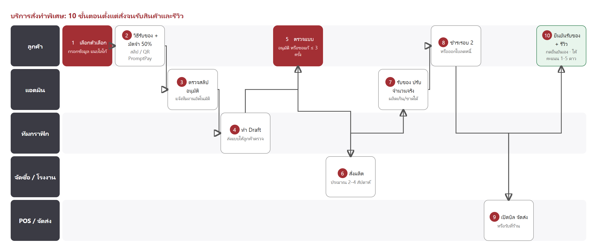
รูป 2-1 ทั้ง 10 ขั้นตอนแบ่งตามผู้รับผิดชอบ ขั้นที่ 5 และ 7 เป็นจุดที่ลูกค้าและร้านต้องดำเนินการ ขั้นที่ 10 เป็นขั้นใหม่ที่ลูกค้ายืนยันรับสินค้าและให้คะแนนเอง
2.5 รายละเอียดแต่ละขั้นตอน
ขั้นที่ 1 เลือกตัวเลือกและกรอกข้อมูล ลูกค้าเลือกตัวเลือกของสินค้า กรอกข้อมูลตามช่องที่แอดมินกำหนด อัปโหลดโลโก้หรือไฟล์ตัวอย่างงาน (AI, EPS, PDF, SVG ที่แนะนำ และ PNG โปร่งใส / JPG ความละเอียดสูง ไม่เกิน 20 MB) เปิดดูตัวอย่างไฟล์ที่เลือกได้ก่อนส่งจริง และต้องยอมรับเงื่อนไขของสินค้าก่อนดำเนินการต่อ ถ้าเลือกขนาดกำหนดเองในสินค้าที่คิดราคาต่อชิ้น หรือเลือกขนาดที่ยังไม่เคยตั้งราคาไว้ ระบบจะส่งคำสั่งซื้อไปให้เจ้าหน้าที่ตีราคาก่อน ลูกค้าสั่งซื้อได้เสมอไม่ว่ากรณีใด
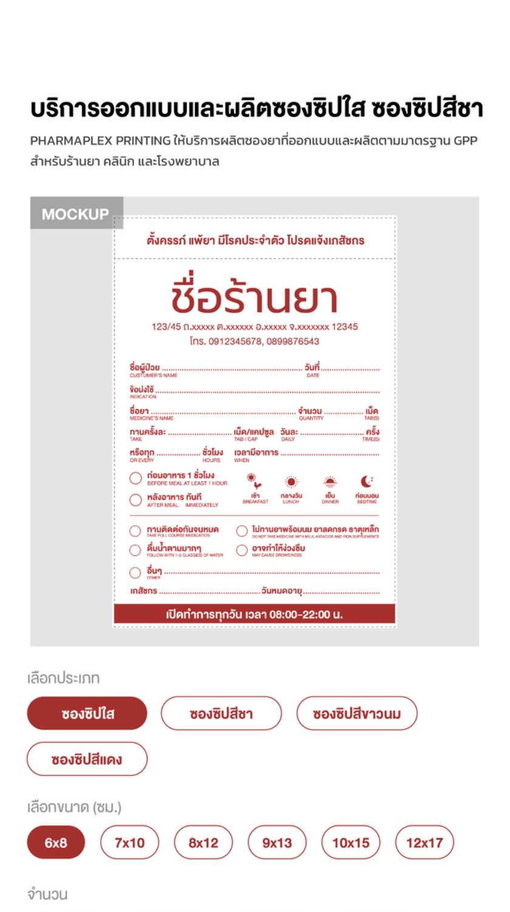
รูป 2-2 หน้าเลือกตัวเลือกสินค้า ภาพ Mockup ด้านบนเปลี่ยนตามประเภท ขนาด และข้อมูลที่ลูกค้ากรอก
ขั้นที่ 2 เลือกวิธีรับสินค้าและชำระมัดจำ 50% ลูกค้าเลือกวิธีรับสินค้าและที่อยู่ในขั้นตอนเดียวกับการสรุปยอด (รายละเอียดอยู่ในหัวข้อ 2.9) ระบบคำนวณยอดมัดจำ 50% จาก (ค่าสินค้า + ค่าบล็อค − ส่วนลด) ยังไม่รวมค่าจัดส่ง ลูกค้าชำระด้วยการโอนพร้อมแนบสลิป (รอแอดมินตรวจ) หรือสแกน QR PromptPay (ระบบยืนยันให้อัตโนมัติ ไม่ต้องรอตรวจ) ถ้ามีใบลดหนี้ในบัญชีเลือกใช้ตัดยอดได้ทันที และถอนออกได้ก่อนส่งหลักฐานการชำระเงิน ชำระสะสมหลายครั้งได้ ไม่ต้องจ่ายครบในครั้งเดียว หรือแจ้งเจ้าหน้าที่ให้บันทึกสลิปแทนได้ถ้าส่งหลักฐานมาทางช่องทางอื่น (รายละเอียดอยู่ในหัวข้อ 2.8) วิธีรับสินค้าและที่อยู่จะล็อกแก้ไขไม่ได้หลังชำระมัดจำ
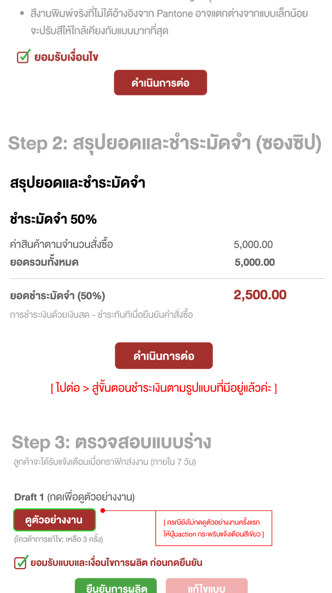
รูป 2-3 หน้าสรุปยอดและชำระมัดจำ ยอดมัดจำคิดเป็น 50% ของยอดรวมตั้งต้น
ขั้นที่ 3 แอดมินตรวจสลิปและอนุมัติ เมื่อลูกค้าแนบสลิปโอนเงิน แอดมินตรวจยอดเทียบกับยอดที่ต้องชำระ และตรวจความถูกต้องของข้อมูล (สลิป QR PromptPay ระบบอนุมัติให้อัตโนมัติ ไม่ต้องรอแอดมิน) แอดมินเลือกทำได้ 3 ทาง
อนุมัติ เพื่อเริ่มออกแบบ กำหนดส่งแบบภายใน 7 วันส่งกลับให้แก้ไข ลูกค้าแก้ข้อมูลหรือโลโก้แล้วส่งตรวจใหม่ปฏิเสธสลิป ลูกค้าเห็นเหตุผลและส่งสลิปใหม่ได้
ขั้นที่ 4 ทีมกราฟิกจัดทำแบบ ทีมกราฟิกพิมพ์ใบสรุปความต้องการของลูกค้าจากระบบ นำไปออกแบบใน Adobe Illustrator แล้วอัปโหลดภาพ Mockup (JPG / PNG) เข้าสู่ออเดอร์ภายใน 7 วันหลังอนุมัติมัดจำ ลูกค้าได้รับแจ้งว่ามีแบบใหม่ให้ตรวจ
ขั้นที่ 5 ลูกค้าตรวจแบบ ลูกค้าเข้าดูแบบในหน้า "คำสั่งซื้อของฉัน" ได้ตลอดเวลา แล้วเลือก อนุมัติแบบ Final หรือ ขอแก้ไข โดยวงจุดบนภาพแบบตรงตำแหน่งที่ต้องการแก้ (สูงสุด 30 จุด) พร้อมใส่โน้ตอธิบาย ต้องมีจุดหรือโน้ตอย่างน้อย 1 รายการ และต้องยืนยันในหน้าต่างเตือนก่อนส่ง เพราะใช้โควตาแล้วย้อนกลับไม่ได้ การขอแก้ไขทำได้สูงสุด 3 ครั้ง (Draft รวมสูงสุด 4 ฉบับ) รายละเอียดอยู่ในหัวข้อ 2.7
ขั้นที่ 6 ส่งผลิตที่โรงงาน เมื่อลูกค้าอนุมัติแบบ คำสั่งซื้อเข้าสู่การผลิตและฝ่ายจัดซื้อส่งงานไปยังโรงงาน ใช้เวลาประมาณ 2–4 สัปดาห์
ขั้นที่ 7 รับสินค้าและปรับจำนวนจริง โรงงานอาจผลิตได้จำนวนเกินหรือขาดจากที่สั่งได้ตามเงื่อนไขการผลิต เมื่อรับสินค้าแล้ว แอดมินปรับจำนวนจริงในออเดอร์ พร้อมกรอกค่าจัดส่งถ้าเป็นการจัดส่งนอกพื้นที่ ระบบคำนวณยอดรวมใหม่ทันที ส่วนที่ผลิตเกินลูกค้ารับในราคาต่อหน่วยเดิม รายละเอียดอยู่ในหัวข้อ 2.8
ขั้นที่ 8 ชำระรอบที่ 2 หรือรับใบลดหนี้ ถ้ายังมียอดค้าง ลูกค้าชำระส่วนที่เหลือผ่านหน้าเว็บ (สะสมหลายครั้งได้เช่นเดียวกับมัดจำ) และแอดมินตรวจสลิปรอบที่ 2 ถ้าไม่มียอดค้าง (ยอดพอดีหรือจ่ายเกิน หรือใบลดหนี้ครอบคลุมพอดี) ข้ามการชำระรอบนี้ไปได้เลย และถ้าลูกค้าจ่ายเกินยอดจริง ระบบออกใบลดหนี้คืนให้โดยอัตโนมัติ
ขั้นที่ 9 เปิดบิลและจัดส่ง เจ้าหน้าที่เปิดบิลใน POS และกรอกเลขที่เอกสาร ออเดอร์เข้าสถานะรอจัดส่งหรือรอรับที่ร้านตามวิธีที่เลือกไว้ เจ้าหน้าที่จะนัดวันจัดส่งหรือวันรับของกับลูกค้าอีกครั้งหลังผลิตเสร็จ เพราะลูกค้าไม่ได้เลือกวันตอนสั่งซื้อ
ขั้นที่ 10 ยืนยันรับสินค้าและให้คะแนน เมื่อได้รับสินค้าแล้ว ลูกค้ากดยืนยันรับสินค้าด้วยตนเองในหน้าออเดอร์ สถานะเปลี่ยนเป็น "รับสินค้าแล้ว" และปิดงาน จากนั้นให้คะแนนสินค้า 1-5 ดาวพร้อมความเห็นได้ 1 ครั้งต่อออเดอร์ รีวิวจะแสดงในหน้าสินค้าแบบสาธารณะโดยย่อชื่อลูกค้าเพื่อความเป็นส่วนตัว เช่น "จ***"
2.6 ภาพ Mockup และกลุ่มสี
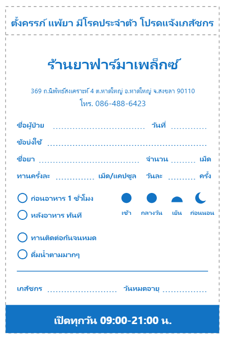
รูป 2-4 ตัวอย่าง Mockup ที่สร้างจากข้อมูลร้านและโลโก้ของลูกค้า ภาพนี้เป็นตัวอย่างเพื่อตรวจสอบเบื้องต้น แบบจริงกราฟิกจะส่งให้ตรวจก่อนผลิต
แบบ Mockup แปลงจากไฟล์ .ai หรือ .pdf เป็นภาพเวกเตอร์ หรืออัปโหลดเป็นภาพนิ่งก็ได้ แบบหนึ่งผูกกับตัวเลือกได้หลายแบบ หรือไม่ผูกเลยเพื่อใช้เป็นแบบหลักของสินค้า ช่องในแบบเปลี่ยนตามข้อมูลลูกค้าได้ 3 ชนิด คือข้อความ (ผูกกับช่องข้อมูลที่กรอก) รูปภาพ (ไฟล์โลโก้) และสี
กลุ่มสี แอดมินจัดกลุ่มสีในแบบ เช่น "สีหลัก" หรือ "สีพื้นหลัง" แล้วผูกแต่ละกลุ่มกับตัวเลือกสีของสินค้า ลูกค้าเปลี่ยนสีจากตัวเลือกเดิมตอนเลือกสินค้า ไม่มีช่องเลือกสีซ้ำซ้อน กลุ่มที่ผูกตัวเลือกสีเดียวกันจะเปลี่ยนพร้อมกันทั้งหมด ส่วนกลุ่มที่ไม่ได้ผูกจะคงสีเดิมไว้ สีที่ลูกค้าเลือกถูกบันทึกเป็นชื่อกลุ่มและรหัสสี แสดงให้เห็นทั้งหน้าลูกค้า หน้าแอดมิน และใบสรุปความต้องการที่พิมพ์ให้ทีมกราฟิก
2.7 การตรวจแบบและแก้ไข
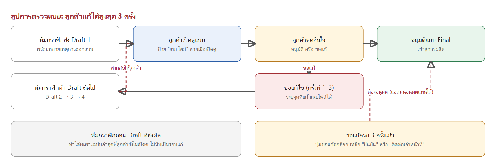
รูป 2-5 ลูปการตรวจแบบ Draft แต่ละฉบับเก็บไว้ให้ลูกค้าเปิดดูและเทียบย้อนหลังได้
กฎ รายละเอียด วิธีขอแก้ไข วงจุดบนภาพแบบสูงสุด 30 จุด พร้อมใส่โน้ตอธิบาย ต้องมีอย่างน้อย 1 รายการ จำนวนครั้งที่ขอแก้ ได้สูงสุด 3 ครั้ง ระบบรองรับ Draft รวมสูงสุด 4 ฉบับ ครบ 3 ครั้งแล้ว ปุ่มขอแก้ถูกล็อก เหลือเพียง "ยืนยัน" และ "ติดต่อเจ้าหน้าที่" กำหนดส่งแบบ ภายใน 7 วันนับจากวันที่แอดมินอนุมัติมัดจำ ลูกค้าเห็นกำหนดนี้ตั้งแต่ก่อนชำระ แจ้งว่ามีแบบใหม่ ลูกค้าเห็นป้าย "แบบใหม่" จนกว่าจะเปิดดู ปุ่มดูตัวอย่างงานกระพริบจนกว่าจะกดดูครั้งแรก ถอนแบบที่ส่งผิด ทีมกราฟิกถอน Draft ล่าสุดได้ ถ้าลูกค้ายังไม่เปิดดู และการถอนไม่นับเป็นรอบแก้ไข อนุมัติแทนลูกค้า ถ้าลูกค้ายืนยันผ่านช่องทางอื่น แอดมินอนุมัติแทนได้ และระบบบันทึกไว้ว่าอนุมัติโดยแอดมิน
2.8 การคิดเงินและมัดจำ
สูตรการคิดราคาสินค้า
ราคาต่อหน่วย (PER_UNIT) = ราคาต่อหน่วย × จำนวน
ราคาต่อตารางเมตร (PER_AREA) = ราคาต่อตารางเมตร × มากกว่าระหว่าง(พื้นที่คิดขั้นต่ำ, กว้าง × ยาว) × จำนวน
ตารางราคาอ้างอิงจากตัวเลือกที่ "มีผลต่อราคา" คูณกับระดับราคาตามจำนวน (ใช้ระดับสูงสุดที่ไม่เกินจำนวนที่สั่ง) ค่าบล็อคคิดครั้งเดียวเมื่อลูกค้าติ๊ก "สั่งครั้งแรก" และตั้งแยกตามแถวราคาได้ พื้นที่คิดขั้นต่ำกันไม่ให้สินค้าชิ้นเล็กราคาต่ำเกินไป เช่น ตั้งขั้นต่ำ 1 ตร.ม. ซองขนาด 10×10 ซม. จะคิดราคาเท่ากับ 1 ตร.ม. ถ้าตั้งเป็น 0 ระบบคิดตามพื้นที่จริง
สูตรการชำระเงิน 2 รอบ
มัดจำรอบแรก = (ค่าสินค้า + ค่าบล็อค − ส่วนลด) × 50% [ไม่รวมค่าจัดส่ง]
ยอดรวมทั้งหมด = ค่าสินค้าตามจำนวนผลิตจริง + ค่าจัดส่ง − ส่วนลด
ยอดชำระรอบที่ 2 = ยอดรวมทั้งหมด − ยอดที่ชำระแล้ว − ใบลดหนี้ที่เลือกใช้
ตัวอย่างการคำนวณ (ราคา 1 บาทต่อใบ สั่ง 5,000 ใบ และโรงงานผลิตได้จริง 5,500 ใบ)
รายการ จำนวน ยอดเงิน (บาท) หมายเหตุ ค่าสินค้าตามที่สั่ง 5,000 ใบ × 1 5,000.00 ยอดรวมตั้งต้น มัดจำรอบแรก 50% 2,500.00 ชำระก่อนเริ่มออกแบบ ผลิตได้จริงเกิน +500 ใบ × 1 +500.00 แอดมินปรับจำนวนจริง ยอดรวมหลังปรับ 5,500 ใบ 5,500.00 ยอดที่ลูกค้าต้องชำระทั้งหมด ยอดค้างชำระรอบที่ 2 3,000.00 5,500 − 2,500
ตัวอย่างกรณีโรงงานผลิตขาด ถ้าผลิตได้จริง 4,800 ใบ (ขาด 200 ใบ) และลูกค้าชำระมัดจำ 2,500 บาทไว้แล้ว ยอดรวมหลังปรับคือ 4,800 บาท ลูกค้าจึงมียอดค้างชำระ 2,300 บาท ถ้าลูกค้าชำระไว้แล้วเกินยอดรวมหลังปรับ ระบบจะออกใบลดหนี้คืนให้ตามส่วนต่างโดยอัตโนมัติ
ขนาดที่ลูกค้ากำหนดเอง — ใครเป็นคนตีราคา
เงื่อนไข ผล คิดราคาต่อตารางเมตร และแกนขนาดไม่มีผลต่อราคา ระบบคำนวณราคาเองจากพื้นที่ที่กรอก คิดราคาต่อตารางเมตร แกนขนาดมีผลต่อราคา และตั้งราคาแถวนั้นไว้แล้ว ระบบคำนวณราคาเองตามราคาแถวนั้น คิดราคาต่อตารางเมตร แกนขนาดมีผลต่อราคา แต่ยังไม่ได้ตั้งราคา ส่งให้เจ้าหน้าที่ตีราคาก่อนเริ่มกระบวนการ คิดราคาต่อหน่วย (ต่อชิ้น) และกำหนดขนาดเอง ส่งให้เจ้าหน้าที่ตีราคาเสมอ (คำนวณราคาต่อชิ้นจากขนาดไม่ได้) ขนาดเกินค่าสูงสุดที่สินค้ากำหนดไว้ ระบบปฏิเสธไม่ให้สั่ง
ไม่ว่ากรณีใดลูกค้าสั่งซื้อได้เสมอ ไม่มีทางตัน เมื่อแอดมินตีราคาแล้วระบบคำนวณมัดจำ 50% ใหม่ให้อัตโนมัติ
ข้อกำหนดเพิ่มเติม
ส่วนที่ผลิตเกินลูกค้ารับทั้งหมดในราคาต่อหน่วยเดิม ไม่ได้ส่วนลดเพิ่ม
ส่วนลด (ถ้ามี) เป็นจำนวนเงินคงที่ ไม่เพิ่มตามจำนวนส่วนที่เกิน
ใบลดหนี้ใช้ตัดยอดได้ทั้งตอนชำระมัดจำและรอบที่ 2 เลือกใช้แล้วตัดยอดทันที ถอนออกได้ก่อนส่งหลักฐานการชำระเงิน
ชำระได้หลายงวดสะสม ทั้งมัดจำและรอบที่ 2 แต่ละครั้งที่แนบสลิประบบจะเก็บไว้ก่อน ยังไม่ส่งให้แอดมินตรวจจนกว่ายอดสลิปรวมจะครบยอดที่ต้องชำระ (หลังหักใบลดหนี้) ยอดรวมเกินยอดที่ต้องชำระจะบันทึกไม่ได้ ถ้าใบลดหนี้ครอบคลุมยอดพอดี ไม่ต้องแนบสลิปเพิ่ม
เจ้าหน้าที่บันทึกการชำระแทนลูกค้าได้ เช่น กรณีลูกค้าส่งสลิปมาทางโทรศัพท์หรือ LINE โดยรับเฉพาะสลิปโอนเงิน ไม่รองรับ QR PromptPay ในกรณีนี้
2.9 วิธีรับสินค้าและค่าจัดส่ง
ลูกค้าเลือกวิธีรับสินค้าตอนสรุปยอด (ขั้นที่ 2) มี 3 แบบ
วิธีรับสินค้า ค่าใช้จ่าย หมายเหตุ มารับที่ร้าน ฟรี — จัดส่งภายในพื้นที่ ฟรี ที่อยู่ต้องอยู่ในพื้นที่รอบจัดส่งที่ร้านกำหนดไว้ จัดส่งนอกพื้นที่ ตามระยะทาง แอดมินกรอกค่าจัดส่งตอนปรับจำนวนผลิตจริง เก็บในยอดรอบที่ 2
ที่อยู่ที่เลือกถูกบันทึกเป็นสำเนา ณ วันที่สั่งซื้อ และล็อกแก้ไขไม่ได้หลังชำระมัดจำ (แก้ไขได้เฉพาะช่วงรอตีราคาหรือรอชำระมัดจำ) ไม่มีการเลือกวันหรือรอบจัดส่งล่วงหน้า เพราะสินค้ายังไม่ผลิต เจ้าหน้าที่จะนัดวันจัดส่งหรือวันรับของกับลูกค้าอีกครั้งหลังผลิตเสร็จ
2.10 สถานะคำสั่งซื้อ
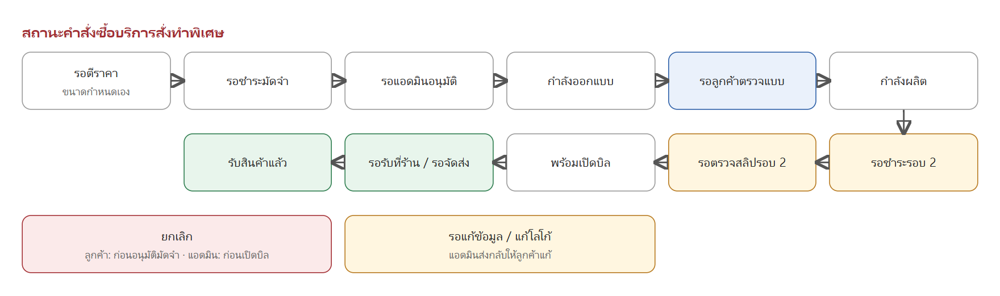
รูป 2-6 สถานะหลักของคำสั่งซื้อ ลูกค้าติดตามสถานะได้ที่ "คำสั่งซื้อของฉัน" ในหน้าสมาชิก
2.11 การยกเลิก การคืนเงิน และใบลดหนี้
ช่วงสถานะ ใครยกเลิกได้ ผลที่เกิดขึ้น รอตีราคา / รอชำระมัดจำ / รอแอดมินอนุมัติ / รอแก้ข้อมูล ลูกค้าหรือแอดมิน ยกเลิกได้ทันที ถ้าชำระเงินไว้แล้วคืนเป็นใบลดหนี้ กำลังออกแบบ จนถึง รอตรวจสลิปรอบ 2 แอดมินเท่านั้น ยอดที่ชำระแล้วคืนเป็นใบลดหนี้ทั้งหมด ตั้งแต่เปิดบิลขายแล้ว ไม่สามารถยกเลิกผ่านระบบได้ ติดต่อเจ้าหน้าที่โดยตรง ชำระเกินยอดจริงหลังปรับจำนวนผลิต ระบบทำให้อัตโนมัติ ออกใบลดหนี้คืนส่วนต่าง
ใบลดหนี้ใช้ตัดยอดได้ทั้งตอนชำระมัดจำและชำระรอบที่ 2 ของคำสั่งซื้อครั้งถัดไป การชำระเงินทำได้ด้วยการโอนพร้อมแนบสลิป หรือสแกน QR PromptPay เท่านั้น ไม่รับบัตรเครดิต และไม่รับเครดิตร้านค้าเป็นวิธีชำระ
2.12 การตั้งค่าของแอดมินต่อสินค้า
หัวข้อที่ตั้งค่า รายละเอียด ข้อมูลสินค้า ชื่อ คำอธิบาย เงื่อนไขการใช้งาน (terms) ระยะเวลาผลิต เปิด/ปิดการขาย และลำดับการแสดงผล โหมดราคา เลือกคิดราคาต่อหน่วยหรือต่อตารางเมตร พร้อมตั้งพื้นที่คิดขั้นต่ำ (เฉพาะโหมดต่อตารางเมตร) ตัวเลือกสินค้า (แกนตัวเลือก) สร้างได้หลายแกน เลือกรูปแบบแสดงผล (ปุ่มข้อความ / สี / ขนาด) และตั้งว่าแกนไหน "มีผลต่อราคา" ตารางราคา กำหนดราคาตามชุดตัวเลือก คูณกับระดับราคาตามจำนวน ช่องว่าง = ไม่ขายชุดนั้น ค่าบล็อค เปิดหรือปิดค่าบล็อค และตั้งราคาแยกตามแถวราคาได้ ช่องข้อมูลลูกค้า (infoFields) สร้างได้สูงสุด 20 ช่อง เลือกชนิดช่อง (ข้อความ / ข้อความหลายบรรทัด / ไฟล์) และตั้งให้เติมค่าจาก POS ล่วงหน้า แบบ Mockup อัปโหลดไฟล์ .ai / .pdf หรือภาพนิ่ง ผูกกับตัวเลือกที่ต้องการ จัดกลุ่มสีในแบบ และผูกแต่ละกลุ่มกับแกนสี จำนวนสั่งซื้อ ตั้งปุ่มจำนวนสำเร็จรูป และเปิด/ปิดให้ลูกค้ากรอกจำนวนเอง ปีของสินค้า คัดลอกตัวเลือก ราคา และแบบ Mockup จากปีก่อนหน้าไปตั้งต้นปีใหม่ได้
2.13 หน้าจอทั้งหมด (ลูกค้าและแอดมิน)
ภาพชุดนี้แสดงหน้าจอของบริการสั่งทำตามลำดับขั้นที่ 1-10 ในหัวข้อ 2.5 ตั้งแต่เลือกตัวเลือกจนถึงรับสินค้าและรีวิว วงกลม/กรอบสีแดงบนภาพชี้จุดที่ต้องกดหรือจุดที่ควรสังเกตของขั้นตอนนั้น
ก่อนเริ่มขาย — แอดมินตั้งค่าบริการ
แอดมินสร้างบริการใหม่จากหน้ารายการบริการ (2.12) กดปุ่ม "เพิ่มบริการ" จะเปิดฟอร์มเปล่าให้กรอกชื่อ คำอธิบาย และตั้งค่าต่อในแท็บย่อย (การสั่งซื้อ / ตัวเลือก / ราคา / แบบ Mockup) บริการที่ใช้สาธิตชุดนี้ตั้งค่าไว้ล่วงหน้าแล้ว ภาพด้านล่างจึงเปิดจากปุ่มแก้ไขของบริการเดิมเพื่อให้เห็นตัวเลือกและแบบ Mockup ที่กรอกจริง
ขั้นที่ 1-2 (ฝั่งลูกค้า) — เลือกตัวเลือกและชำระมัดจำ
ลูกค้าเข้าหน้า "บริการอื่นๆ" เลือกบริการที่ต้องการ เลือกตัวเลือกสินค้า กรอกข้อมูลสำหรับพิมพ์ลงบรรจุภัณฑ์ แนบไฟล์โลโก้ถ้ามี และติ๊กยอมรับเงื่อนไขก่อนกดปุ่ม "ดำเนินการต่อ" ไปหน้าตรวจสอบและยืนยัน จากนั้นกด "ยืนยันคำสั่งซื้อและชำระมัดจำ" เพื่อสร้างออเดอร์ หน้าชำระเงินเริ่มที่ QR PromptPay ตามค่าเริ่มต้นของระบบ แต่ลูกค้าเลือกแนบสลิปแทนได้ (กรณีนี้ใช้แสดงขั้นตรวจสลิปของแอดมินในขั้นถัดไป) กรอกข้อมูลผู้โอนและแนบไฟล์แล้วกด "ส่ง"
ขั้นที่ 3 — แอดมินตรวจสลิปและอนุมัติ
หลังลูกค้าส่งสลิป ออเดอร์เข้าคิว "ตรวจการชำระเงิน" ในหน้า /admin/service-orders แอดมินกดปุ่ม "ดำเนินการ" ที่แถวออเดอร์เพื่อเปิดหน้าต่างตรวจสอบ ตรวจยอดกับสลิปแล้วกด "อนุมัติ" เพื่อเริ่มขั้นตอนทำแบบ ฝั่งลูกค้าระหว่างนี้จะเห็นสถานะ "รอตรวจสอบการชำระเงิน" ที่หน้าออเดอร์ และติดตามออเดอร์ทั้งหมดของตัวเองได้จากแท็บ "บริการสั่งทำ" ในหน้าระบบสมาชิก
ขั้นที่ 4-5 — ทีมกราฟิกส่งแบบ แล้วลูกค้าตรวจ
เมื่ออนุมัติมัดจำแล้ว หน้าต่างเดิมจะโผล่ฟอร์ม "ส่งแบบให้ลูกค้าตรวจ" ให้แอดมิน/กราฟิกแนบภาพแบบและหมายเหตุ กด "ส่งแบบให้ลูกค้า" ออเดอร์เข้าสถานะรอลูกค้าตรวจแบบ ฝั่งลูกค้าเปิดดูแบบที่หน้าออเดอร์ เลือกได้ว่าจะ "อนุมัติแบบนี้ เข้าสู่การผลิต" หรือ "ขอแก้ไข (วงจุดในแบบ)" — ถ้าขอแก้ไข ใช้เครื่องมือวงกลม/ตีกรอบ/ปักหมุดชี้จุดที่ต้องการแก้พร้อมพิมพ์รายละเอียด แล้วกด "ส่งให้กราฟิกแก้ไข" (ใช้โควตาแก้ไข 1 ใน 3 ครั้ง ย้อนกลับไม่ได้)
ขั้นที่ 6-7 — ส่งผลิตแล้วปรับจำนวนจริงตอนสินค้าเข้า
เมื่อลูกค้ากด "อนุมัติแบบนี้" ออเดอร์เข้าสถานะอยู่ระหว่างผลิตทันที ระหว่างรอผลิต (2-4 สัปดาห์) ทีมกราฟิก/จัดซื้อพิมพ์ "ใบสรุปความต้องการลูกค้า" จากไอคอนเครื่องพิมพ์บนหน้าต่างออเดอร์ไปใช้อ้างอิงกับโรงงาน เมื่อสินค้าเข้าสต็อกจริง แอดมินกลับมาเปิดออเดอร์เดิมเพื่อแก้ไขจำนวนในช่อง "จำนวนจริง" ของแต่ละรายการ (ปกติผลิตเกิน/ขาดจากที่สั่งได้ตามเงื่อนไขโรงงาน) แล้วกด "ยืนยัน และแจ้งลูกค้า" ระบบคำนวณยอดใหม่และเปลี่ยนสถานะเป็นรอชำระเงินรอบ 2 ให้อัตโนมัติ
ขั้นที่ 8 — ชำระเงินรอบที่ 2
ลูกค้าเห็นยอดค้างชำระส่วนเกินที่หน้าออเดอร์และกดปุ่ม "ชำระเงิน" เพื่อจ่ายส่วนที่เหลือเองได้ตามปกติ ตัวอย่างชุดนี้สาธิตอีกช่องทางหนึ่งคือกรณีลูกค้าโอนเงินและแจ้งเจ้าหน้าที่ทางโทรศัพท์/LINE แทน: แอดมินกดปุ่ม "ชำระเงินแทนลูกค้า" ในหน้าต่างออเดอร์ กรอกธนาคาร ยอดโอน วันเวลา และแนบสลิปแทนลูกค้า แล้วกด "บันทึกการชำระเงิน" สลิปจะเข้าคิวให้แอดมินตรวจและกด "อนุมัติ" เหมือนขั้นที่ 3 อีกครั้งก่อนปลดล็อกไปขั้นเปิดบิล
ขั้นที่ 9 — เปิดบิลขายและจัดส่ง
เมื่อชำระรอบ 2 ครบแล้ว ออเดอร์เข้าสถานะรอเปิดบิลขาย แอดมินกรอก "เลขที่เอกสาร POS" แล้วกด "เปิดบิลแล้ว" เพื่อยิงเข้าสู่ขั้นจัดส่ง/รอรับสินค้า (สาธิตนี้ลูกค้าเลือกมารับที่ร้าน) ฝั่งลูกค้าเห็นสถานะรอรับสินค้าที่หน้าออเดอร์ และกด "ได้รับสินค้าแล้ว" เองเมื่อมารับของจริง
ขั้นที่ 10 — ยืนยันรับสินค้าและให้คะแนน
หลังยืนยันรับสินค้า (มีหน้าต่างให้ยืนยันอีกครั้งก่อนปิดงาน) ออเดอร์เปลี่ยนเป็นสถานะเสร็จสิ้น และฟอร์มให้คะแนนจะปรากฏทันที ลูกค้าให้ดาว 1-5 พร้อมความเห็น (ให้ได้ครั้งเดียว แก้ไขภายหลังไม่ได้) แล้วกด "ส่งรีวิว" ฝั่งแอดมินเปิดออเดอร์เดิมดูได้ว่าไทม์ไลน์ครบทั้ง 7 ขั้นแล้ว พร้อมสวิตช์ "แสดงรีวิวนี้ในหน้าบริการ" ไว้เปิดให้รีวิวแสดงต่อสาธารณะเมื่อตรวจสอบแล้วว่าเหมาะสม ซึ่งเป็นจุดปิดงานของออเดอร์นี้
3. โปรโมชั่น
3.1 คืออะไร และใช้เมื่อไหร่
โปรโมชั่นคือส่วนลดที่เกิดขึ้นเองเมื่อลูกค้าใส่สินค้าลงตะกร้าและเข้าเงื่อนไข ลูกค้าไม่ต้องกรอกโค้ดหรือติ๊กขอส่วนลด แอดมินใช้โปรโมชั่นเมื่อต้องการกระตุ้นการซื้อสินค้ากลุ่มใดกลุ่มหนึ่ง เช่น ซื้อคู่กันให้ถูกลง ซื้อครบยอดแบรนด์ที่กำหนดเพื่อรับส่วนลดหรือฟรีค่าจัดส่ง หรือจัดลดราคาเฉพาะวันพิเศษ
3.2 มีกี่แบบ
แบบ ทำงานอย่างไร โปรโมชั่นแบบเงื่อนไข (Bundle) ตั้งเงื่อนไขการซื้อ แล้วเลือกผลตอบแทนอย่างใดอย่างหนึ่ง: ของแถม ส่วนลด หรือฟรีค่าจัดส่ง โปรโมชั่นตามวันพิเศษ ลดราคาสินค้าเฉพาะกลุ่มที่เลือกไว้ตามช่วงเวลาที่ตั้ง พร้อมโควตาจำนวนจำกัด
3.3 โปรโมชั่นแบบเงื่อนไข (Bundle)
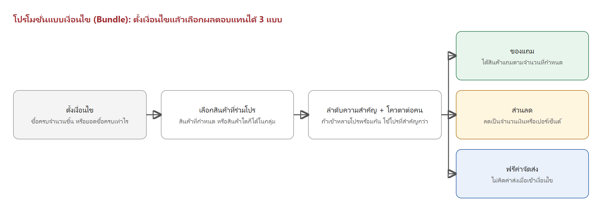
รูป 3-1 ใช้การตั้งค่าชุดเดียวกับระบบ Bundle ที่ใช้งานอยู่ เพิ่มเติมคือเลือกได้ว่าผลตอบแทนจะเป็นของแถม ส่วนลด หรือฟรีค่าจัดส่ง
หัวข้อที่ตั้งค่า รายละเอียด เงื่อนไข ซื้อครบจำนวนชิ้นที่กำหนด หรือยอดซื้อครบจำนวนเงินที่กำหนด (เลือกอย่างใดอย่างหนึ่ง) สินค้าที่ร่วมโปร เลือกสินค้าที่กำหนดไว้ หรือเปิดให้สินค้าชนิดใดก็ได้ในกลุ่มที่ตั้งไว้นับรวมกัน ลำดับความสำคัญ (Priority) ถ้าตะกร้าเข้าเงื่อนไขหลายโปรพร้อมกัน ใช้โปรที่ตั้งลำดับสำคัญกว่า โควตาต่อคน จำกัดจำนวนครั้งที่ลูกค้าคนเดียวรับสิทธิ์ได้ (ไม่ระบุ = ไม่จำกัด) ช่วงเวลาที่มีผล กำหนดวันเริ่มต้นและสิ้นสุด
ผลตอบแทนเลือกได้ 1 อย่างต่อโปรโมชั่น
ผลตอบแทน ตัวอย่าง ของแถม ซื้อนมผงสูตร 3 คู่กับขวดนม PP รับของแถมตามจำนวนที่กำหนด ถ้าของแถมหมดสต็อกระหว่างโปรโมชั่น active ระบบจะแจ้งเตือนแอดมินและปิดโปรโมชั่นนั้นชั่วคราวให้อัตโนมัติ ส่วนลด ซื้อสินค้าแบรนด์ที่กำหนดครบ 1,000 บาท ลดทันที 100 บาท ถ้าตั้งเป็นส่วนลด % ตั้งเพดานส่วนลดสูงสุดได้ เช่น ลด 15% สูงสุดไม่เกิน 100 บาท ฟรีค่าจัดส่ง ซื้อสินค้าในกลุ่มที่กำหนด ไม่เสียค่าจัดส่ง
ส่วนลดท้ายบิลตามแบรนด์และส่งฟรีตามกลุ่มสินค้าที่เคยแยกเป็นกติกาต่างหาก แท้จริงคือโปรโมชั่นแบบเงื่อนไขที่ตั้งเงื่อนไขเป็น "ยอดซื้อครบจำนวนเงิน" แล้วเลือกผลตอบแทนเป็นส่วนลดหรือฟรีค่าจัดส่งนั่นเอง จบในหน้าตั้งค่าเดียวกันได้ทั้งหมด ไม่ต้องมีหน้าตั้งค่าแยก
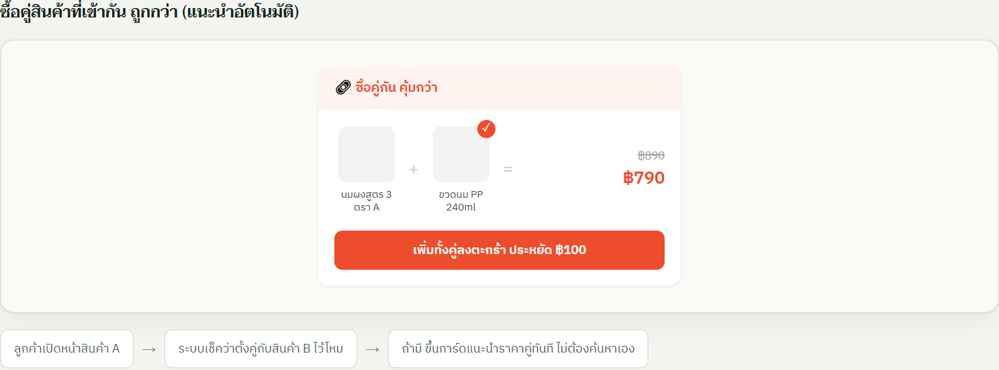
รูป 3-2 ตัวอย่างหน้าจอ: เงื่อนไขซื้อครบ 2 ชิ้นที่กำหนด ผลตอบแทนเป็นราคาพิเศษเมื่อซื้อคู่ ระบบแนะนำให้ทันทีเมื่อลูกค้าเปิดดูสินค้าตัวแรก
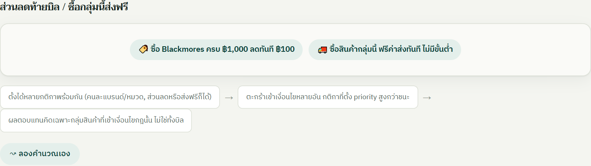
รูป 3-3 ตัวอย่างหน้าจอ: เงื่อนไขยอดซื้อครบตามแบรนด์ ผลตอบแทนเป็นส่วนลดท้ายบิลหรือฟรีค่าจัดส่งแสดงขึ้นในหน้าสรุปยอดทันทีเมื่อเข้าเงื่อนไข
3.4 โปรโมชั่นตามวันพิเศษ
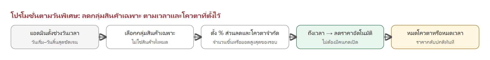
รูป 3-4 ลดราคาเฉพาะกลุ่มสินค้าที่เลือกไว้ ไม่ใช่ทุกสินค้า และมีโควตาจำนวนจำกัดในแต่ละรอบ
แอดมินกำหนดวันและเวลา เลือกกลุ่มสินค้าเฉพาะที่เข้าร่วม (ไม่ใช่สินค้าทั้งหมด) ตั้งเปอร์เซ็นต์ส่วนลดและโควตาจำนวนจำกัดของรอบ ถึงเวลาที่ตั้งไว้ราคาเปลี่ยนให้อัตโนมัติ เมื่อหมดโควตาหรือหมดเวลา ราคาจะกลับเป็นปกติทันทีโดยไม่ต้องมีคนกดปิด
หัวข้อที่ตั้งค่า รายละเอียด ช่วงเวลา วันและเวลาเริ่มต้น–สิ้นสุด กลุ่มสินค้าที่ร่วมรายการ เลือกเฉพาะบางหมวดหรือบางรายการ ไม่ใช่สินค้าทั้งหมด เปอร์เซ็นต์ส่วนลด ตั้งแยกแต่ละกลุ่มสินค้าได้ เช่น กลุ่มหนึ่งลด 50% อีกกลุ่มลด 30% โควตาของรอบ จำกัดจำนวนชิ้นหรือยอดสูงสุดที่ขายได้ในราคาพิเศษ หมดโควตาราคากลับปกติทันที
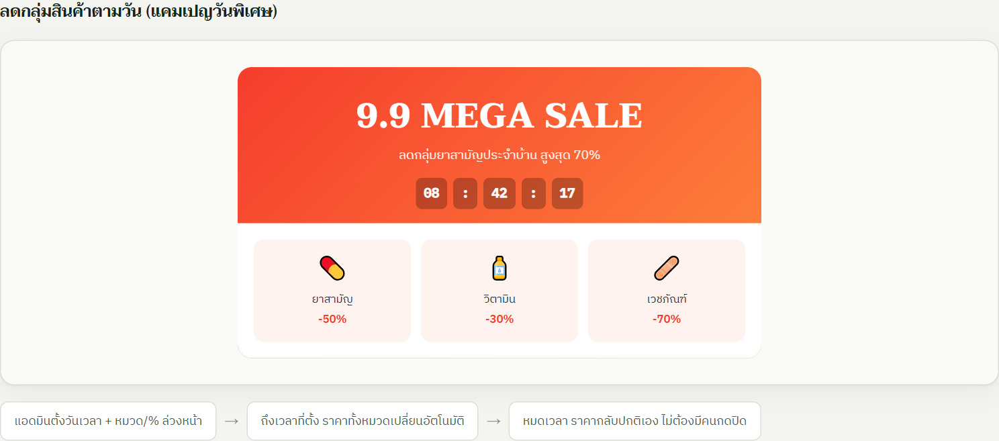
รูป 3-5 ตัวอย่างหน้าจอ: แคมเปญวันพิเศษลดราคาเฉพาะกลุ่มสินค้า เช่น ยาสามัญ วิตามิน และเวชภัณฑ์ คนละเปอร์เซ็นต์กัน
3.5 การแสดงผลหน้าเว็บ
ป้ายโปรโมชั่น เช่น "ซื้อคู่ถูกกว่า", "ลดกลุ่มสินค้า" หรือ "ส่งฟรี" บนการ์ดสินค้าตัวกรองโปรโมชั่น ลูกค้ากดดูเฉพาะสินค้าที่มีโปรโมชั่นได้จากหน้าค้นหารายละเอียดบนหน้าสินค้า เงื่อนไขโปรโมชั่นแสดงในหน้าหลักของสินค้า ไม่ต้องกดเข้าแท็บย่อย
3.6 หน้าจอและ flow การใช้งาน
หน้าจอทั้งหมดของโมดูลนี้เรียงตามลำดับ flow การใช้งาน แต่ละภาพมีเลขกำกับบนจอ และคำอธิบายของแต่ละเลขอยู่ใต้ภาพ ตามด้วยกติกา ข้อยกเว้น และสถานะที่ต้องรองรับ หน้าแอดมินใช้โครงเดียวกับหน้า "เซตของแถม" ที่ใช้งานอยู่ เพราะเป็นแนวคิดเดียวกัน ส่วนที่เพิ่มจากเดิมมีป้าย "ใหม่" กำกับ
ภาพรวม · ภาพรวม Flow โปรโมชั่น
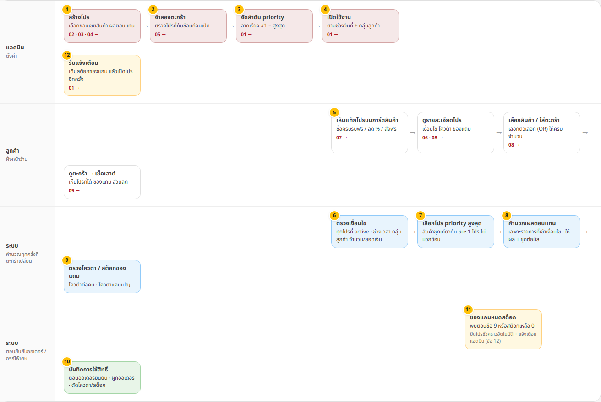
คำอธิบายแต่ละส่วนในหน้าจอ
สร้างโปร เริ่มจากกล่องเดียว ใช้ฟอร์มเดียวกับ Bundle เดิม — ส่วนที่เพิ่มใหม่มีป้าย "ใหม่": ผลตอบแทน 3 แบบ ขอบเขตแบรนด์/หมวด ใช้ร่วมกับสิทธิ์อื่น (หน้า 02) · กลุ่มขั้นบันไดแยกหน้า 03 · ลดตามวันพิเศษแยกหน้า 04
จำลองตะกร้า เป็นขั้นแนะนำ ไม่บังคับ — ใช้ตรวจว่าโปรใหม่ไปชนโปรเดิมหรือไม่ก่อนเปิดใช้งาน (ทดสอบโปรที่ยังปิดอยู่ได้)
จัดลำดับ ลากแถวในตาราง ตัวเลข #1 = สูงสุด ระบบบันทึกทันที (เหมือน Bundle เดิม) — แนะนำจัดหลังสร้างโปรใหม่ทุกครั้ง เพราะโปรใหม่ถูกวางท้ายสุดโดยค่าเริ่มต้น
เปิดใช้งาน สถานะแสดงตามวันที่เริ่ม–สิ้นสุด (ใช้งาน / ยังไม่เริ่มต้น / หมดอายุ) บันทึกเป็น "ใช้งาน" ไม่ได้ถ้ายังไม่มีสินค้าที่ต้องมีและผลตอบแทน
แท็กบนการ์ดสินค้า ป้ายเดียวต่อประเภทผลตอบแทนของโปรที่ชนะ/ใกล้ถึง ไม่แสดงตัวเลข priority ให้ลูกค้าเห็น
ตรวจเงื่อนไข ทำใหม่ทุกครั้งที่จำนวนหรือรายการในตะกร้าเปลี่ยน ไม่ใช้ผลที่จำไว้จากหน้าก่อน
เลือกโปร จัดกลุ่มตามสินค้าที่ใช้ร่วมกัน — ภายในกลุ่มเดียวกัน priority สูงสุดที่ผ่านเงื่อนไขชนะ 1 โปร โปรที่แพ้ถูกบันทึกเหตุผลไว้โชว์ในตะกร้า/จำลองตะกร้า
คำนวณ ผลตอบแทนอิงเฉพาะบรรทัดที่เข้าเงื่อนไข · ให้ผลตอบแทน 1 ชุดต่อบิล (ต่อออเดอร์ที่เข้าเงื่อนไข)
ตรวจโควตา/สต็อก ถ้าโควต้าต่อคนเต็ม โปรไม่ถูกใช้ (ปุ่มหน้าลูกค้าแสดง "โควต้าเต็มแล้ว") · ถ้าของแถมไม่พอสำหรับชุดที่ได้ ระบบให้เท่าที่สต็อกพอ ถ้าเหลือ 0 ไปข้อ 11
บันทึกการใช้สิทธิ์ เกิดตอนออเดอร์ยืนยัน/ชำระสำเร็จ ไม่ใช่ตอนใส่ตะกร้า — จึงไม่ต้องมีการพักโควตา (ต่างจากแคมเปญโควตา)
ของแถมหมดสต็อก ระบบปิดโปรชั่วคราวทันที ตะกร้าที่มีโปรนี้อยู่จะไม่ได้ของแถมและแสดงข้อความอธิบาย (หน้า 09)
รับแจ้งเตือน แอดมินเห็นป้ายแดง "ปิดชั่วคราว: ของแถมหมด" ที่แถวโปรในหน้ารายการ (หน้า 01) เติมสต็อกแล้วกดเปิดใช้งานเอง
กติกา / ข้อยกเว้น / สถานะ
โปรที่ถูกปิดชั่วคราวเพราะของแถมหมดจะไม่เปิดคืนเอง แม้เติมสต็อกแล้ว แอดมินต้องกดเปิดเอง (ค่าเริ่มต้น)
แก้ไขโปรที่มีผู้ใช้สิทธิ์ไปแล้ว มีผลกับตะกร้า/ออเดอร์ใหม่เท่านั้น ประวัติเดิมไม่เปลี่ยน
ลูกค้าเห็นโปรเฉพาะที่ active และอยู่ในช่วงเวลา · โปร "ยังไม่เริ่มต้น" แสดงเป็นการ์ดเทาและกดไม่ได้
ข้อที่ต้องตัดสินใจกับลูกค้า
โปรที่ถูกปิดชั่วคราวเพราะของแถมหมด: ให้เปิดคืนอัตโนมัติเมื่อมีสต็อก หรือให้แอดมินเปิดเอง (ค่าเริ่มต้นในมอคอัพ = แอดมินเปิดเอง)
ยอดที่ใช้นับเงื่อนไขโปรคิดจากราคาก่อนหรือหลังลด Flash Sale (ค่าเริ่มต้น = หลังลด คือราคาที่ลูกค้าจ่ายจริง)
แอดมิน · รายการโปรโมชั่น (ลำดับ priority)
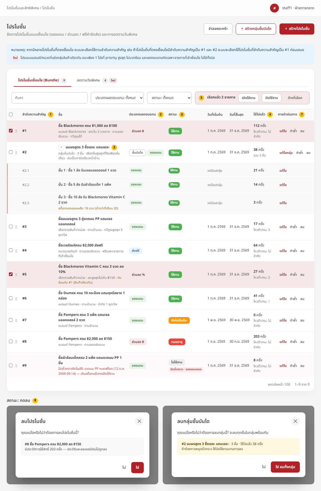
คำอธิบายแต่ละส่วนในหน้าจอ
ลำดับความสำคัญ เรียงจากบนลงล่าง #1 = สูงสุด ลากที่จับ ⋮⋮ เพื่อสลับ ระบบบันทึกทันทีและแสดง toast "อัปเดตลำดับโปรโมชั่นสำเร็จ" (เหมือน Bundle เดิม) · เลข # คือตำแหน่งในรายการ ไม่ใช่ค่าที่พิมพ์เอง · ขณะกรอง/ค้นหาจะลากไม่ได้ (กันสลับผิดตำแหน่ง)
ประเภทผลตอบแทน ใหม่ chip สีบอกชนิด: ของแถม / ส่วนลด (฿ หรือ %) / ส่งฟรี / ขั้นบันได · กรองได้จาก dropdown ด้านบน
แถวกลุ่มขั้นบันได ใหม่ กดสามเหลี่ยมเพื่อพับ/ขยาย 3 ขั้น · ลากได้ทั้งกลุ่ม (ไม่ลากแยกขั้น) · แก้ไขทั้งกลุ่มที่หน้า 03 · แต่ละขั้นเก็บเป็นแถวโปรปกติในฐานข้อมูล
ใช้ไปแล้ว ใหม่ จำนวนครั้งที่ลูกค้ารับสิทธิ์ทั้งหมด (นับจากออเดอร์ที่ยืนยันแล้ว) ใต้ตัวเลขคือโควต้า/คน ที่ตั้งไว้ · กดตัวเลขเพื่อดูประวัติ (ออเดอร์ ลูกค้า วันที่) · กลุ่มขั้นบันไดแสดงยอดรวมของทุกขั้น
เปิด/ปิดใช้งานหลายรายการ ใหม่ ติ๊กแถวแล้วแถบนี้ปรากฏ · เปิดใช้งานแถวที่ยังไม่มีสินค้าที่ต้องมีหรือผลตอบแทนไม่ได้ ระบบข้ามแถวนั้นและแจ้งรายชื่อที่ข้าม
สถานะ คำนวณจากวันที่ + สวิตช์ใช้งาน (เหมือนเดิม): ใช้งาน / ยังไม่เริ่มต้น / หมดอายุ / ไม่ใช้งาน · ป้ายแดงเสริม "ปิดชั่วคราว · ของแถมหมด" ที่ระบบตั้งให้เอง พร้อมเวลา และไม่เปิดคืนเอง
การดำเนินการ แก้ไข / ทำซ้ำ ใหม่ / ลบ · ทำซ้ำสร้างสำเนา "(สำเนา)" สถานะไม่ใช้งาน วางท้ายสุดของลำดับ · แก้ไขโปรที่ถูกใช้แล้วมีผลกับตะกร้าใหม่เท่านั้น
ยืนยันลบ ใช้ dialog เดิม ใช่/ไม่ · ถ้ามีประวัติการใช้สิทธิ์ แสดงจำนวนใน dialog และแนะนำให้ "ปิดใช้งาน" แทน · ลบกลุ่มขั้นบันไดลบทุกขั้นพร้อมกัน
กติกา / ข้อยกเว้น / สถานะ
แท็บ "ลดตามวันพิเศษ" ใช้ข้อมูลคนละชุดกับโปรเงื่อนไข ไม่มีลำดับ priority — ราคาลด Flash ถูกคิดก่อน แล้วจึงตรวจโปรเงื่อนไข
แถวที่หมดอายุ/ยังไม่เริ่มยังลากเรียงได้ (เพื่อเตรียมลำดับก่อนถึงวันเริ่ม)
สิทธิ์จัดการ: ROLE_MARKETING, ROLE_PRODUCT (เหมือนหน้าเซตของแถมเดิม) — บทบาทอื่นเห็นข้อความ "คุณไม่มีสิทธิ์เข้าถึง"
โปรเดิมที่เป็นเซตของแถมอยู่แล้ว ถูกย้ายเข้ารายการนี้ตามเดิม (ผลตอบแทน = ของแถม ขอบเขต = เลือกรายสินค้า) ไม่ต้องตั้งค่าใหม่
ข้อที่ต้องตัดสินใจกับลูกค้า
ลบโปรที่มีประวัติใช้สิทธิ์แล้ว: ค่าเริ่มต้น = ซ่อนจากรายการและเก็บประวัติไว้ (soft delete) หรือห้ามลบ ให้ปิดใช้งานอย่างเดียว
โปรที่ระบบปิดชั่วคราวเพราะของแถมหมด: เปิดคืนอัตโนมัติเมื่อมีสต็อก หรือให้แอดมินกดเปิดเอง (ค่าเริ่มต้น = แอดมินเปิดเอง)
กลุ่มขั้นบันไดควรลากเรียงทั้งกลุ่ม (ค่าเริ่มต้น) หรือให้ลากแยกขั้นได้
แอดมิน · สร้าง/แก้ไขโปรโมชั่น
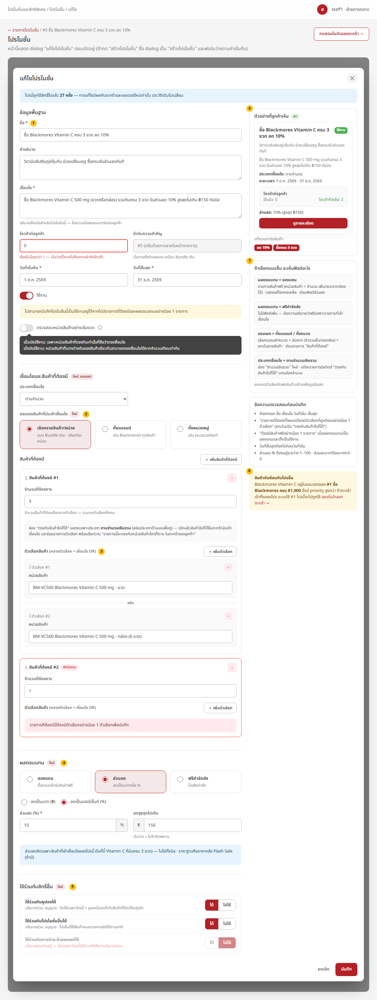
คำอธิบายแต่ละส่วนในหน้าจอ
ข้อมูลพื้นฐาน ใช้ฟิลด์เดิมของเซตของแถมทุกตัว (ชื่อ คำอธิบาย เงื่อนไข โควต้า วันที่ ใช้งาน ตรวจหน่วยอย่างเข้มงวด) · ตรวจแบบ inline ใต้ช่อง (ตัวอย่างโควต้า = 0 ขึ้นขอบแดง) · กด Enter ในฟอร์มเท่ากับบันทึก (หน่วงกันกดซ้ำ 0.5 วินาที) · ลำดับความสำคัญเป็นแบบอ่านอย่างเดียว ปรับที่หน้ารายการ
ขอบเขตสินค้า ใหม่ ค่าเริ่มต้น = "เลือกรายสินค้า/หน่วย" (พฤติกรรมเดิมทั้งหมด) · เลือกแบรนด์/หมวดแล้วช่อง "สินค้าที่ต้องมี" ถูกแทนที่ด้วยตัวเลือกแบรนด์/หมวด + ยกเว้นรายสินค้า · เปลี่ยนขอบเขตหลังกรอกแล้ว ระบบถามยืนยันก่อนล้างรายการเดิม
ตัวเลือก (OR) หลายตัวเลือกในรายการเดียว = ลูกค้าเลือกตัวใดก็ได้ รวมกันให้ครบ "จำนวนที่ต้องการ" · เพิ่มตัวเลือกใหม่ไม่ได้ถ้ามีตัวเลือกที่ยังว่างอยู่ (toast "กรุณาเติมข้อมูลตัวเลือกให้ครบถ้วน…") · ลากเรียงลำดับตัวเลือกได้
ผลตอบแทน ใหม่ เลือกได้ 1 อย่างต่อโปร · สลับแล้วข้อมูลของแบบเดิมถูกเก็บไว้ในฟอร์มจนกว่าจะบันทึก (กลับมาเลือกได้ไม่หาย) · ส่วนลด % ตั้งเพดานบาทได้
ใช้ร่วมกับสิทธิ์อื่น ใหม่ ค่าเริ่มต้นตามนโยบายร่วมของระบบ โปรนี้ "ปิด" ให้เข้มกว่าได้ แต่ "เปิด" เกินนโยบายร่วมไม่ได้ (แถวสีจางพร้อมเหตุผล)
ตัวอย่างที่ลูกค้าเห็น เปลี่ยนตามฟอร์มทันที (ชื่อ เงื่อนไข ช่วงวันที่ ผลตอบแทน แท็กบนการ์ดสินค้า) ใช้ component เดียวกับหน้า 06 — เห็นสถานะ "ยังไม่เริ่มต้น/ใช้งาน" ตามวันที่กรอก
ฟิลด์ที่เปลี่ยนตามตัวเลือก แผงสรุปให้ทีมพัฒนาและลูกค้าเห็นภาพรวมว่าแต่ละตัวเลือกเปิดฟิลด์อะไร โดยไม่ต้องคลิกทดลองทีละแบบ
เตือนสินค้าทับซ้อน ตรวจตอนเปิดฟอร์มและเมื่อเปลี่ยนขอบเขต: ถ้าสินค้าอยู่ในขอบเขตของโปรที่ priority สูงกว่า จะแสดงชื่อโปรนั้นและลิงก์ไปจำลองตะกร้า — เป็นคำเตือน ไม่บล็อกการบันทึก
กติกา / ข้อยกเว้น / สถานะ
บันทึกเป็นใช้งานได้เมื่อมี "สินค้าที่ต้องมี"/ขอบเขต และผลตอบแทนครบ (ของแถมต้องมีสินค้าฟรีอย่างน้อย 1 รายการ) — บันทึกเป็นไม่ใช้งานได้เสมอ
ปุ่ม "บันทึก" แสดง toast สำเร็จ แล้วกลับหน้ารายการ · เกิดข้อผิดพลาดจากเซิร์ฟเวอร์ = dialog ไม่ปิด แสดง toast แดง
แก้โปรที่ใช้ไปแล้ว: ประวัติการใช้สิทธิ์เก็บ snapshot เงื่อนไข/ผลตอบแทนตอนใช้ ไม่เปลี่ยนตาม
โปรเดิม (Bundle) เปิดแล้วเห็นขอบเขต = เลือกรายสินค้า, ผลตอบแทน = ของแถม, ใช้ร่วม = ตามนโยบายร่วม
ข้อที่ต้องตัดสินใจกับลูกค้า
โปร "เลือกรายสินค้า" ที่สินค้าซ้ำกับโปรแบบแบรนด์/หมวดที่ priority สูงกว่า ให้แพ้ทั้งโปร (ค่าเริ่มต้น) หรือแพ้เฉพาะสินค้าที่ชนกัน
ของแถมได้พอยท์หรือไม่ (ค่าเริ่มต้น = 0 พอยท์ เพราะราคา ฿0)
แอดมิน · กลุ่มขั้นบันได (GiftSetGroup)
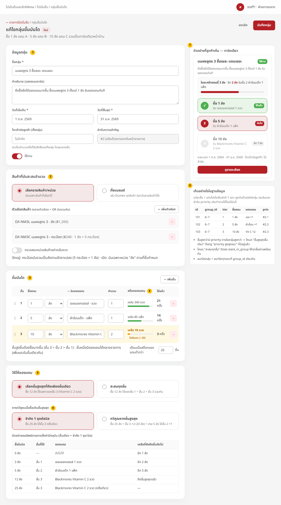
คำอธิบายแต่ละส่วนในหน้าจอ
ข้อมูลกลุ่ม ชื่อ/คำอธิบาย/ช่วงเวลา/สถานะใช้ร่วมกันทุกขั้น (ตั้งครั้งเดียว) · โควต้าต่อลูกค้านับระดับกลุ่ม: รับขั้น 1 แล้วกลับมารับขั้น 2 ในบิลถัดไป นับเป็น 2 ครั้ง
สินค้าที่นับสะสม ใช้ตัวเลือก OR แบบเดียวกับ Bundle · "ตรวจหน่วยอย่างเข้มงวด" ปิด = แปลงหน่วยเป็นลังให้ (5 กระป๋อง = 1 ลัง) · หน่วยของ "ซื้อครบ" ในแต่ละขั้นต้องเป็นหน่วยเดียวกันทั้งกลุ่ม
ตารางขั้น แถวละ 1 ขั้น: "ซื้อครบ [จำนวน][หน่วย] → รับ [ของแถม][จำนวน]" · เพิ่ม/ลบ/ลากเรียง · ระบบเรียงตามจำนวนซื้อครบให้เสมอ และเตือนถ้าจำนวนซ้ำหรือลดลง (ขั้นต้องมากขึ้นเรื่อยๆ) · ต้องมีอย่างน้อย 2 ขั้น ไม่เช่นนั้นให้ใช้โปรธรรมดา
สต็อกของแถมรายขั้น แสดงคงเหลือและแถบ · ต่ำกว่าเกณฑ์ (ตั้งได้ ค่าเริ่มต้น 20) ขึ้นเหลืองและแจ้งเตือนในหน้ารายการ · เหลือ 0 = ปิดเฉพาะขั้นนั้นชั่วคราว (ขั้นอื่นยังใช้ได้) ลูกค้าที่ถึงขั้นนั้นจะได้ขั้นที่ต่ำลงมาแทน
ขั้นสูงสุดขั้นเดียว vs สะสมทุกขั้น ค่าเริ่มต้น = ขั้นสูงสุดขั้นเดียว (ลูกค้าเข้าใจง่าย ของแถมไม่บานปลาย) · คำอธิบายตัวอย่างใต้ตัวเลือกใช้เลข 12 ลัง ให้เห็นความต่างทันที
การ์ดเดียวหน้าบ้าน ลูกค้าเห็น 1 การ์ดต่อกลุ่ม แสดงบันไดทุกขั้นและ "อีก N ลัง รับขั้นถัดไป" ตามตะกร้าจริง — ไม่แสดงเป็น 3 โปรแยก
โครงสร้างข้อมูล ทีมพัฒนาไม่ต้องสร้างเอนจินใหม่ — เพิ่มคอลัมน์ group_id / tier_no / stack_in_group ในตารางโปรเดิม และหน้ารายการจัดกลุ่มแถวตาม group_id
กติกา / ข้อยกเว้น / สถานะ
แก้จำนวนซื้อครบของขั้นที่มีผู้ใช้แล้ว: มีผลกับตะกร้าใหม่เท่านั้น · ลบขั้นที่มีประวัติ: ไม่ลบประวัติ
ของแถมทุกขั้นถูกกันสต็อกตอนยืนยันออเดอร์เท่านั้น ไม่กันตอนอยู่ในตะกร้า
ลูกค้าที่ซื้อกระป๋องปนลัง นับรวมเป็นลังตามอัตราแปลงเมื่อปิดตรวจหน่วยอย่างเข้มงวด (เศษกระป๋องไม่ปัดขึ้น)
ข้อที่ต้องตัดสินใจกับลูกค้า
โหมดการให้ของแถม: ค่าเริ่มต้นที่เสนอ = "เลือกขั้นสูงสุดที่ถึงเพียงขั้นเดียว" หรือต้องการ "สะสมทุกขั้น"
เมื่อของแถมขั้นสูงสุดหมด ให้ตกลงมาให้ขั้นต่ำกว่า (ค่าเริ่มต้น) หรือปิดทั้งกลุ่ม
นับเศษกระป๋องเป็นลังหรือไม่ (ค่าเริ่มต้น = ไม่ปัดขึ้น)
แอดมิน · แคมเปญลดตามวันพิเศษ
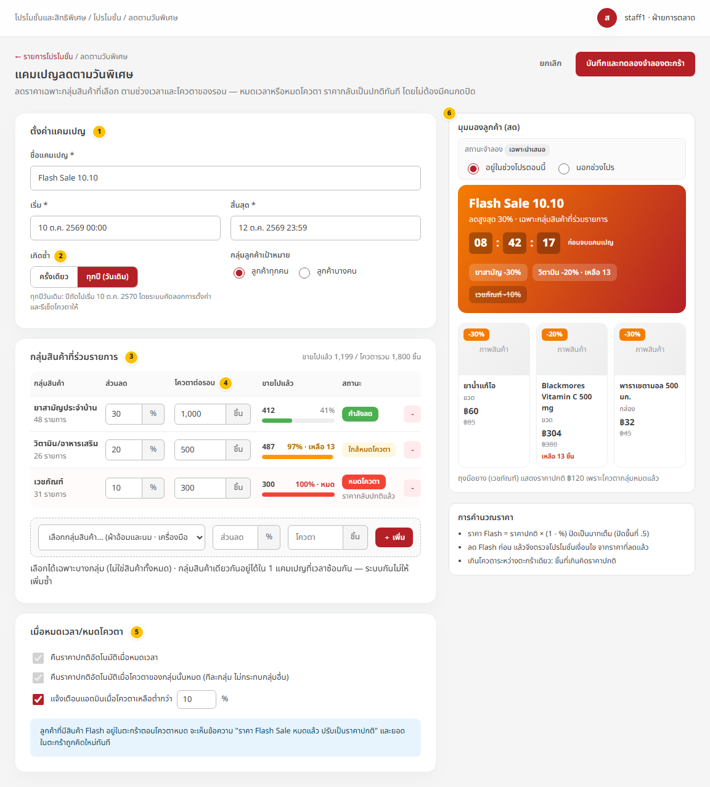
คำอธิบายแต่ละส่วนในหน้าจอ
ตั้งค่าแคมเปญ ชื่อ + วันเวลาเริ่ม–สิ้นสุด (ระดับนาที) · สิ้นสุดต้องหลังเริ่ม · ช่วงเวลาซ้อนกับแคมเปญอื่นที่มีกลุ่มสินค้าเดียวกัน ระบบเตือนและไม่ให้บันทึก
เกิดซ้ำ "ครั้งเดียว" หรือ "ทุกปี (วันเดิม)" — ทุกปีคัดลอกการตั้งค่าไปปีถัดไปอัตโนมัติและรีเซ็ตโควตา (แอดมินแก้ได้ก่อนถึงวัน)
กลุ่มสินค้า เลือกได้เฉพาะบางหมวด/กลุ่ม ตั้ง % ต่อกลุ่ม (เช่น 30% / 20% / 10%) · เพิ่ม/ลบแถวได้ระหว่างแคมเปญกำลังทำงาน (เพิ่มกลุ่มมีผลทันที)
โควตาต่อรอบและความคืบหน้า นับเป็นชิ้นที่ขายได้ในราคาพิเศษ · แถบเขียว < 90% / เหลือง ≥ 90% / แดงเมื่อหมด · หมดโควตา = ราคากลับปกติเฉพาะกลุ่มนั้นทันที (ไม่รอหมดเวลา)
คืนราคาอัตโนมัติ ล็อกเปิดไว้ ไม่ให้ปิด (เป็นหลักของโปรประเภทนี้) · ตั้งแจ้งเตือนแอดมินเมื่อโควตาใกล้หมดได้
มุมมองลูกค้า + สถานะจำลอง ปุ่มสลับ "อยู่ในช่วงโปร / นอกช่วงโปร" ใช้เพื่อนำเสนอเท่านั้น ไม่เปลี่ยนข้อมูลจริง (ระบบจริงเช็คจากวันเวลาที่ตั้ง) · แบนเนอร์มีนาฬิกานับถอยหลัง การ์ดสินค้าขีดฆ่าราคาเดิม และป้าย "เหลือ N ชิ้น" เมื่อโควตาต่ำกว่า 20%
กติกา / ข้อยกเว้น / สถานะ
สถานะแคมเปญ: ตั้งเวลาไว้ → กำลังจัดอยู่ → จบแล้ว (หมดเวลา/หมดโควตาทุกกลุ่ม) · แก้ % ระหว่างจัดอยู่มีผลกับตะกร้าใหม่ ตะกร้าที่ค้างอยู่คิดใหม่ทุกครั้งที่โหลด
ใช้ได้กับลูกค้าที่กำหนดเท่านั้น (ทุกคน / บางคน) · ลูกค้านอกกลุ่มเห็นราคาปกติ ไม่เห็นแบนเนอร์
ถ้าสินค้าอยู่ทั้งในแคมเปญ Flash และโปรโมชั่นเงื่อนไข ลด Flash ก่อน แล้วโปรเงื่อนไขคิดจากราคาที่ลดแล้ว
ข้อที่ต้องตัดสินใจกับลูกค้า
โควตาต่อรอบนับ "ชิ้น" (ค่าเริ่มต้น) หรือ "ยอดเงิน" — spec ระบุได้ทั้งสองแบบ
ปัดเศษราคา Flash เป็นบาทเต็ม (ค่าเริ่มต้น) หรือเก็บสตางค์
ยอดที่ใช้นับเงื่อนไขโปรเงื่อนไขคิดจากราคาหลังลด Flash (ค่าเริ่มต้น) หรือราคาก่อนลด
มีโควตาต่อลูกค้า/ร้านด้วยหรือไม่ (ตอนนี้โควตาเป็นของทั้งรอบเท่านั้น)
แอดมิน · จำลองตะกร้า ตรวจโปรที่ชนะ
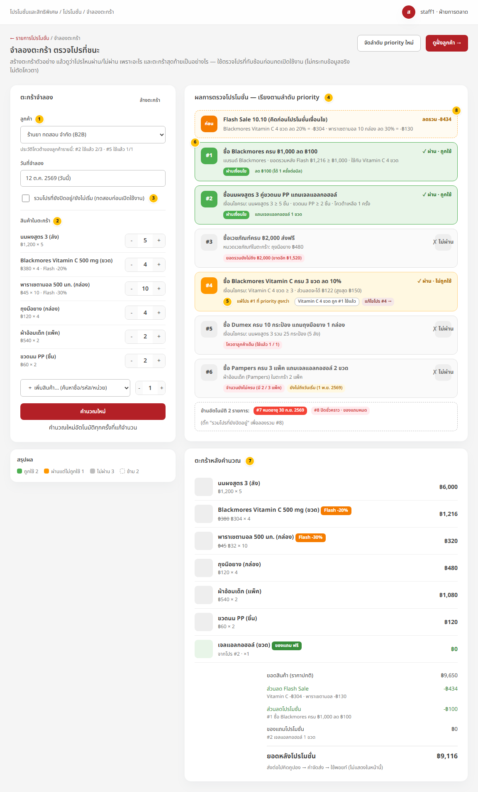
คำอธิบายแต่ละส่วนในหน้าจอ
ลูกค้า + วันที่ เลือกประเภทลูกค้า (B2B/B2C) หรือค้นหาลูกค้าจริงเพื่อใช้ประวัติโควต้าจริง · วันที่จำลองเปลี่ยนได้เพื่อทดสอบโปรที่ยังไม่เริ่ม (เหตุผลที่แสดงเปลี่ยนตาม) · ไม่มีการตัดโควตาหรือสร้างประวัติ
ตะกร้า เพิ่มสินค้าแล้วปรับจำนวนด้วยปุ่ม −/+ หรือพิมพ์ · ผลทางขวาคำนวณใหม่ทันที (ดีเลย์ 300 มิลลิวินาที) · ค้นหาสินค้าระดับ "หน่วยสินค้า" เหมือนช่องค้นหาในหน้าตั้งค่า
รวมโปรที่ยังปิดอยู่ ติ๊กเพื่อทดสอบโปรที่ยังไม่เปิดใช้งาน/ยังไม่ถึงวันเริ่ม ก่อนกดเปิดจริง · แถวพวกนี้ติดป้าย "ทดสอบ" เพื่อไม่ให้สับสนกับสถานะจริง
เรียงตาม priority เหมือนลำดับในหน้ารายการ (#1 บนสุด) · ทุกโปรที่ active ปรากฏหนึ่งแถวเสมอ ไม่ว่าผ่านหรือไม่ เพื่อให้เห็นว่า "ทำไมโปรนี้ไม่ทำงาน" · โปรที่หมดอายุ/ปิดอยู่ถูกรวมเป็นแถวเดียวท้ายรายการ
ป้ายเหตุผล ผ่าน (เขียว) / ผ่านแต่ไม่ถูกใช้ (เหลือง) / ไม่ผ่าน (เทา) · เหตุผลมาตรฐาน: ยอดรวมยังไม่ถึง ฿X (บอกขาดอีกเท่าไร) · จำนวนยังไม่ครบ · แพ้โปร #N ที่ priority สูงกว่า · โควตาลูกค้าเต็ม · ยังไม่ถึงวันเริ่ม/หมดอายุ · ของแถมหมด · กลุ่มลูกค้าไม่ตรง (กดป้ายที่มีลิงก์ไปแก้ไขโปรได้)
โปรที่ชนะ แถวเขียว = ถูกใช้จริงในตะกร้า (อาจมีหลายโปรถ้าใช้คนละสินค้า) · โปรที่ผ่านเงื่อนไขแต่แพ้บอกชัดว่าแพ้ใคร และใช้สินค้าไหนร่วมกัน เพื่อให้แอดมินตัดสินใจจัดลำดับใหม่
ตะกร้าหลังคำนวณ แสดงบรรทัดของแถม (เขียว ฿0) และส่วนลดแยกบรรทัด + ยอดหลังโปรโมชั่น · ตรงกับที่ลูกค้าเห็นในหน้า 09 ใช้ฟังก์ชันคำนวณเดียวกับเช็คเอาต์
Flash Sale ก่อนเสมอ ลดราคาสินค้าด้วย Flash แล้วจึงตรวจโปรเงื่อนไขจากราคาที่ลดแล้ว — จึงเห็นว่ายอด Blackmores หลัง Flash ฿1,216 (ก่อน Flash ฿1,520)
กติกา / ข้อยกเว้น / สถานะ
โปรแบบแบรนด์/หมวดที่แย่งกลุ่มสินค้าเดียวกัน: ชนะเฉพาะ priority สูงสุดที่ผ่านเงื่อนไข ไม่บวกซ้อน · ผลตอบแทนคิดเฉพาะบรรทัดที่เข้าเงื่อนไข
ตะกร้าว่าง: แสดงข้อความ "เพิ่มสินค้าในตะกร้าจำลองเพื่อดูผล" ฝั่งขวา · ไม่มีโปร active เลย: แสดง "ยังไม่มีโปรโมชั่นที่ใช้งานอยู่"
หน้านี้เป็นเครื่องมืออ่านอย่างเดียว ไม่แก้ข้อมูลโปร (ลิงก์แก้ไขเปิดหน้า 02)
เก็บตะกร้าจำลองไว้ในเบราว์เซอร์ของแอดมินได้ (ไม่แชร์ข้ามผู้ใช้)
ข้อที่ต้องตัดสินใจกับลูกค้า
โปรแบบเลือกรายสินค้าที่ใช้สินค้าซ้ำกับโปรที่ priority สูงกว่า: ค่าเริ่มต้น = แพ้ทั้งโปร (ไม่แบ่งสินค้า) หรือให้ใช้เฉพาะชิ้นที่เหลือ
ควรแจ้งเตือนอัตโนมัติตอนกดเปิดใช้งานโปรใหม่ว่า "โปรนี้จะไม่เคยชนะ เพราะทับกับ #N" หรือไม่ (ตอนนี้เป็นการเตือนในหน้าแก้ไข)
เก็บ "สถานการณ์ทดสอบ" ไว้ใช้ซ้ำหลังแก้โปรหรือไม่ (ตอนนี้ไม่เก็บ)
ลูกค้า · หน้ารวมโปรโมชั่น
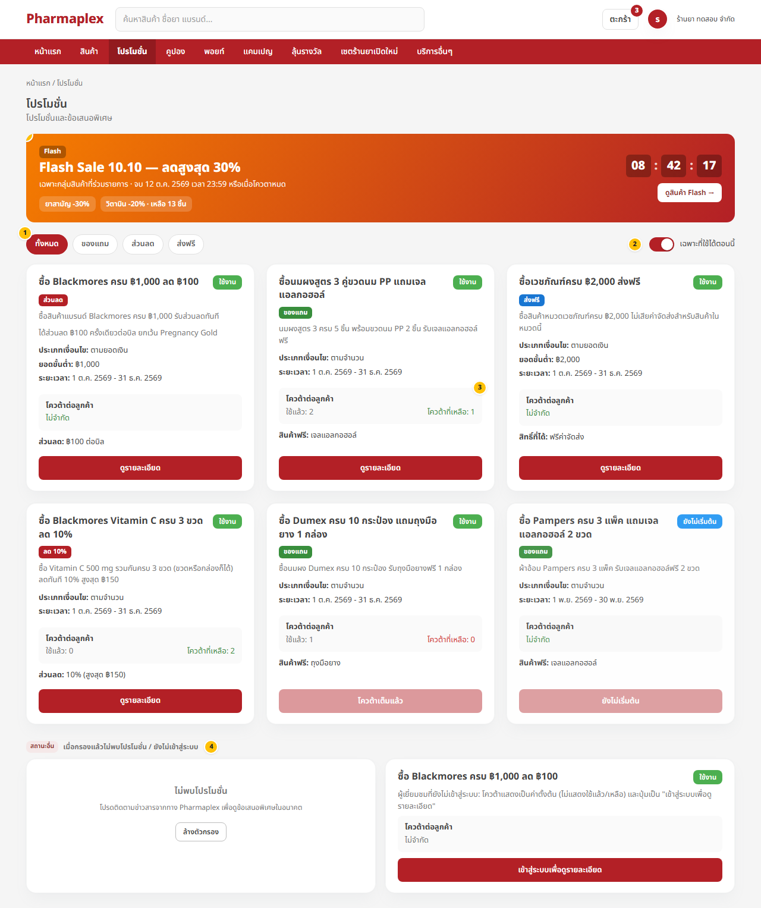
คำอธิบายแต่ละส่วนในหน้าจอ
ตัวกรองประเภท ใหม่ ทั้งหมด / ของแถม / ส่วนลด / ส่งฟรี / ขั้นบันได — หน้าเดิมแสดงทุกเซตในหน้าเดียวไม่มีตัวกรอง · เลือกได้ทีละประเภท ค่าเริ่มต้น "ทั้งหมด"
เฉพาะที่ใช้ได้ตอนนี้ ใหม่ เปิดอยู่ = ซ่อนโปรที่ยังไม่เริ่มและที่โควต้าเต็ม · ปิด = เห็นทั้งหมด (โปรที่ยังไม่เริ่มแสดงปุ่มเทา "ยังไม่เริ่มต้น" ตามหน้าเดิม) · จำค่าไว้ในเบราว์เซอร์
การ์ดกลุ่มขั้นบันได ใหม่ 1 การ์ดต่อกลุ่ม กว้าง 2 ช่อง แสดงบันไดทุกขั้น พร้อมสถานะจากตะกร้าปัจจุบัน ("เพิ่มอีก 1 ลัง รับขั้น 2") · ลูกค้าที่ไม่มีของในตะกร้าเห็นบันไดเป็นสถานะรอทุกขั้น
โควต้าต่อลูกค้า กล่องเทาตามหน้าเดิม: ไม่จำกัด (เขียว) หรือ ใช้แล้ว / เหลือ — เหลือ > 0 เขียว, = 0 แดง และปุ่มเปลี่ยนเป็น "โควต้าเต็มแล้ว" (ปิดการกด) · ค่า "ใช้แล้ว" นับจำนวนครั้งที่รับสิทธิ์จากออเดอร์ที่ยืนยันแล้ว
สถานะว่าง / ยังไม่ล็อกอิน ไม่พบโปร: ข้อความ "ไม่พบโปรโมชั่น" + คำอธิบายเดิม · ผู้เยี่ยมชม: ปุ่ม "เข้าสู่ระบบเพื่อดูรายละเอียด" (เปิด popup ล็อกอิน) ไม่นับโควต้า
แบนเนอร์ Flash ใหม่ แสดงเมื่อมีแคมเปญลดตามวันพิเศษที่กำลังจัดอยู่และลูกค้าอยู่ในกลุ่มเป้าหมาย · นับถอยหลังถึงเวลาสิ้นสุด · กลุ่มที่โควตาหมดไม่แสดงใน chip · ปุ่มพาไปรายการสินค้าที่ร่วมรายการ
กติกา / ข้อยกเว้น / สถานะ
แสดงเฉพาะโปรที่ใช้งานและอยู่ในช่วงวันที่ (เรียงตาม priority เหมือนเดิม) — ยกเว้นโปร "ยังไม่เริ่มต้น" ที่แสดงเป็นการ์ดประกาศล่วงหน้า · โปรหมดอายุหรือปิดชั่วคราว (ของแถมหมด) ไม่แสดง
ตัวเลข priority ไม่แสดงให้ลูกค้าเห็น · สถานะ chip ตามหน้าเดิม: ใช้งาน / ยังไม่เริ่มต้น / หมดอายุ
คลิกทั้งการ์ดหรือปุ่ม "ดูรายละเอียด" ไปหน้า 08 · ถ้าโควต้าเต็มปุ่มกดไม่ได้
ข้อความ "ของแถม/ส่วนลด/ส่งฟรี" ที่ท้ายการ์ดสร้างจากผลตอบแทนที่ตั้งไว้ (เดิมมีเฉพาะ "สินค้าฟรี")
ข้อที่ต้องตัดสินใจกับลูกค้า
แบนเนอร์ Flash อยู่บนหน้า "โปรโมชั่น" นี้ด้วย หรือแสดงเฉพาะหน้าแรก/หน้าสินค้า
โปรที่โควต้าเต็ม: ยังแสดงการ์ดเทา (ค่าเริ่มต้น เหมือนหน้าเดิม) หรือซ่อนทันที
ลูกค้า · การ์ดสินค้า + หน้าสินค้าที่มีโปร
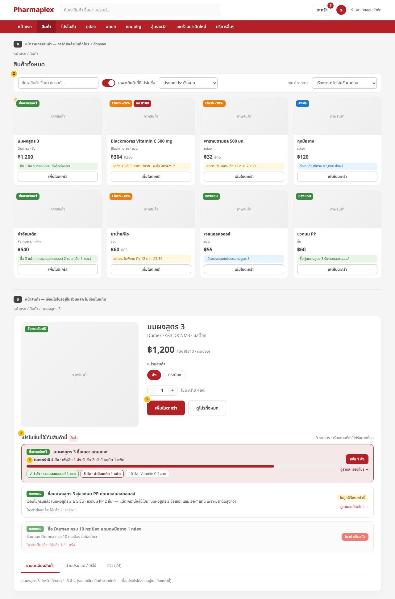
คำอธิบายแต่ละส่วนในหน้าจอ
แท็กบนการ์ดสินค้า ใหม่ ซื้อครบรับฟรี (แดง) / ของแถม (เขียว) / ส่งฟรี (น้ำเงิน) / ลด % หรือ ลด ฿ (แดง) / Flash (ส้ม) · สูงสุด 2 แท็กต่อการ์ด (เกินเป็น "+1") เรียงตามความสำคัญ · ข้อความบรรทัดล่างสรุปโปรที่ใกล้ที่สุด สั้นไม่เกิน 1 บรรทัด
ตัวกรองและการเรียง ใหม่ "เฉพาะสินค้าที่มีโปรโมชั่น" + ประเภทโปร + "เรียงตาม: โปรโมชั่นมาก่อน" (ดันสินค้าที่มีโปรขึ้นก่อน แล้วค่อยเรียงตามเดิม) · ตัวกรองคงอยู่ใน URL
โปรโมชั่นที่ใช้กับสินค้านี้ ใหม่ อยู่ในส่วนหลักของหน้าสินค้า เหนือแท็บรายละเอียด (ตาม spec 3.5 ไม่ซ่อนในแท็บย่อย) · แสดงทุกโปรที่สินค้านี้เข้าร่วม ทั้งที่ลูกค้าได้ ใกล้ได้ ไม่ถูกใช้ และโควต้าเต็ม
ความคืบหน้าจากตะกร้าจริง "ในตะกร้ามี 4 ลัง · เพิ่มอีก 1 ลัง รับขั้น 2" ใช้ข้อมูลตะกร้าปัจจุบันของลูกค้า · ปุ่ม "เพิ่ม 1 ลัง" เพิ่มจำนวนที่ขาดให้ทันที · ผู้เยี่ยมชมที่ยังไม่ล็อกอินเห็นเงื่อนไขแต่ไม่มีแถบความคืบหน้า
CTA "เพิ่มในตะกร้า" ตามปกติ · "ดูโปรทั้งหมด" ไปหน้า 06 · ลิงก์ "ดูรายละเอียดโปร" ในแต่ละแถวไปหน้า 08
กติกา / ข้อยกเว้น / สถานะ
ราคาบนการ์ด/หน้าสินค้า: ขีดฆ่าราคาปกติเมื่อมี Flash เท่านั้น — ส่วนลดจากโปรเงื่อนไขแสดงในตะกร้า ไม่ปรับราคาบนการ์ด เพราะขึ้นกับตะกร้าทั้งใบ
โปรที่ยังไม่เริ่มต้นแสดงเป็นแถวเทา "เริ่ม 1 พ.ย. 2569" (ไม่มีปุ่ม) · โปรหมดอายุ/ปิดชั่วคราวไม่แสดง
แสดงสูงสุด 5 โปรต่อสินค้า เกินนั้นมีลิงก์ "ดูโปรทั้งหมด"
สินค้าที่เป็น "ของแถม" ของโปรใด แสดงข้อความ "เป็นของแถมในโปร …" แต่ไม่ลดราคาเมื่อซื้อเอง
ข้อที่ต้องตัดสินใจกับลูกค้า
จำนวนแท็กสูงสุดต่อการ์ด (เสนอ 2) และลำดับความสำคัญของแท็ก (Flash > ซื้อครบรับฟรี > ส่งฟรี)
ต้องการแท็ก "ใกล้ได้รับโปร" บนการ์ดสินค้าในหน้ารายการด้วยหรือไม่ (ตอนนี้แสดงเฉพาะหน้าสินค้า/ตะกร้า)
ลูกค้า · รายละเอียดโปร + เลือกสินค้า
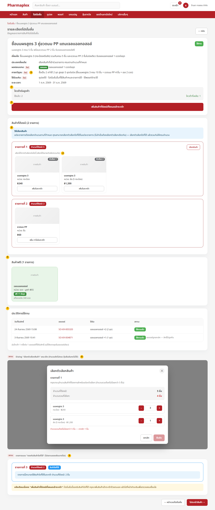
คำอธิบายแต่ละส่วนในหน้าจอ
โควต้า ตามหน้าเดิม (กล่องเทา ใช้แล้ว / โควต้าที่เหลือ เขียว–แดง) · เหลือ 0: ปุ่มเพิ่มสินค้าทั้งหมดและปุ่มเลือกสินค้าถูกปิด พร้อมข้อความ "โควต้าเต็มแล้ว" · ผู้เยี่ยมชมถูกพาไปล็อกอินก่อนเปิดหน้านี้
ผลตอบแทน / ใช้ร่วมกับ ใหม่ สองแถวใต้ "ประเภทเงื่อนไข" อธิบายด้วยตัวอย่างตัวเลขจริงของโปรนั้น · ผลตอบแทนเป็นส่วนลดแสดงเป็น "ลด 10% สูงสุด ฿150"
วิธีเลือกสินค้า ข้อความเดิม + คำอธิบาย OR: เลือกตัวเลือกใดก็ได้ในรายการ แล้วรวมกันให้ครบจำนวน (ไม่ต้องเป็นตัวเลือกเดียวกัน)
การ์ดตัวเลือก ใช้ ProductUnitCard เดิม + ป้าย "ตัวเลือก N" มุมขวาบน · มีปุ่มเพิ่มในตะกร้าต่อใบได้ตามปกติ · สินค้าหมดสต็อกแสดงป้ายแดงและปิดปุ่ม
ปุ่มหลัก "เพิ่มสินค้าที่ต้องมีทั้งหมดเข้าตะกร้า": ถ้าทุกรายการมีตัวเลือกเดียว เพิ่มเข้าตะกร้าทันทีแล้วไปตะกร้า · ถ้ามีรายการที่ต้องเลือก (หลายตัวเลือก) เปิด dialog ทีละรายการ · ถ้ามีรายการ "สินค้าใดก็ได้" แจ้งเตือนว่าต้องเพิ่มเอง
สินค้าฟรี การ์ดสินค้าไม่มีปุ่ม พร้อมป้าย "ฟรี ×จำนวนต่อชุด" และมูลค่า · ของแถมหมด: ป้ายแดง "หมดชั่วคราว" และโปรถูกปิดตามกติกา
ประวัติการใช้งาน เพิ่มคอลัมน์ ออเดอร์ (ลิงก์ไปรายละเอียดออเดอร์) และของที่ได้รับ · ออเดอร์ถูกยกเลิกยังนับว่าใช้สิทธิ์แล้ว (นโยบายร่วม) พร้อมข้อความบอก
Dialog เลือกตัวเลือก ตัวคูณจำนวนต่อตัวเลือก (−/พิมพ์/+) · แสดงจำนวนที่ต้องมี และจำนวนรวมที่เลือก (แดงเมื่อไม่ครบ เขียวเมื่อครบ) · ปุ่มยืนยันกดไม่ได้จนกว่าจะครบ (ถ้ากดเมื่อไม่ครบ toast "จำนวนรวมต้องไม่น้อยกว่า 5 ชิ้น") · ยืนยันแล้วไปรายการถัดไปที่ต้องเลือก ครบแล้วเพิ่มลงตะกร้าและไปหน้าเช็คเอาต์/ตะกร้า
"ตรงกับสินค้าใดก็ได้" การ์ดขอบฟ้า ไม่มีรายการสินค้า มีป้าย "สินค้าใดก็ได้" และข้อความอธิบาย — ไม่สามารถเพิ่มล่วงหน้าได้ ต้องไปเลือกสินค้าเองแล้วดูผลที่ตะกร้า
กติกา / ข้อยกเว้น / สถานะ
จำนวนรวมที่เลือกในรายการ นับเป็นชิ้นตามหน่วยที่เลือก (ลัง 1 = 1 ชิ้น) · ถ้าโปรเปิด "ตรวจหน่วยอย่างเข้มงวด" การ์ดตัวเลือกแสดงเฉพาะหน่วยที่ตรงเงื่อนไข
โปรหมดอายุ/ยังไม่เริ่ม: ปุ่มเพิ่มสินค้าถูกปิด แสดงสถานะบนหัวการ์ด · เปิดหน้าโปรที่ไม่มีอยู่/ถูกปิด = "ไม่พบโปรโมชั่นที่ต้องการ" + ปุ่มกลับ
ไม่มีปุ่ม "รับสิทธิ์" — สิทธิ์เกิดอัตโนมัติเมื่อตะกร้าเข้าเงื่อนไขและยืนยันออเดอร์
ข้อที่ต้องตัดสินใจกับลูกค้า
ปุ่ม "เพิ่มสินค้าที่ต้องมีทั้งหมดเข้าตะกร้า" ในระบบจริงถูกซ่อนไว้ (comment) — เปิดใช้งานในหน้านี้หรือคงซ่อนต่อ
หลังเพิ่มสินค้าลงตะกร้าแล้ว ไปหน้าตะกร้า/เช็คเอาต์ทันที (พฤติกรรมเดิม) หรืออยู่หน้าเดิมพร้อม toast
การ์ดตัวเลือกบังคับให้เลือกจากกลุ่ม "กระป๋อง/ลัง" แยกหรือรวมกันได้ (ค่าเริ่มต้น = รวมกันได้)
ลูกค้า · ตะกร้า: โปรที่ได้รับ
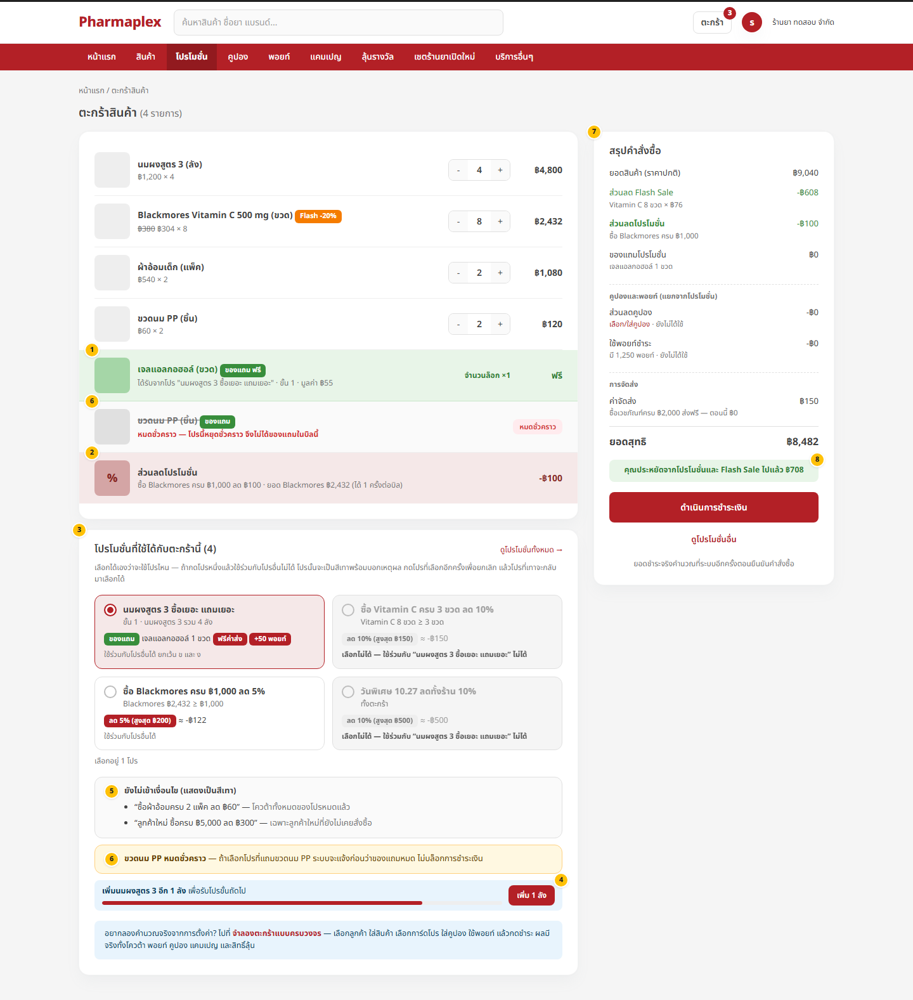
คำอธิบายแต่ละส่วนในหน้าจอ
บรรทัดของแถม พื้นเขียว ป้าย "ของแถม ฟรี" ราคาแสดงว่า "ฟรี" · จำนวนล็อก ลูกค้าแก้/ลบเองไม่ได้ (จำนวนมาจากโปร) — เมื่อลูกค้าลดสินค้าที่ต้องมี ของแถมหายไปเองพร้อม toast "ของแถมถูกนำออก เพราะไม่เข้าเงื่อนไขแล้ว" · ของแถมแสดงมูลค่าไว้เป็นข้อมูล ไม่รวมในยอด
บรรทัดส่วนลด แยกเป็นบรรทัดพื้นแดงอ่อน บอกโปรและฐานที่คำนวณ (เฉพาะสินค้าที่เข้าเงื่อนไข ไม่ใช่ทั้งบิล) · ได้ส่วนลดครั้งเดียวต่อบิล ไม่ว่าซื้อเกินเงื่อนไขกี่เท่า
โปรโมชั่นที่ได้รับ การ์ดต่อโปรที่ถูกใช้ แสดงสิ่งที่ได้และเหตุที่ได้ · เรียงตามลำดับ priority · ลูกค้าไม่เห็นเลข priority
ข้อความชวนซื้อเพิ่ม "เพิ่มอีก N …" แสดงเมื่อใกล้ถึงขั้น/ยอดถัดไป (ขาดไม่เกิน 1 ขั้นหรือ 30% ของเงื่อนไข) · ปุ่มเพิ่มจำนวนที่ขาดให้ทันที · ถ้าเปลี่ยนโปรที่ได้ (ขั้น 1 → ขั้น 2) บอกว่าของแถมเดิมจะถูกแทน
โปรที่ไม่ถูกใช้ แจ้งแบบข้อความสั้นว่าโปร Z ไม่ถูกใช้ เพราะโปร X ลำดับสูงกว่า — เพื่อไม่ให้ลูกค้าสงสัยว่าทำไมไม่ได้ · แสดงเฉพาะโปรที่ผ่านเงื่อนไขครบแต่แพ้ (ไม่แสดงโปรที่ลูกค้าไม่ได้เข้าใกล้เลย)
ของแถมหมดสต็อก ค่าเริ่มต้นที่เสนอ: โปรถูกปิดชั่วคราวตามกติกา → บรรทัดของแถมขึ้นเทา ขีดฆ่า ป้าย "หมดชั่วคราว" และข้อความอธิบาย · ไม่แปลงเป็นส่วนลดอัตโนมัติ · ไม่บล็อกการชำระเงิน
สรุปยอดแยกกลุ่ม ส่วนลดโปรโมชั่น (และ Flash) อยู่แยกจากส่วนลดคูปองและการใช้พอยท์ เพื่อให้ตรวจสอบง่ายและสอดคล้องลำดับการคิดเงิน: Flash → โปรโมชั่น → คูปอง → ส่ง → พอยท์ · แต่ละบรรทัดมีคำอธิบายย่อยบอกที่มา
ยอดที่ประหยัด รวม Flash + โปรโมชั่น (ไม่รวมมูลค่าของแถม และคูปองที่ยังไม่ใช้) · ปุ่มชำระเงินพาไปหน้าเช็คเอาต์เดิม ซึ่งคำนวณโปรซ้ำอีกครั้งที่เซิร์ฟเวอร์
กติกา / ข้อยกเว้น / สถานะ
คำนวณใหม่ทุกครั้งที่จำนวนเปลี่ยน · สถานะโหลด: แสดงบรรทัดสรุปเป็น skeleton ไม่แสดงตัวเลขเก่า
ถ้าสต็อกของแถมไม่พอสำหรับจำนวนที่ต้องให้ (เช่น ต้องให้ 3 ชิ้นแต่เหลือ 2) ระบบให้เท่าที่มีและแจ้งข้อความ "ของแถมเหลือเพียง N ชิ้น"
โควต้าต่อลูกค้าเต็ม: โปรไม่ถูกคิดและแสดงในกลุ่ม "ไม่ถูกใช้" พร้อมเหตุผล "โควต้าเต็มแล้ว"
ยกเลิกออเดอร์/คืนสินค้าภายหลัง ไม่เรียกคืนของแถมหรือส่วนลดที่ใช้ไปแล้ว (นโยบายร่วม)
ข้อที่ต้องตัดสินใจกับลูกค้า
ของแถมหมดสต็อกตอนลูกค้ามีโปรในตะกร้า: ค่าเริ่มต้นในมอคอัพ = ไม่ให้ของแถม ไม่ชดเชย แจ้งข้อความ · ทางเลือก: แปลงเป็นส่วนลดเท่ามูลค่าของแถม (เช่น ฿60 — ต้องเพิ่มฟิลด์ "มูลค่าชดเชย" ในโปร) หรือให้ลูกค้าเลือกของแถมอื่นในโปรเดียวกัน
แสดง "โปรที่ไม่ถูกใช้" ให้ลูกค้าเห็นหรือไม่ (ค่าเริ่มต้น = แสดงเฉพาะที่ผ่านเงื่อนไขครบ)
ลูกค้าเลือกไม่ใช้โปรบางตัวได้หรือไม่ (ค่าเริ่มต้น = ไม่ได้ ระบบเลือกให้)
แสดงมูลค่าของแถมในสรุปยอดและในยอด "ประหยัดไปแล้ว" หรือไม่ (ค่าเริ่มต้น = แสดงมูลค่าในบรรทัด ไม่รวมในยอดประหยัด)
สรุปข้อที่ต้องตัดสินใจกับลูกค้า
ของแถมหมดตอนที่ลูกค้ามีโปรในตะกร้า: ไม่ให้ของแถม (ค่าที่ใช้ในต้นแบบ) หรือแปลงเป็นส่วนลดเท่ามูลค่า
ยอดที่นับเข้าเงื่อนไขโปรคิดหลังหักส่วนลดวันพิเศษ (ค่าที่ใช้) หรือก่อน
กลุ่มขั้นบันไดให้เลือกขั้นสูงสุดที่ถึงเพียงขั้นเดียว (ค่าที่ใช้) หรือสะสมของแถมทุกขั้น
โปรแบบเลือกรายสินค้าที่ชนกับโปรแบรนด์/หมวดที่ priority สูงกว่า แพ้ทั้งโปรหรือแพ้เฉพาะสินค้าที่ชน
ลบโปรที่มีประวัติการใช้แล้ว: ซ่อนแล้วเก็บประวัติ หรือห้ามลบ
ของแถมได้พอยท์หรือไม่ (ค่าที่ใช้: 0 พอยท์)
4. คูปอง
4.1 คืออะไร และใช้เมื่อไหร่
คูปองคือสิทธิ์ส่วนลดที่ลูกค้าต้อง "รับ" มาก่อนจึงใช้ได้ ต่างจากโปรโมชั่นที่เกิดขึ้นเอง คูปองเหมาะกับการแจกหน้างาน ส่งเสริมการขายผ่านช่องทางออนไลน์ ให้สิทธิ์ประจำเดือนแก่ลูกค้า หรือต้อนรับลูกค้าใหม่
4.2 มีกี่แบบ
แบบ วิธีรับสิทธิ์ การกันการใช้ซ้ำ เหมาะกับ คูปองกระดาษ พิมพ์เป็นใบ ทุกใบรหัสเหมือนกันทั้งชุด ตัวกระดาษที่ร้านฉีกเก็บไว้เป็นหลักฐาน ใช้ได้เฉพาะหน้าร้าน/POS เท่านั้น ไม่รองรับการกรอกใช้งานบนเว็บ แจกหน้างานและบูท คูปองออนไลน์ (โค้ดแชร์ได้) ใส่โค้ดตอนเช็คเอาต์ ระบบตรวจประวัติการใช้ของบัญชีทุกครั้ง แคมเปญที่แชร์ได้ เช่น โพสต์หรือ Influencer คูปองเก็บเอง (เหมือน Shopee) ลูกค้าเข้าดูคูปองที่เปิดให้เก็บแล้วกดเก็บเอง ได้รหัสเฉพาะตัว 1 คน 1 รหัส ตัดโควตาทันที สิทธิ์ที่เปิดให้ลูกค้าเลือกเก็บเอง แจกอัตโนมัติทุกเดือน ระบบออกสิทธิ์ให้ทุกคนเองทุกวันที่ 1 ใช้ได้ถึงสิ้นเดือน ไม่ทบไปเดือนถัดไป สิทธิ์ประจำเดือนที่ให้ลูกค้าทุกคน คูปองลูกค้าใหม่ ได้อัตโนมัติเมื่อเป็นบัญชีที่ยังไม่เคยสั่งซื้อ ใช้ได้ครั้งเดียวต่อบัญชี ต้อนรับลูกค้าใหม่
4.3 คูปองกระดาษ
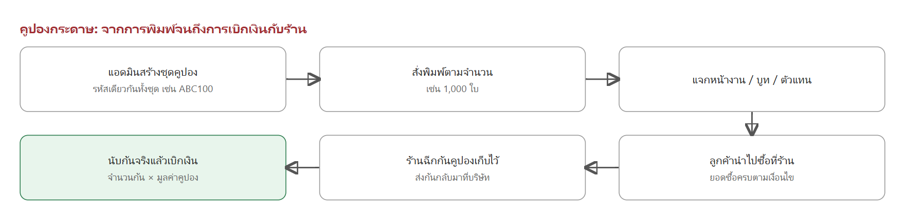
รูป 4-1 ตั้งแต่แอดมินสร้างชุดคูปองจนถึงการเบิกเงินกับร้านที่ร่วมรายการ
ระบบไม่ได้สั่งพิมพ์ แอดมินตั้งค่าชุดคูปองและดูตัวอย่างหน้า-หลังในระบบเท่านั้น ทีมการตลาดนำแบบไปพิมพ์และแจกหน้างานเอง ระบบไม่ส่งไฟล์เข้าโรงพิมพ์และไม่ออกเลขรันรายใบ (ทุกใบรหัสเดียวกันทั้งชุด) คูปองกระดาษมี 2 ด้านที่ต้องกำหนดและแสดงให้ตรงกันทุกที่ ทั้งหน้าตั้งค่า หน้าตัวอย่าง และหน้าตรวจสอบของลูกค้า
ด้าน ข้อมูลที่แสดง หน้า แบรนด์และหัวคูปอง มูลค่าส่วนลด เงื่อนไขย่อ (ยอดขั้นต่ำ / ใช้ที่ร้านที่ร่วมรายการ / ใช้ออนไลน์ไม่ได้ / กี่ใบต่อบิล) รหัสชุดและ QR สำหรับ POS วันที่ใช้ได้ และก้นคูปองที่ร้านฉีกเก็บ หลัง ร้าน/สาขาที่ใช้ได้ ช่องทางที่ใช้ได้ (หน้าร้าน/POS ใช้ได้ ออนไลน์ใช้ไม่ได้) สิทธิ์และเงื่อนไข (ยอดขั้นต่ำ จำนวนใบต่อบิล ใช้ร่วมกับโปรโมชั่น คูปองอื่น พอยท์ได้หรือไม่ สินค้ายกเว้น ใครใช้ได้ ไม่ทอนเงินสด วันที่ใช้ได้) ข้อความเพิ่มเติมไม่เกิน 160 ตัวอักษร และข้อความที่ก้นคูปองว่าร้านต้องส่งก้นเบิกภายในกี่วัน
กติกาของคูปองกระดาษ
ร้าน/สาขาที่ร่วมรายการเลือกได้จาก "รายชื่อร้านที่ลงทะเบียนไว้ล่วงหน้า" เท่านั้น ห้ามพิมพ์ชื่อร้านอิสระ เพื่อกันคนนอกอ้างชื่อมาเบิกเงิน ตั้งได้ว่าทุกร้านที่ลงทะเบียนหรือเลือกเฉพาะบางร้าน และตั้งจำนวนใบสูงสุดต่อร้านได้ (ไม่ตั้ง = ไม่จำกัด)
ช่องทางหน้าร้าน/POS ใช้ได้เสมอ ส่วนช่องทางออนไลน์แอดมินเลือกเอง ค่าเริ่มต้นคือใช้ไม่ได้ เพราะรหัสเหมือนกันทั้งชุดจึงไม่มีตัวโค้ดที่ไม่ซ้ำให้ตรวจ หากเปิดให้ใช้ออนไลน์ ระบบต้องนับประวัติต่อบัญชีเหมือนคูปองออนไลน์ และด้านหลังคูปองจะเปลี่ยนเป็นแสดงว่าใช้ออนไลน์ได้ (ต้องตัดสินใจกับลูกค้า ดูหัวข้อ 4.8)
ข้อความด้านหลังคูปองสร้างจากค่าที่ตั้งไว้ทั้งหมด เมื่อแอดมินแก้ค่า ตัวอย่างหน้า-หลังเปลี่ยนตามทันที ตัวอย่างหน้าตั้งค่าอยู่ด้านขวาของฟอร์มตลอด
ชุดที่เผยแพร่และใช้งานแล้วแก้ได้เฉพาะชื่อภายใน ข้อความหมายเหตุ และรายชื่อร้าน (เพิ่มร้านได้ ถอดได้เฉพาะร้านที่ยังไม่เคยเบิก) ส่วนรหัส มูลค่า และยอดขั้นต่ำแก้ไม่ได้ ต้อง "ทำซ้ำชุด" เป็นชุดใหม่
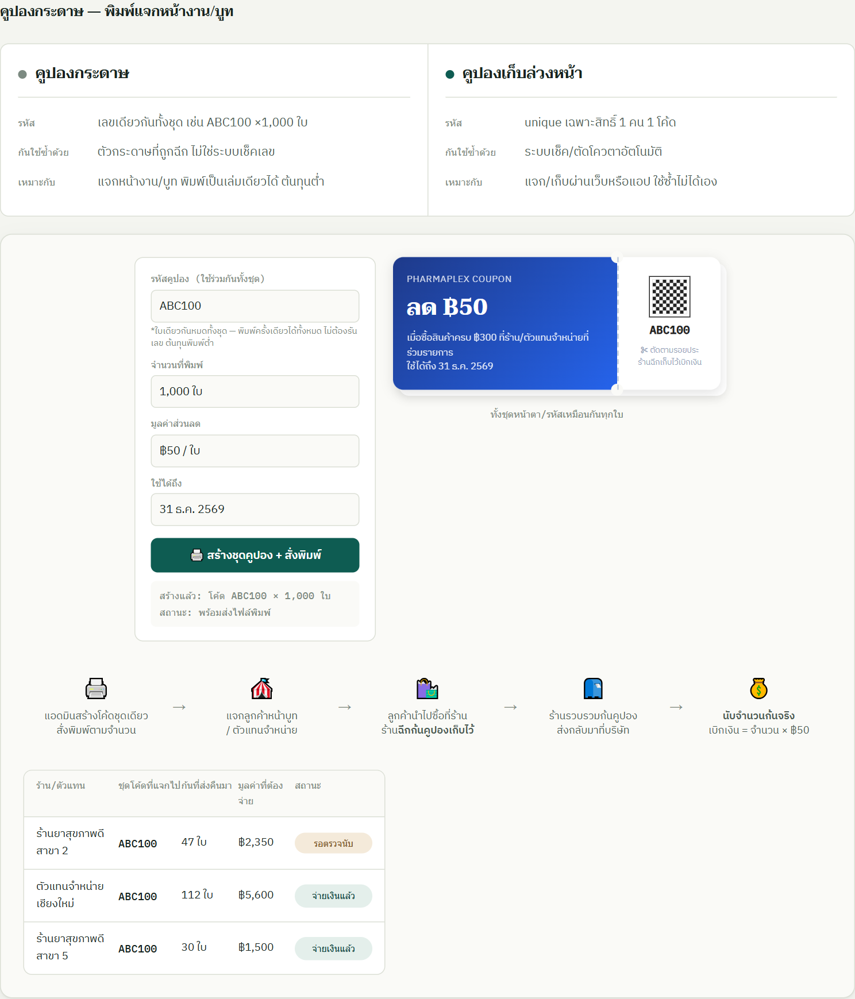
รูป 4-2 ภาพจาก prototype รุ่นแรก ใช้ประกอบแนวคิดการสร้างชุดและด้านหน้าคูปองเท่านั้น ปุ่มสั่งพิมพ์ในภาพไม่มีในระบบจริง หน้าจอล่าสุดที่มีทั้งหน้าและหลังอยู่ในหัวข้อ 4.8
ร้านที่ร่วมรายการฉีกก้นคูปองเก็บไว้เป็นหลักฐาน ส่งกลับมาที่บริษัท และระบบนับจำนวนก้นที่ได้รับจริงเพื่อคำนวณยอดเบิกเงิน เบิกเงิน = จำนวนก้นที่นับได้ × มูลค่าต่อใบ ระบบแสดงสถานะของแต่ละร้าน เช่น รอตรวจนับ หรือจ่ายเงินแล้ว คูปองกระดาษใช้ได้เฉพาะหน้าร้านหรือที่ POS เท่านั้น ไม่สามารถนำรหัสไปกรอกใช้ในเว็บได้ เพราะรหัสเหมือนกันทั้งชุดและกันการใช้ซ้ำด้วยวิธีฉีกกระดาษเท่านั้น
4.4 คูปองออนไลน์ (โค้ดแชร์ได้)
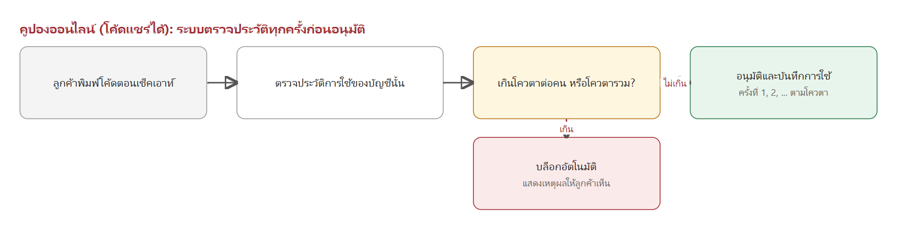
รูป 4-3 โค้ดเดียวแจกได้ทุกคน ระบบตรวจประวัติการใช้ของบัญชีนั้นทุกครั้งก่อนอนุมัติ
แนวคิดหลักคือไม่พึ่งความไม่ซ้ำของตัวโค้ด แต่ตรวจการใช้จริงของบัญชีทุกครั้ง ถ้าเกินโควตาต่อคนหรือโควตารวมที่ตั้งไว้ ระบบจะบล็อกอัตโนมัติและแสดงเหตุผลให้ลูกค้าเห็น
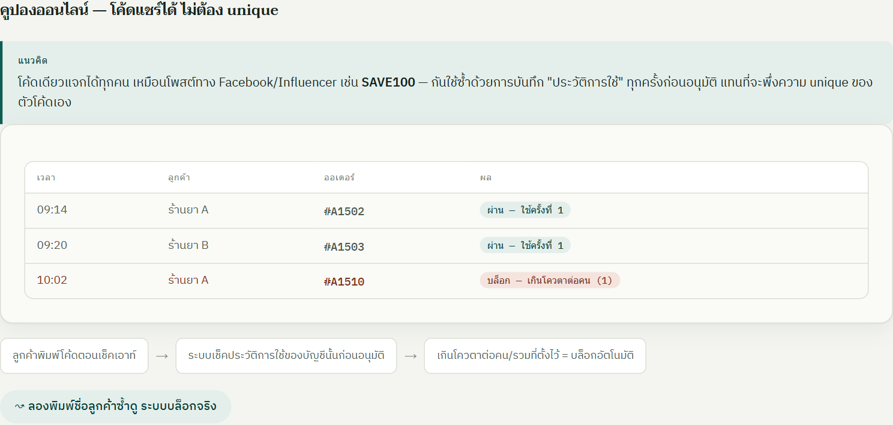
รูป 4-4 ตัวอย่างประวัติการใช้: ครั้งแรกผ่าน ครั้งที่สองของบัญชีเดียวกันถูกบล็อกเมื่อเกินโควตาต่อคน
4.5 คูปองเก็บเอง (เหมือน Shopee) และแจกอัตโนมัติทุกเดือน
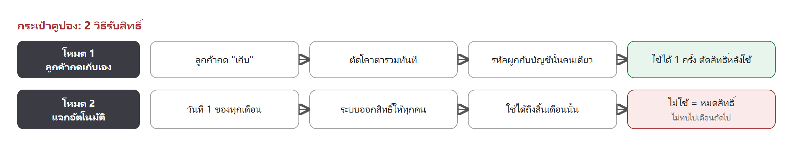
รูป 4-5 โหมดเก็บเองและโหมดแจกอัตโนมัติใช้การตั้งค่าเดียวกัน ต่างกันที่วิธีรับสิทธิ์
ตั้งค่าเงื่อนไขส่วนลด สินค้าที่ยกเว้น โควตา และวันหมดอายุครั้งเดียว แล้วเลือกโหมดแจก
โหมดเก็บเอง (เหมือน Shopee) ลูกค้าเข้าดูคูปองที่เปิดให้เก็บในกระเป๋าคูปอง กดเก็บเอง ระบบตัดโควตารวมทันที และรหัสผูกกับบัญชีนั้นคนเดียว ใช้ได้ 1 ครั้งโหมดแจกอัตโนมัติ ระบบออกสิทธิ์ให้ทุกคนทุกวันที่ 1 ของเดือน ใช้ได้ถึงสิ้นเดือนนั้น ถ้าไม่ใช้จะหมดสิทธิ์
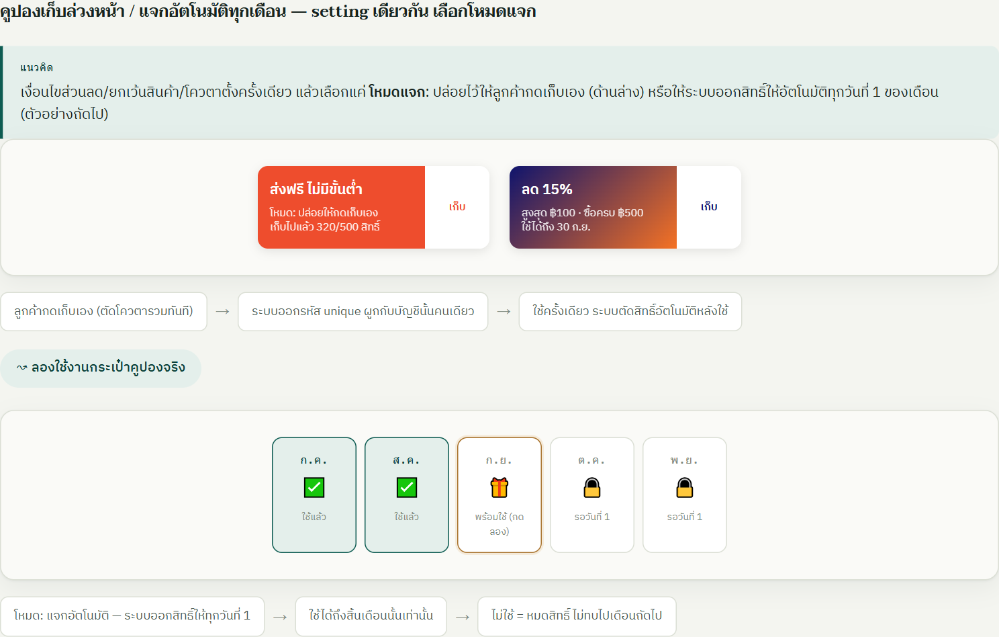
รูป 4-6 ตัวอย่างหน้ากระเป๋าคูปอง: แต่ละเดือนแสดงสถานะว่าใช้แล้ว พร้อมใช้ หรือรอวันที่ 1
4.6 คูปองสำหรับลูกค้าใหม่
ใช้ได้เฉพาะลูกค้าที่ยังไม่เคยสั่งซื้อ (ตรวจจากประวัติการสั่งซื้อของบัญชี)
เมื่อซื้อครบยอดที่กำหนด ได้ส่วนลดต้อนรับ เช่น ลด 300 บาท เมื่อซื้อครบ 5,000 บาท
สิทธิ์ใช้ได้ครั้งเดียวต่อบัญชีผู้ใช้ใหม่
4.7 การตั้งค่าของแอดมิน
แบบคูปอง ตั้งค่าอะไรได้ คูปองกระดาษ รหัสชุด จำนวนที่ออก มูลค่าส่วนลด ยอดซื้อขั้นต่ำ วันที่ใช้ได้ ร้าน/สาขาที่ร่วมรายการ (เลือกจากรายชื่อที่ลงทะเบียน + ใบสูงสุดต่อร้าน) ช่องทางที่ใช้ได้ (หน้าร้าน/POS, ออนไลน์) สิทธิ์ต่อบิล (จำนวนใบ ใช้ร่วมกับโปร/คูปอง/พอยท์ สินค้ายกเว้น ใครใช้ได้) ข้อความหลังคูปองไม่เกิน 160 ตัวอักษร และกำหนดส่งก้นเบิก (ระบบไม่มีการสั่งพิมพ์) คูปองออนไลน์ (โค้ดแชร์ได้) โค้ด มูลค่าหรือรูปแบบส่วนลด โควตาต่อคน โควตารวม ช่วงเวลาที่ใช้ได้ และสินค้าที่ยกเว้น คูปองเก็บเอง / แจกอัตโนมัติ เงื่อนไขส่วนลด สินค้าที่ยกเว้น โควตารวม วันหมดอายุ และเลือกโหมดแจก (เก็บเองหรือแจกอัตโนมัติทุกเดือน) คูปองลูกค้าใหม่ ยอดซื้อขั้นต่ำ และมูลค่าส่วนลดต้อนรับ เพดานส่วนลดสูงสุด (ทุกแบบที่เป็นส่วนลด %) ตั้งเพดานบาทสูงสุดได้ เช่น ลด 15% สูงสุดไม่เกิน 100 บาท
4.8 หน้าจอและ flow การใช้งาน
หน้าจอทั้งหมดของโมดูลนี้เรียงตามลำดับ flow การใช้งาน แต่ละภาพมีเลขกำกับบนจอ และคำอธิบายของแต่ละเลขอยู่ใต้ภาพ ตามด้วยกติกา ข้อยกเว้น และสถานะที่ต้องรองรับ คูปองกระดาษแสดงทั้งด้านหน้าและด้านหลัง ระบุร้าน/สาขาที่ใช้ได้ ช่องทางออนไลน์ และสิทธิ์ให้ชัดเจน โดยไม่มีการสั่งพิมพ์ในระบบ
ภาพรวม · ภาพรวม Flow คูปอง
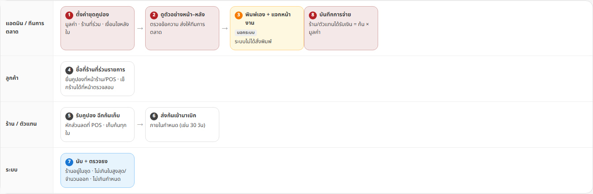
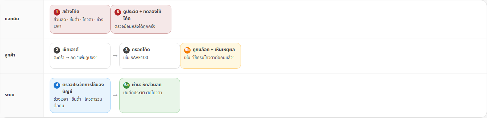
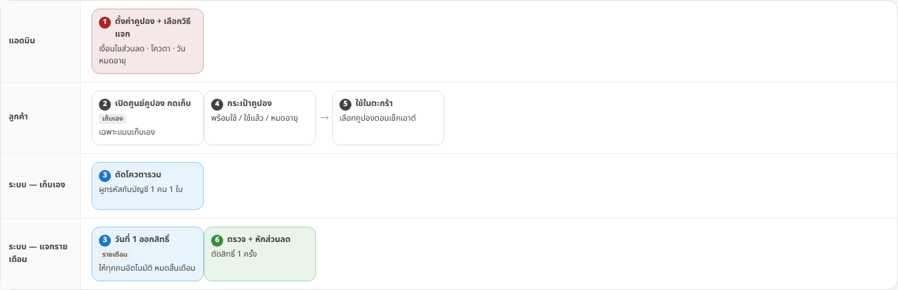
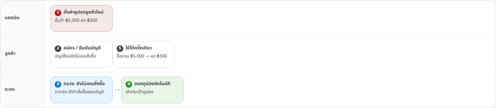
คำอธิบายแต่ละส่วนในหน้าจอ
คูปองกระดาษ: ระบบเข้ามามีส่วนตอนตั้งค่า/ดูตัวอย่าง และตอนร้านส่งก้นเข้ามาเบิก — ส่วนพิมพ์และแจกอยู่นอกระบบ (โหนดสีเหลือง)
คูปองออนไลน์: ทุกครั้งที่กรอกโค้ดระบบตรวจประวัติของบัญชี ถ้าไม่ผ่านจะบล็อกพร้อมบอกเหตุผลที่ลูกค้าอ่านเข้าใจ
เก็บเอง = ลูกค้ากดเก็บ (ตัดโควตารวมทันที) · รายเดือน = ระบบออกให้วันที่ 1 และหมดอายุสิ้นเดือน — ทั้งคู่อยู่ในกระเป๋าเดียวกัน
ลูกค้าใหม่: ออกให้ครั้งเดียวต่อบัญชีที่ยังไม่เคยสั่งซื้อ ใช้ได้ครั้งเดียว
ตารางเปรียบเทียบ: วิธีรับสิทธิ์ / กันใช้ซ้ำ / ใช้ที่ไหน / เหมาะกับ — ใช้อธิบายลูกค้าว่าทำไมคูปองกระดาษใช้ออนไลน์ไม่ได้ในค่าเริ่มต้น
กติกาใช้ร่วมกัน: ส่วนลด 1 + ส่งฟรี 1 ต่อบิลสำหรับออนไลน์ และการตั้ง "ใช้ร่วมโปร/คูปองอื่น" ต่อใบ
สถานะที่ลูกค้า/ร้านเห็นและความหมาย — ใช้เป็นชุดชิปเดียวกันทุกหน้าของโมดูล
กติกา / ข้อยกเว้น / สถานะ
ลำดับคิดเงินในตะกร้า: ราคาสินค้า → โปรโมชั่น → คูปอง → ค่าจัดส่ง → พอยท์ที่ได้
คูปองลดได้ไม่เกินยอดของรายการที่เข้าเงื่อนไข (ไม่ติดลบ ไม่ทอนเงินสด)
ทุกการใช้/ถูกบล็อก/ตรวจนับ มีประวัติให้ตรวจย้อนหลังในหน้าแอดมิน
ข้อที่ต้องตัดสินใจกับลูกค้า
คูปองกระดาษจะให้ใช้ออนไลน์ได้หรือไม่ — ค่าเริ่มต้นที่เสนอคือ "ไม่ได้" เพราะรหัสเหมือนกันทั้งชุด ถ้าเปิดต้องนับประวัติต่อบัญชีและกำหนดโควตา
นโยบายก้นที่ส่งเกินกำหนดหรือเกินใบสูงสุดต่อร้าน (ปฏิเสธ / จ่ายเฉพาะส่วนที่ไม่เกิน / อนุมัติพิเศษ)
จำนวนคูปองสูงสุดต่อบิลออนไลน์ (เสนอ 2 ใบ: ส่วนลด 1 + ส่งฟรี 1)
แอดมิน · ภาพรวมคูปอง 4 แบบ
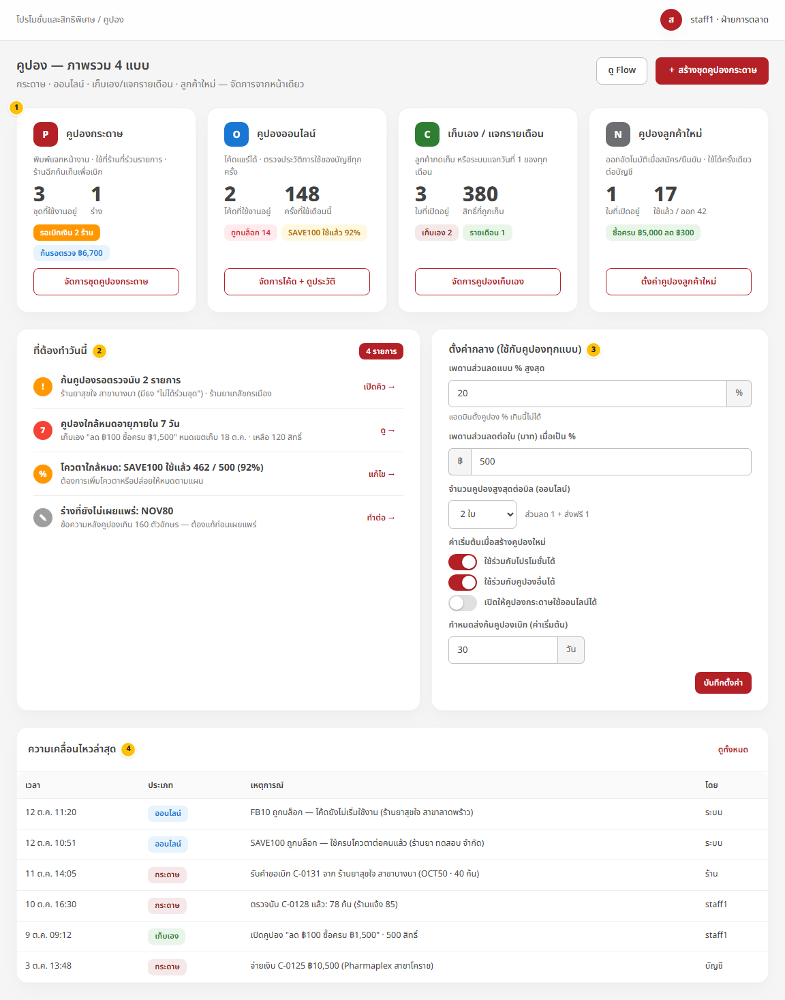
คำอธิบายแต่ละส่วนในหน้าจอ
การ์ด 4 แบบ: ตัวเลขหลัก 2 ค่า + ป้ายสถานะที่ต้องรู้ทันที — กดปุ่มเข้าหน้าจัดการของแบบนั้น (ลูกค้าใหม่ใช้หน้าเดียวกับเก็บเอง/รายเดือน แท็บที่ 3)
"ที่ต้องทำวันนี้" เรียงตามความเร่งด่วน: ก้นรอตรวจนับ / ใกล้หมดอายุ ≤ 7 วัน / โควตาเหลือ ≤ 10% / ร่างค้าง — ว่างทั้งหมดแสดง "ไม่มีงานค้าง"
ตั้งค่ากลาง: เพดานส่วนลด % / บาท ใช้กับทุกแบบที่เป็นส่วนลด · จำนวนคูปองต่อบิล · ค่าเริ่มต้นการใช้ร่วม/ช่องทางออนไลน์ของกระดาษ/กำหนดส่งก้น
ความเคลื่อนไหวล่าสุด: ย้อนดูเหตุการณ์สำคัญทั้งระบบคูปอง (ใช้ตรวจย้อนหลัง) แยกประเภทด้วยชิปสี
กติกา / ข้อยกเว้น / สถานะ
ค่าเพดานที่เปลี่ยนมีผลกับการสร้าง/แก้คูปอง "ต่อไป" — คูปองที่ตั้งไว้แล้วเกินเพดานใหม่ยังใช้ค่าเดิมจนกว่าจะถูกแก้
จำนวนคูปองต่อบิลใช้กับช่องทางออนไลน์ — คูปองกระดาษใช้ที่หน้าร้านตามจำนวน "ใบ/บิล" ที่ตั้งในแต่ละชุด
ตัวเลขในการ์ดนับตามเวลาจริง ไม่รวมคูปองที่หมดอายุหรือปิดแล้ว
ข้อที่ต้องตัดสินใจกับลูกค้า
ค่าเริ่มต้น "ส่วนลด 1 + ส่งฟรี 1 ต่อบิล" และเพดาน 20% / ฿500 เป็นข้อเสนอ — ลูกค้าต้องยืนยันตัวเลขจริง
สิทธิ์ผู้ใช้: ใครแก้ตั้งค่ากลางได้ (ข้อเสนอ: เฉพาะผู้ดูแลระบบ) และใครบันทึกจ่ายก้นคูปอง
แอดมิน · คูปองกระดาษ: รายการชุด
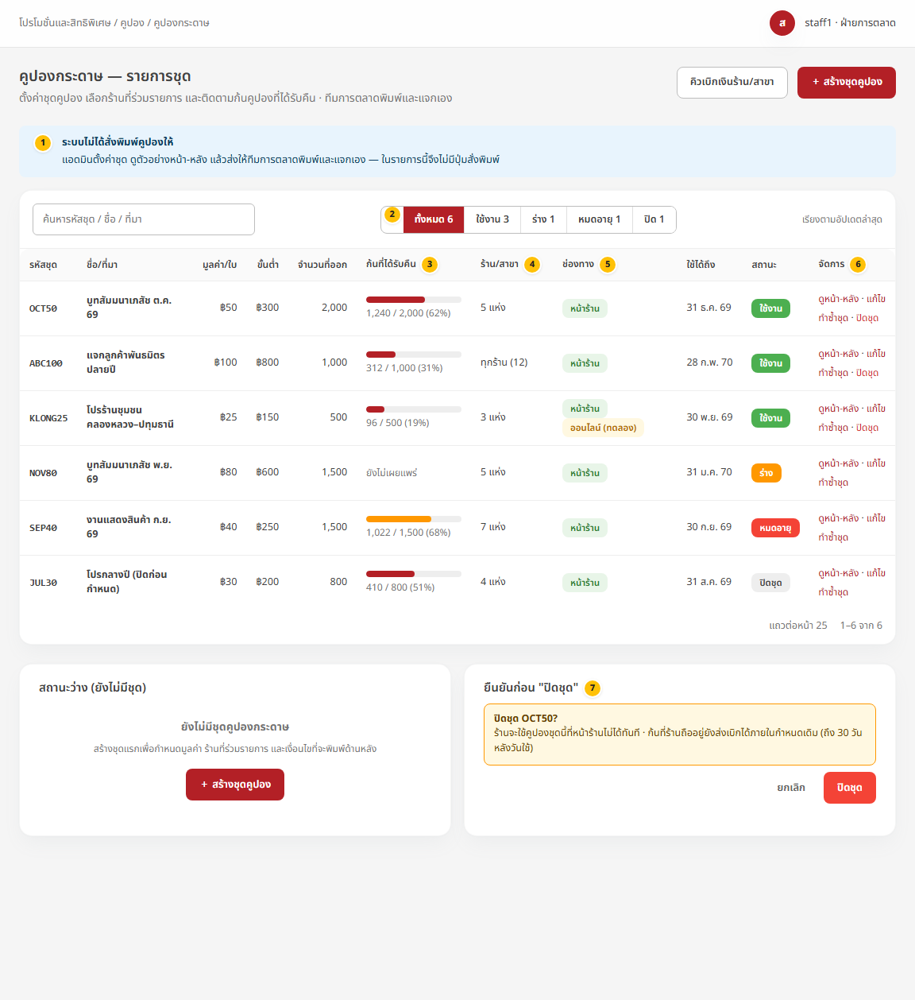
คำอธิบายแต่ละส่วนในหน้าจอ
ข้อความย้ำว่าระบบไม่ได้สั่งพิมพ์ — ตารางนี้ไม่มีคอลัมน์หรือปุ่มสั่งพิมพ์/ดาวน์โหลดไฟล์พิมพ์
ตัวกรองสถานะพร้อมจำนวน (ร่าง / ใช้งาน / หมดอายุ / ปิด) + ค้นหาตามรหัสหรือชื่อที่มา
ก้นที่ได้รับคืน = ก้นที่ตรวจนับแล้วรวมทุกร้าน ÷ จำนวนที่ออก — ใช้ดูว่าชุดถูกใช้ไปเท่าไร (แถบเหลืองเมื่อเกิน 60%)
ร้าน/สาขา: "n แห่ง" = เลือกเฉพาะ, "ทุกร้าน (12)" = ทุกร้านที่ลงทะเบียน (ตัวเลขเปลี่ยนเมื่อมีร้านใหม่ลงทะเบียน)
ช่องทางแสดงเป็นชิป: หน้าร้านเสมอ · ออนไลน์ปรากฏเมื่อแอดมินเปิดเท่านั้น (ค่าเริ่มต้นไม่มี) พร้อมป้าย "ทดลอง" จนกว่าลูกค้ายืนยันนโยบาย
การจัดการ: ดูหน้า-หลัง / แก้ไข / ทำซ้ำชุด (สร้างร่างใหม่จากค่าเดิม ใช้รหัสใหม่) / ปิดชุด — ไม่มีปุ่มสั่งพิมพ์
ปิดชุดต้องยืนยัน: ปิดแล้วร้านใช้ที่หน้าร้านไม่ได้ แต่ก้นที่ค้างอยู่ยังเบิกได้ตามกำหนด
กติกา / ข้อยกเว้น / สถานะ
สถานะ ร่าง: ยังไม่มีผลกับร้าน · ใช้งาน: ร้านที่อยู่ในรายชื่อรับคูปองได้ · หมดอายุ: ระบบเปลี่ยนเองเมื่อพ้นวันสิ้นสุด (ยังเบิกก้นได้ภายในกำหนด) · ปิด: แอดมินสั่งปิดก่อนกำหนด
รหัสชุดไม่ซ้ำกันทั้งระบบ แม้ชุดที่หมดอายุ/ปิดแล้ว
ลบชุดไม่ได้ถ้ามีก้นที่ส่งเบิกแล้ว (ปิดชุดแทน)
ชุดที่ปิดหรือหมดอายุแล้วยัง "ทำซ้ำ" ได้เพื่อออกชุดใหม่
ข้อที่ต้องตัดสินใจกับลูกค้า
จะแสดงป้าย "ออนไลน์" ของคูปองกระดาษหรือไม่ ขึ้นกับการตัดสินใจเรื่องให้คูปองกระดาษใช้ออนไลน์ (ดูหน้าสร้างชุด)
แอดมิน · สร้างชุดคูปองกระดาษ (หน้า/หลัง/สาขา/สิทธิ์)
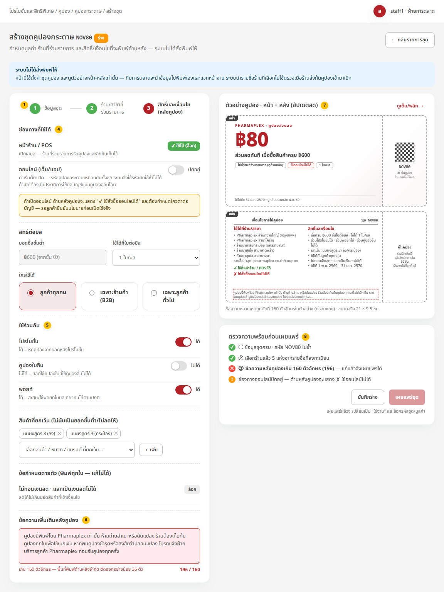
คำอธิบายแต่ละส่วนในหน้าจอ
ตัวนำทางสามขั้นอยู่ในหน้าเดียว กดสลับขั้นได้ ขั้นที่ผ่านแล้วเป็นสีเขียว · ฟอร์มซ้ายเปลี่ยนตามขั้น ส่วนตัวอย่างขวาคงอยู่และอัปเดตสดทุกครั้งที่แก้
(ขั้น ①) รหัสชุดตรวจไม่ซ้ำแบบสด เป็นรหัสเดียวทั้งชุดที่พิมพ์ลงใบและก้นคูปอง · แก้ไม่ได้หลังเผยแพร่
(ขั้น ②) ตารางร้านที่ลงทะเบียน: ค้นหา/กรองจังหวัด/ประเภท เลือกทั้งหมดที่กรองอยู่ได้ และตั้ง "ใบสูงสุดที่รับได้" ต่อร้าน (ว่าง = ไม่จำกัด) — ห้ามพิมพ์ชื่อร้านเองเพื่อกันคนนอกอ้างสิทธิ์
ช่องทาง: หน้าร้าน/POS เปิดเสมอ · ออนไลน์เป็นสวิตช์ที่แอดมินเลือกเอง ค่าเริ่มต้นปิด พร้อมเหตุผลที่แสดงให้เห็นในหน้า (รหัสเหมือนกันทั้งชุดจึงกันซ้ำด้วยรหัสไม่ได้)
เงื่อนไขการใช้ร่วม 3 ข้อ (โปรโมชั่น/คูปองอื่น/พอยท์) พิมพ์ลงด้านหลังคูปองตามค่าที่ตั้ง — ถ้าแอดมินเปลี่ยนค่า ข้อความด้านหลังเปลี่ยนตามทันที
ข้อความเพิ่มเติมหลังคูปองจำกัด 160 ตัวอักษร มีตัวนับสด เกินแล้วตัวนับ/กรอบเป็นแดงและเผยแพร่ไม่ได้
ตัวอย่างหน้าและหลังจริงสองด้านเสมอ (ไม่มีปุ่มสั่งพิมพ์/ดาวน์โหลดไฟล์พิมพ์) · ลิงก์ไปหน้าดูเต็มแบบพลิก
สรุปความพร้อมต่อขั้น: ✓ ผ่าน ✕ ต้องแก้ (บล็อกการเผยแพร่) ! คำเตือน (เผยแพร่ได้) · ปุ่ม "เผยแพร่ชุด" จะกดได้เมื่อไม่มี ✕
กติกา / ข้อยกเว้น / สถานะ
สถานะชุด: ร่าง → ใช้งาน → หมดอายุ (อัตโนมัติเมื่อพ้นวันสิ้นสุด) หรือ ปิดชุด (แอดมินสั่ง) · ชุดที่ใช้งานแล้วแก้ได้เฉพาะ ชื่อภายใน/ข้อความหมายเหตุ/รายชื่อร้าน (เพิ่มร้านได้ ถอดร้านที่ยังไม่เคยเบิกได้) — รหัส มูลค่า ขั้นต่ำ แก้ไม่ได้
ผลรวมใบสูงสุดของร้านที่ระบุตัวเลขต้องไม่เกินจำนวนที่ออก · ร้านที่เว้นว่างไม่จำกัดแต่รวมทุกร้านไม่เกินจำนวนที่ออก
ข้อความด้านหลังสร้างจากค่าที่ตั้งทั้งหมดอัตโนมัติ — แอดมินเพิ่มได้เฉพาะ "ข้อความเพิ่มเติม" บรรทัดเดียวท้ายใบ
ปุ่ม "บันทึกร่าง" บันทึกได้แม้ยังมี ✕ (แสดงเป็นร่างในรายการ) แต่เผยแพร่ไม่ได้
ข้อที่ต้องตัดสินใจกับลูกค้า
เปิดให้คูปองกระดาษใช้ออนไลน์ได้หรือไม่ — ถ้าเปิด ต้องนับประวัติใช้ต่อบัญชีและจำกัดต่อบัญชี (ค่าเริ่มต้นที่เสนอ: ปิด)
กำหนดส่งก้นเบิก 30 วัน และเพดานใบสูงสุดต่อร้าน — ถ้าร้านส่งเกินกำหนด/เกินเพดานจะ "ปฏิเสธ" หรือ "ให้แอดมินอนุมัติพิเศษ"
แอดมิน · ตัวอย่างคูปองกระดาษ หน้า-หลัง
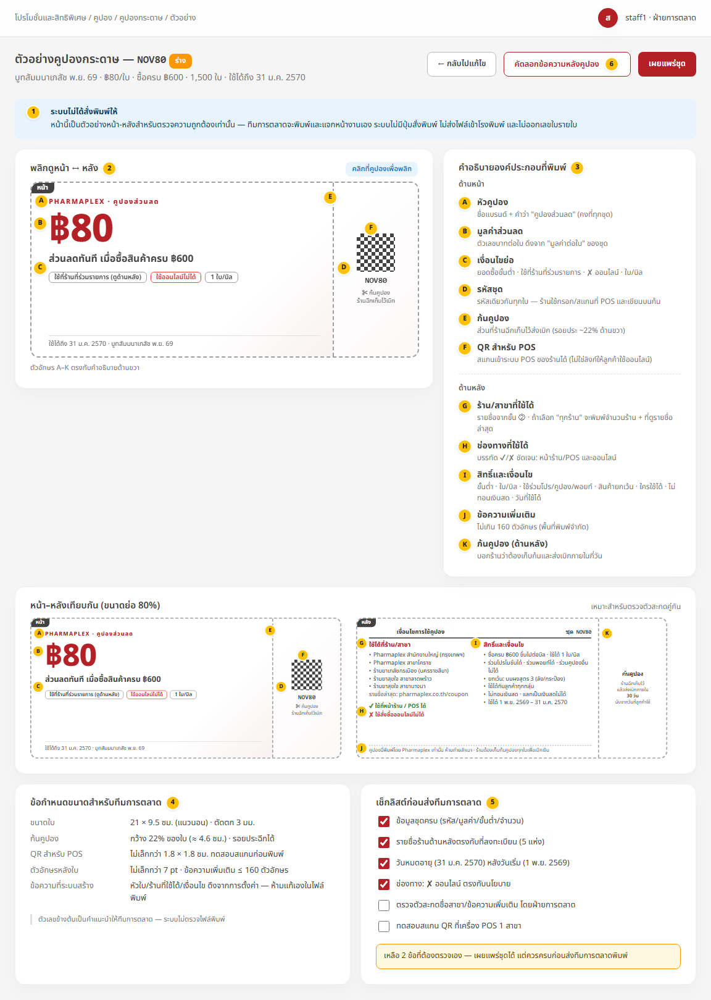
คำอธิบายแต่ละส่วนในหน้าจอ
ข้อความย้ำชัดว่าระบบไม่ได้สั่งพิมพ์ — ไม่มีปุ่มสั่งพิมพ์/ส่งโรงพิมพ์/ดาวน์โหลดไฟล์พิมพ์ในหน้านี้ ทีมการตลาดพิมพ์เองจากข้อมูลที่เห็น
คูปองแบบพลิกได้ (คลิกพลิกหน้า ↔ หลัง) ขนาดเท่าของจริงที่ 100% ใช้ตรวจข้อความทีละด้าน
ตัวอักษร A–K บนใบคือจุดอ้างอิงถึงรายการอธิบาย — ใช้ตอนคุยกับทีมการตลาดว่า "จุด G ต้องตรงกับรายชื่อร้าน"
ข้อกำหนดขนาดพิมพ์เป็นคำแนะนำ (21 × 9.5 ซม. ก้นคูปอง 22%) ระบบไม่ตรวจไฟล์ของทีมการตลาด
เช็กลิสต์ 4 ข้อแรกระบบติ๊กให้จากข้อมูลที่ตรวจได้ · 2 ข้อท้ายเป็นของคนตรวจเอง (ไม่บล็อกการเผยแพร่)
ปุ่มคัดลอกข้อความหลังคูปอง (ร้าน/ช่องทาง/เงื่อนไข/หมายเหตุ) เป็นข้อความธรรมดา ให้ทีมการตลาดนำไปวางในไฟล์ออกแบบ
กติกา / ข้อยกเว้น / สถานะ
ตัวอย่างสร้างจากค่าที่ตั้งในหน้า "สร้างชุด" เสมอ — แก้ค่าแล้วตัวอย่างเปลี่ยนตาม ไม่มีการแก้ข้อความบนตัวอย่างโดยตรง
ถ้าชุดมี "ใช้ออนไลน์" เปิด บรรทัด H จะเป็น ✔ และต้องมีข้อความเงื่อนไขโควตาต่อบัญชีเพิ่มในหลังใบ
ถ้ารายชื่อร้านยาวเกินพื้นที่ (เกิน ~6 ร้าน) หลังใบจะแสดง "ร้านที่ร่วมรายการ 12 แห่ง ดูรายชื่อที่ pharmaplex.co.th/coupon" แทนการพิมพ์ทุกชื่อ
ชุดที่เผยแพร่แล้วดูตัวอย่างได้เสมอ แต่แก้รหัส/มูลค่าไม่ได้ — ต้อง "ทำซ้ำชุด" เป็นรหัสใหม่
ข้อที่ต้องตัดสินใจกับลูกค้า
จำนวนร้านสูงสุดที่ยอมให้พิมพ์ชื่อลงหลังใบ (ข้อเสนอ: ไม่เกิน 6 ร้าน เกินนั้นให้ชี้ไปดูรายชื่อที่เว็บ) — ลูกค้าต้องยืนยันว่ายอมรับให้ลูกค้าปลายทางต้องเปิดเว็บเช็กหรือไม่
ข้อความ URL บนหลังใบ (ตัวอย่าง pharmaplex.co.th/coupon) — ต้องยืนยันโดเมน/หน้าจริงที่จะใช้
แอดมิน · คิวเบิกเงินร้าน/สาขา (นับก้นคูปอง)
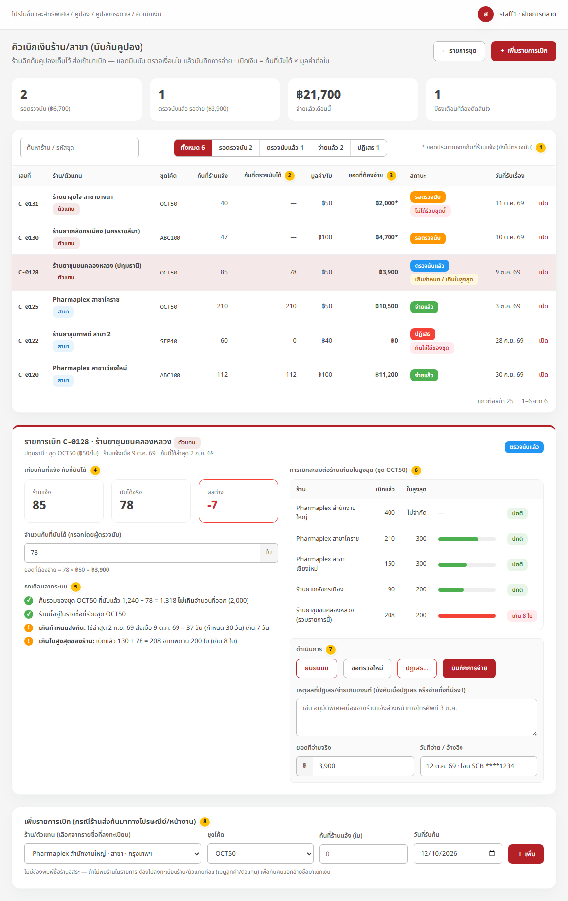
คำอธิบายแต่ละส่วนในหน้าจอ
ยอดที่มี * คือประมาณการจากก้นที่ร้านแจ้ง ยังไม่ตรวจนับ — ยอดจริงใช้ตัวเลขที่ตรวจนับได้เท่านั้น
ช่อง "ก้นที่ตรวจนับได้" ว่างจนกว่าจะนับ — ผู้ตรวจกรอกจากก้นที่ได้รับจริง ผลต่างกับที่ร้านแจ้งแสดงเป็นสีแดง
ยอดที่ต้องจ่าย = ก้นที่ตรวจนับได้ × มูลค่า/ใบของชุด (ฟิลด์คำนวณ แก้ตรง ๆ ไม่ได้ ยกเว้นกรอกยอดจ่ายจริงพร้อมเหตุผล)
ส่วนเปรียบเทียบ: ร้านแจ้ง vs นับได้ vs ผลต่าง พร้อมช่องกรอกจำนวนที่นับได้ที่คำนวณยอดจ่ายสด
ธงเตือนอัตโนมัติ 4 ข้อ: ก้นรวมเกินจำนวนที่ออก / ร้านไม่ได้ร่วมชุด / เกินกำหนดส่งก้น / เกินใบสูงสุดของร้าน — ✓ ผ่าน ! ต้องตัดสินใจ
ตารางเปรียบเทียบการเบิกสะสมของแต่ละร้านกับใบสูงสุดที่ตั้งไว้ในชุด (แถบแดงเมื่อเกิน)
การดำเนินการ: ยืนยันนับ → บันทึกการจ่าย · ขอตรวจใหม่ (ส่งกลับคิวรอตรวจนับ) · ปฏิเสธ (ต้องมีเหตุผล) — ทุกการกดถูกบันทึกในประวัติ
เพิ่มรายการเบิกต้องเลือกร้านจากรายชื่อที่ลงทะเบียนเท่านั้น (select + ค้นหา) ไม่มีช่องพิมพ์อิสระ
กติกา / ข้อยกเว้น / สถานะ
สถานะ: รอตรวจนับ → ตรวจนับแล้ว → จ่ายแล้ว (หรือ ปฏิเสธ) · จ่ายแล้วแก้ตัวเลขไม่ได้ ต้องบันทึกรายการปรับยอดใหม่
ร้านที่ไม่ได้อยู่ในรายชื่อของชุด (เช่น C-0131) ระบบติดธงแดงและปุ่ม "ยืนยันนับ" ถูกล็อกจนกว่าจะเพิ่มร้านเข้าชุด หรือปฏิเสธ
ก้นรวมที่นับแล้วของชุดห้ามเกินจำนวนที่ออก — ถ้าเกินระบบบล็อกการยืนยันและแจ้งให้ตรวจก้นปลอม/ซ้ำ
ก้นเกินกำหนดส่งหรือเกินใบสูงสุด: จ่ายได้เฉพาะเมื่อกรอกเหตุผลอนุมัติพิเศษ (บันทึกชื่อผู้อนุมัติ)
ข้อที่ต้องตัดสินใจกับลูกค้า
ก้นที่ส่งเกินกำหนด 30 วัน และเกินใบสูงสุดต่อร้าน: ให้ปฏิเสธอัตโนมัติ / จ่ายเฉพาะส่วนที่ไม่เกิน / ให้แอดมินอนุมัติพิเศษ (ข้อเสนอ: ธงเตือน + แอดมินอนุมัติพิเศษพร้อมเหตุผล)
ใครมีสิทธิ์ "บันทึกการจ่าย" — เฉพาะฝ่ายบัญชี หรือแอดมินการตลาดด้วย (ข้อเสนอ: ตรวจนับ = การตลาด, บันทึกจ่าย = บัญชี)
แอดมิน · คูปองออนไลน์ + ประวัติการใช้
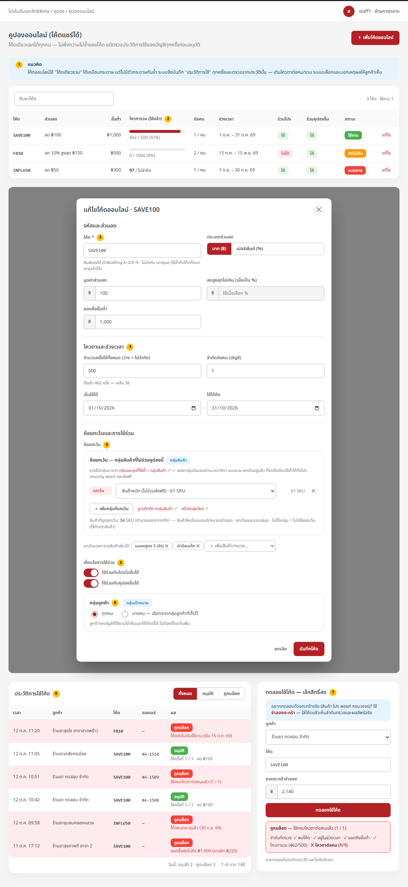
คำอธิบายแต่ละส่วนในหน้าจอ
ย้ำแนวคิด: โค้ดไม่ต้อง unique — ความถูกต้องมาจากการตรวจประวัติการใช้ของบัญชีทุกครั้ง ไม่ใช่จากตัวโค้ด
โควตารวมแสดงเป็นแถบ (แดงเมื่อใช้เกิน 90%) พร้อมตัวเลขใช้แล้ว/ทั้งหมด — "ไม่จำกัด" แสดงเฉพาะจำนวนที่ใช้
โค้ดพิมพ์เองได้ ระบบแปลงเป็นตัวพิมพ์ใหญ่และตัดช่องว่าง — ชนกับโค้ดที่ยังใช้งาน/ยังไม่เริ่มอยู่เตือน แต่ไม่บังคับ unique กับโค้ดที่หมดอายุ
ต่อคน = ต่อบัญชีลูกค้า (นับจากประวัติ "อนุมัติ" เท่านั้น — ครั้งที่ถูกบล็อกหรือยกเลิกออเดอร์ก่อนชำระไม่นับ)
เงื่อนไขการใช้ร่วม: ร่วมโปรโมชั่นไม่ได้ = ไม่คิดคูปองกับรายการที่จับคู่โปรแล้ว · ร่วมคูปองอื่นไม่ได้ = ต้องเป็นใบเดียวในบิล
ประวัติการใช้: อนุมัติ = เขียว / ถูกบล็อก = แดงพร้อมเหตุผลที่ตรงกับข้อความที่ลูกค้าเห็นตอนเช็คเอาต์
ทดลองใช้โค้ด จำลองลูกค้า+ยอดตะกร้า แล้วแสดงลำดับการตรวจพร้อมจุดที่ติด — ไม่บันทึกประวัติจริง
กติกา / ข้อยกเว้น / สถานะ
ลำดับตรวจเมื่อลูกค้ากรอกโค้ด: พบโค้ด → อยู่ในช่วงเวลา → กลุ่มลูกค้าตรง → ยอดถึงขั้นต่ำ (นับเฉพาะสินค้าที่ไม่ถูกยกเว้น) → โควตารวม → โควตาต่อคน → เงื่อนไขใช้ร่วม
โควตารวมตัดเมื่อ "ชำระสำเร็จ" ไม่ใช่ตอนใส่โค้ด · ถ้ายกเลิกก่อนชำระ โควตาไม่ถูกตัด
หมดอายุ/ยังไม่เริ่ม: โค้ดยังเห็นในรายการ แต่ลูกค้ากรอกแล้วขึ้นข้อความเหตุผลตรง ๆ
แก้ไขโค้ดที่มีประวัติแล้ว: แก้โควตา/วันที่/ขั้นต่ำได้ มีผลกับการใช้ครั้งต่อไปเท่านั้น (ไม่ย้อนหลัง)
ยกเลิก/คืนสินค้าหลังใช้โค้ดแล้ว ไม่คืนสิทธิ์ ถือว่าใช้แล้ว
ข้อที่ต้องตัดสินใจกับลูกค้า
ถ้าลูกค้า "ยังไม่ได้ล็อกอิน" แล้วกรอกโค้ด จะให้ตรวจสิทธิ์ได้หรือไม่ (ข้อเสนอ: ต้องล็อกอินก่อนจึงตรวจสิทธิ์ เพื่อนับต่อบัญชีได้)
มีโค้ดที่ผูกกับกลุ่มลูกค้าเฉพาะราย (audience) ต้องใช้จริงหรือไม่ — ถ้าไม่ใช้ ตัดช่องนี้ออกเพื่อลดความซับซ้อน
แอดมิน · คูปองเก็บเอง / แจกรายเดือน / ลูกค้าใหม่
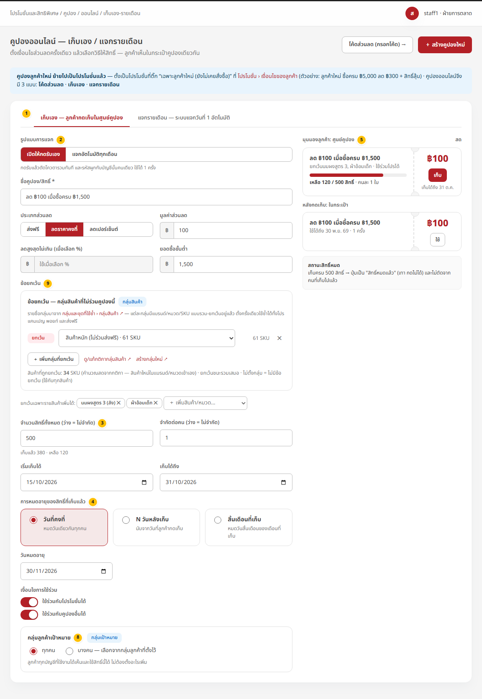
คำอธิบายแต่ละส่วนในหน้าจอ
สามแท็บ = สามวิธีให้สิทธิ์ ใช้ชุดฟิลด์ส่วนลดเดียวกัน ต่างกันที่ "วิธีรับ" · ใบหนึ่งอยู่ได้แท็บเดียว
รูปแบบการแจกเลือกต่อใบ (กดรับเอง / แจกอัตโนมัติรายเดือน) — สร้างได้หลายใบพร้อมกัน เช่น ใบเก็บเอง + ใบรายเดือน
จำนวนสิทธิ์ทั้งหมด = โควตารวม ตัดทันทีเมื่อลูกค้ากดเก็บ (แสดง "เหลือ n / ทั้งหมด" ให้ลูกค้าเห็น) · ว่าง = ไม่จำกัด
การหมดอายุของสิทธิ์ที่เก็บแล้ว: วันที่คงที่ / N วันหลังเก็บ / สิ้นเดือนที่เก็บ — ช่องกรอกเปลี่ยนตามตัวเลือก
ตัวอย่างฝั่งลูกค้าอัปเดตสดตามค่าที่ตั้ง ทั้งในศูนย์คูปอง (ก่อนเก็บ) และกระเป๋า (หลังเก็บ)
แถบรายเดือน: ใช้แล้ว / พร้อมใช้ / รอวันที่ 1 — หมดอายุล็อกที่สิ้นเดือนเดียวกันเสมอ
ลูกค้าใหม่: ออกอัตโนมัติเมื่อสมัคร/ยืนยันบัญชี ตรวจ "ยังไม่เคยสั่งซื้อ" และใช้ได้ครั้งเดียวต่อบัญชี (ล็อก)
กติกา / ข้อยกเว้น / สถานะ
ลูกค้าเก็บซ้ำเกิน "ต่อคน" ไม่ได้ — ปุ่มเปลี่ยนเป็น "เก็บแล้ว"; สิทธิ์ที่เก็บแล้วไม่หายถ้าแอดมินปิดการแจกภายหลัง
แก้เงื่อนไขส่วนลดของใบที่มีคนเก็บแล้ว: ใบที่เก็บไปแล้วใช้ค่าเดิมตอนเก็บ (snapshot) ยกเว้น "เงื่อนไขใช้ร่วม" ที่อ่านจากต้นทางสด
แจกรายเดือน: ไม่ทบข้ามเดือน ไม่ใช้ = หมดสิทธิ์ · ออกให้เฉพาะบัญชีที่ใช้งานอยู่
ลูกค้าใหม่ที่ยังไม่ยืนยันบัญชี จะยังไม่ได้รับคูปองจนกว่ายืนยัน
ข้อที่ต้องตัดสินใจกับลูกค้า
อายุคูปองลูกค้าใหม่ (ข้อเสนอ 30 วันนับจากวันที่ออก) และจะออกเมื่อ "สมัคร" หรือ "ยืนยันบัญชี"
ลูกค้าที่สมัครกลางเดือนจะได้สิทธิ์รายเดือนของเดือนนั้นทันทีหรือไม่ (ข้อเสนอ: ได้ทันที หมดสิ้นเดือน)
เพดานจำนวนสิทธิ์/วันที่ของคูปองเก็บเอง "ไม่จำกัด" อนุญาตหรือไม่ — ข้อเสนอให้บังคับกรอกโควตารวมเพื่อกันงบบาน
ลูกค้า · ศูนย์คูปอง + กระเป๋าคูปอง
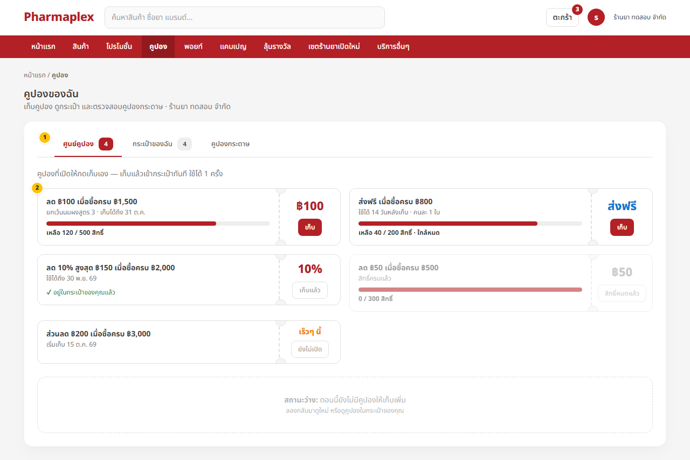
คำอธิบายแต่ละส่วนในหน้าจอ
สามแท็บ: ศูนย์คูปอง (เก็บเอง) / กระเป๋าของฉัน / คูปองกระดาษ — ตัวเลขข้างชื่อแท็บ = จำนวนที่เก็บได้ / พร้อมใช้
การ์ดในศูนย์คูปอง: แถบความคืบหน้า "เหลือ n / ทั้งหมด" · ปุ่มเปลี่ยนตามสถานะ: เก็บ / เก็บแล้ว / สิทธิ์หมดแล้ว / ยังไม่เปิด (ใช้ปุ่มเทาเมื่อกดไม่ได้)
กระเป๋าแยกชิปสถานะ พร้อมใช้ / ใช้แล้ว / หมดอายุ พร้อมจำนวน — เรียงใบที่ใกล้หมดอายุก่อน
สิทธิ์รายเดือนที่ระบบออกให้: ใบเดือนปัจจุบันกดใช้ได้ ใบเดือนหน้าแสดง "รอวันที่ 1 พ.ย." กดไม่ได้ + แถบรายเดือน ก.ย./ต.ค./พ.ย.
คูปองกระดาษไม่อยู่ในกระเป๋า — แท็บนี้อธิบายวิธีใช้ที่ร้านและลิงก์ไปหน้าตรวจสอบรหัส/ร้านที่ใช้ได้
กติกา / ข้อยกเว้น / สถานะ
ปุ่ม "ใช้" พาไปตะกร้า/เช็คเอาต์และเลือกคูปองนั้นไว้ล่วงหน้า — ถ้าตะกร้าว่างจะพาไปเลือกสินค้าก่อน
ใบที่ใช้แล้ว/หมดอายุ แสดงเป็นสีจาง กดไม่ได้ และแสดงเลขออเดอร์ที่ใช้ (กรณีใช้แล้ว)
เก็บซ้ำเกิน "ต่อคน" ไม่ได้ — ปุ่มเป็น "เก็บแล้ว"; โควตารวมหมด = "สิทธิ์หมดแล้ว" (ใครเก็บไปก่อนหน้ายังใช้ได้)
สถานะว่าง: ศูนย์คูปองที่ไม่มีใบให้เก็บ และกระเป๋าที่ว่าง แสดงข้อความนำทางไปอีกแท็บ
ไม่มีการแจ้งเตือนนอกเว็บ — ลูกค้าต้องเข้ามาดูเองว่าคูปองใกล้หมดอายุ
ข้อที่ต้องตัดสินใจกับลูกค้า
จะแสดงคูปองรายเดือนของเดือนหน้าที่ "ยังไม่ออก" ในกระเป๋าหรือไม่ (ข้อเสนอ: แสดงเพื่อให้ลูกค้ารู้ล่วงหน้า)
ลูกค้าต้องการให้ผูกคูปองกระดาษเข้าบัญชี (กรอกรหัสเก็บไว้) หรือไม่ — ค่าเริ่มต้นไม่ผูก เพราะรหัสเหมือนกันทั้งชุด
ลูกค้า · ใช้คูปองในตะกร้า/เช็คเอาต์
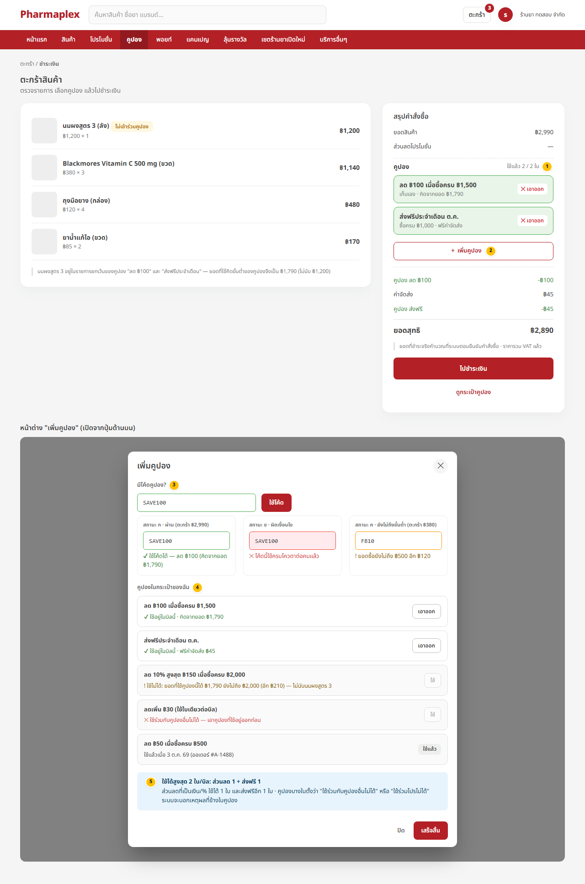
คำอธิบายแต่ละส่วนในหน้าจอ
สรุปคูปองในตะกร้า: จำนวนที่ใช้/สูงสุดต่อบิล · แต่ละใบแสดงสีเขียวพร้อมปุ่มเอาออก — ยอดสุทธิคำนวณใหม่ทันที
ปุ่ม "เพิ่มคูปอง" เปิดหน้าต่างเดียวสำหรับกรอกโค้ดและเลือกจากกระเป๋า (หน้าต่างแสดงเปิดอยู่ด้านล่างเพื่อให้ดูทั้งหมดในภาพเดียว)
ช่องกรอกโค้ด 3 สถานะ: ผ่าน (เขียว) / ผิดเงื่อนไข (แดง บอกเหตุผล เช่น ใช้ครบโควตาต่อคน) / ยังไม่เข้าเงื่อนไข (เหลือง บอกว่าขาดอีกเท่าไร)
กระเป๋า: ทุกใบมี "เหตุผลที่ใช้ไม่ได้" ใต้ชื่อ (ขั้นต่ำ ยกเว้นสินค้า ใช้ร่วมไม่ได้ ใช้แล้ว) — ปุ่ม "ใช้" ถูกปิดเมื่อใช้ไม่ได้
คำอธิบายกติกาซ้อนใบ: ส่วนลด 1 + ส่งฟรี 1 ต่อบิล (ตามค่ากลางในหน้าแอดมิน) แสดงในหน้าต่างเสมอ
กติกา / ข้อยกเว้น / สถานะ
ยอดขั้นต่ำเทียบกับ "ยอดที่คูปองใบนั้นครอบคลุม" หลังหักโปรโมชั่น (ไม่นับสินค้ายกเว้น และไม่นับรายการที่จับคู่โปรถ้าคูปองตั้งใช้ร่วมโปรไม่ได้) — ลำดับการใส่คูปองไม่มีผลกับขั้นต่ำ
ส่วนลดใบถัดไปคิดจากยอดคงเหลือหลังใบก่อนหน้า ไม่มีทางหักเกินมูลค่ารายการ/ติดลบ
คูปองส่งฟรีฟรีเฉพาะรายการที่เข้าเงื่อนไข — ถ้ามีรายการที่ยกเว้น ยังคิดค่าส่งส่วนนั้น
โควตาของโค้ด/คูปองตัดเมื่อชำระสำเร็จ — ถ้ายกเลิกก่อนชำระ สิทธิ์ยังอยู่
ถ้าตะกร้าเปลี่ยนจนคูปองที่ใช้อยู่ไม่เข้าเงื่อนไข ระบบถอดคูปองให้และแจ้งเหตุผลที่หน้าสรุป
ข้อที่ต้องตัดสินใจกับลูกค้า
จำนวนคูปองสูงสุดต่อบิล (เสนอ 2: ส่วนลด 1 + ส่งฟรี 1) และกรณีมีคูปอง % + คูปองบาท ให้ใช้ได้ทั้งคู่หรือไม่
ลูกค้ายังไม่ล็อกอินเปิดหน้าต่างนี้ได้หรือไม่ (เสนอ: ต้องล็อกอินก่อนเลือกคูปอง)
ลูกค้า · ตรวจสอบคูปองกระดาษ (สาขาที่ใช้ได้)
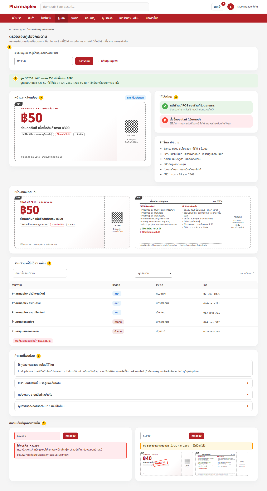
คำอธิบายแต่ละส่วนในหน้าจอ
ช่องกรอกรหัสชุดบนคูปอง (ไม่ต้องล็อกอิน) — ไม่แยกพิมพ์เล็ก/ใหญ่ ตัดช่องว่าง · หน้านี้ "ตรวจสอบ/ให้ข้อมูล" เท่านั้น ไม่ใช้ส่วนลดให้
แบนเนอร์สถานะชุด: ใช้ได้ / หมดอายุ / ไม่พบ พร้อมสรุปมูลค่า ขั้นต่ำ วันที่ และจำนวนร้าน
แสดงคูปองทั้งหน้าและหลัง: พลิกดูได้ในใบเดียว และเทียบแบบหน้า–หลังข้างกัน เหมือนที่พิมพ์จริง
บรรทัดช่องทาง ✔/✘ ชัดเจน: หน้าร้าน/POS และออนไลน์ พร้อมเหตุผลเมื่อใช้ไม่ได้
รายชื่อร้าน/สาขาที่ใช้ได้ ค้นหาและกรองจังหวัดได้ — ร้านที่ไม่อยู่ในรายชื่อ = ใช้ไม่ได้
คำถามที่พบบ่อย 4 ข้อ (ออนไลน์ได้ไหม / ใช้ร่วมได้ไหม / หมดอายุ / ใบชำรุด) แบบพับเก็บได้
สถานะไม่พบรหัส และหมดอายุ (ตราประทับ "หมดอายุ" บนทั้งสองด้าน)
กติกา / ข้อยกเว้น / สถานะ
ข้อมูลทุกอย่างมาจากชุดที่แอดมินตั้งค่า — ไม่แสดงจำนวนก้น/ยอดเบิก/ข้อมูลภายในของร้านใด ๆ
ชุดสถานะร่างหรือปิด ตอบเหมือน "ไม่พบรหัส" (ไม่เปิดเผยชุดที่ยังไม่เผยแพร่)
ถ้าชุดเลือก "ทุกร้านที่ลงทะเบียน" รายชื่อร้านจะแสดงทุกร้านที่ลงทะเบียน ณ วันที่ตรวจ
จำกัดอัตราการเรียกต่อ IP เพื่อกันการไล่เดารหัส
ข้อที่ต้องตัดสินใจกับลูกค้า
หน้านี้เปิดสาธารณะ (ไม่ต้องล็อกอิน) หรือเฉพาะสมาชิก — เสนอให้เปิดสาธารณะเพื่อให้ผู้ได้รับคูปองหน้างานเช็กได้ทันที
จะแสดงเบอร์โทรร้านหรือไม่ (ตัวอย่างนี้แสดง) ต้องให้ร้าน/ตัวแทนยินยอม
สรุปข้อที่ต้องตัดสินใจกับลูกค้า
เปิดให้คูปองกระดาษใช้ออนไลน์ได้หรือไม่ (เสนอ: ปิด) ถ้าเปิดต้องนับประวัติต่อบัญชี
ก้นคูปองที่ส่งเกินกำหนด (เสนอ 30 วัน) หรือเกินใบสูงสุดต่อร้าน: ปฏิเสธ จ่ายเฉพาะส่วนที่ไม่เกิน หรืออนุมัติพิเศษ
จำนวนร้านสูงสุดที่พิมพ์ชื่อลงด้านหลังใบ (เสนอไม่เกิน 6 ร้าน เกินนั้นให้ดูรายชื่อที่เว็บ) และ URL ที่พิมพ์บนใบ
จำนวนคูปองสูงสุดต่อบิลออนไลน์ (เสนอ ส่วนลด 1 ใบ + ส่งฟรี 1 ใบ) และเพดานส่วนลดต่อบิล
อายุคูปองลูกค้าใหม่ (เสนอ 30 วัน) และออกตอนสมัครหรือตอนยืนยันอีเมล
หน้าตรวจสอบคูปองกระดาษ (10) เปิดสาธารณะโดยไม่ต้องล็อกอินหรือไม่ และแสดงเบอร์โทรร้านหรือไม่
5. พอยท์และแคมเปญ
5.1 พอยท์สะสมอัตโนมัติเมื่อซื้อสินค้า
ลูกค้าได้พอยท์ทันทีเมื่อการชำระเงินของออเดอร์สำเร็จ ไม่ต้องกดแปลงหรือรอคิวใด ๆ พอยท์เข้าบัญชีพร้อมกับยอดสั่งซื้อ และนำไปใช้ได้ทันที
อัตราพอยท์กำหนดที่ระดับสินค้าแต่ละรายการ ไม่ได้คิดจากยอดรวมใบเสร็จ เช่น สินค้าบางรายการได้ 10 พอยท์ต่อหน่วย ส่วนสินค้าควบคุมราคา ยาน้ำ นมผง หรือสินค้าราคาพิเศษ ตั้งค่าเป็น 0 พอยท์ได้
พอยท์ที่ได้จากออเดอร์ = ผลรวมของ (จำนวนที่ซื้อ × พอยท์ต่อหน่วยของสินค้านั้น × ตัวคูณของแคมเปญ)
ตัวอย่าง: ซื้อสินค้าที่ได้ 10 พอยท์ต่อชิ้น จำนวน 2 ชิ้น และสินค้าอีกรายการที่ได้ 0 พอยท์ รวมได้ 20 พอยท์ทันทีที่ชำระเงินสำเร็จ
ถ้ามีหลายแคมเปญที่มีตัวคูณพอยท์ active พร้อมกัน ตัวคูณจะบวกกัน เช่น แคมเปญหนึ่งตัวคูณ ×1.5 และอีกแคมเปญ ×2 ลูกค้าจะได้รับตัวคูณรวม ×3.5
พอยท์ที่ได้มีวันหมดอายุ โดยแอดมินกำหนดวันหมดอายุของพอยท์แต่ละรอบหรือแต่ละแคมเปญที่แจกพอยท์ได้เอง ไม่ได้ fix เป็นนโยบายเดียวทั้งระบบ
5.2 พอยท์ในบัญชีและการนำไปใช้
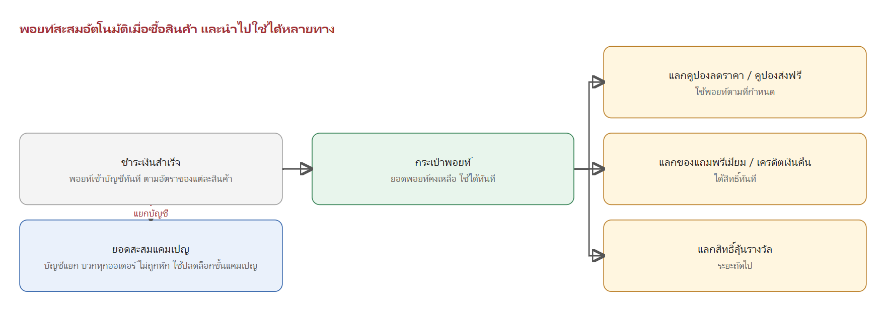
รูป 5-1 พอยท์เข้าบัญชีทันทีเมื่อซื้อสินค้า ลูกค้านำพอยท์ไปใช้ได้หลายรูปแบบ ส่วนยอดสะสมแคมเปญเป็นอีกบัญชีหนึ่งที่แยกต่างหาก
ลูกค้านำพอยท์ในบัญชีไปใช้ได้ดังนี้
การใช้พอยท์ รายละเอียด แลกคูปองลดราคา เช่น คูปองลด 50 บาท ใช้ 500 พอยท์ แลกคูปองส่งฟรี เช่น คูปองส่งฟรี ใช้ 300 พอยท์ แลกของแถมพรีเมียม เช่น ของแถม ใช้ 1,200 พอยท์ แลกเครดิตเงินคืน เช่น เครดิตเงินคืน 100 บาท ใช้ 1,000 พอยท์ แลกสิทธิ์ลุ้นรางวัล ตามที่ระบุในหัวข้อการสุ่มรางวัล (ระยะถัดไป)
ยอดพอยท์คงเหลือ พอยท์ที่แลกแล้วจะถูกหักทันทีและได้สิทธิ์ใช้ทันที รายการที่แลกได้และจำนวนพอยท์กำหนดจากหน้าแอดมิน
ยอดสะสมแคมเปญ เป็นยอดซื้อสินค้าที่เข้าร่วมแคมเปญ ใช้ปลดล็อกรางวัลขั้นบันไดของแคมเปญสะสมยอดรายปี (หัวข้อ 5.4) ยอดนี้บวกทุกออเดอร์อัตโนมัติ ไม่ถูกหักเมื่อแลกพอยท์ และไม่สามารถนำไปแลกเป็นพอยท์หรือส่วนลดได้
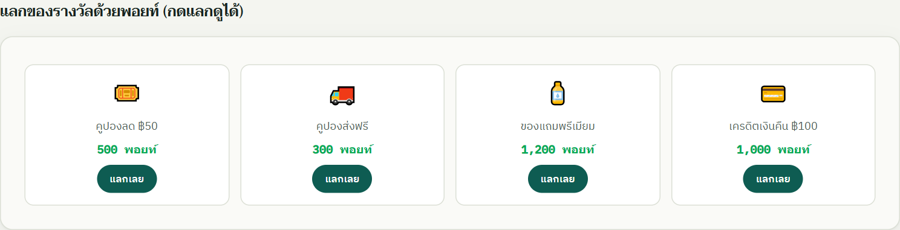
รูป 5-2 ตัวอย่างหน้าแลกของรางวัลด้วยพอยท์ ลูกค้าเลือกแลกได้ทันทีตามจำนวนพอยท์ที่มี
5.3 แคมเปญตามช่วงเวลาและโควตา
หัวข้อ รายละเอียด ช่วงเวลา กำหนดวันและเวลาเริ่มต้น–สิ้นสุดชัดเจน สินค้าที่เข้าร่วม ใช้ได้เฉพาะ SKU ที่ผูกไว้กับแคมเปญ สินค้าอื่นไม่ได้สิทธิ์ โควตารวมทั้งระบบ จำนวนสินค้าแคมเปญที่ขายได้ทั้งหมด โควตาต่อร้านค้า จำนวนสินค้าแคมเปญสูงสุดที่ร้านแต่ละร้านซื้อได้ การพักโควตา ระหว่างขั้นตอนชำระเงินระบบพักโควตาไว้ 15 นาที ถ้าชำระไม่สำเร็จโควตาคืนกลับเข้าระบบ
5.4 แคมเปญสะสมยอดรายปี
สำหรับร้านขายส่งที่ทำสัญญาสะสมยอดซื้อรายปี แคมเปญจะปลดล็อกรางวัลตามขั้นบันไดของยอดสะสม รางวัลบางรายการไม่ได้อยู่ในคลังสินค้า POS เช่น ตั๋วเดินทาง หรือเครื่องใช้ไฟฟ้า ยอดสะสมจะรีเซ็ตเป็นศูนย์ทุกครั้งที่ขึ้นสัญญาปีใหม่ ไม่สะสมข้ามปี
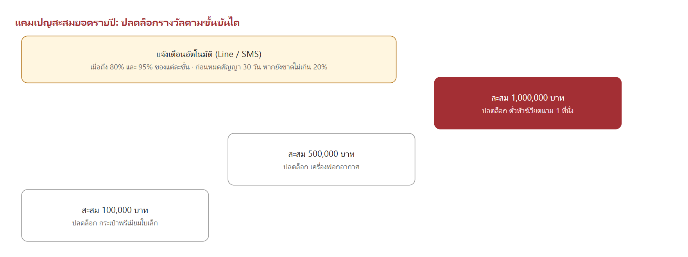
รูป 5-3 ตัวอย่างขั้นบันไดของแคมเปญสะสมยอดรายปี
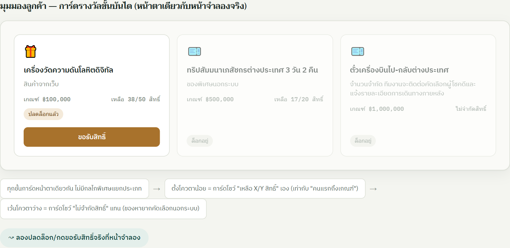
รูป 5-4 ตัวอย่างหน้าจอ: การ์ดแต่ละขั้นแสดงเกณฑ์ สิทธิ์คงเหลือ และสถานะปลดล็อก ทุกขั้นใช้สิทธิ์ได้จนกว่าแคมเปญจะสิ้นสุด
รางวัลแต่ละขั้นแสดงจำนวนสิทธิ์คงเหลือ หรือแสดงว่าไม่จำกัดสิทธิ์สำหรับรางวัลที่คัดเลือกนอกระบบ
เมื่อถึงยอดของขั้นนั้น ลูกค้ากดขอรับสิทธิ์ได้ทันที
ไม่มีกำหนดวันหมดสิทธิ์การรับรางวัล ใช้สิทธิ์ได้จนกว่าแคมเปญจะสิ้นสุด
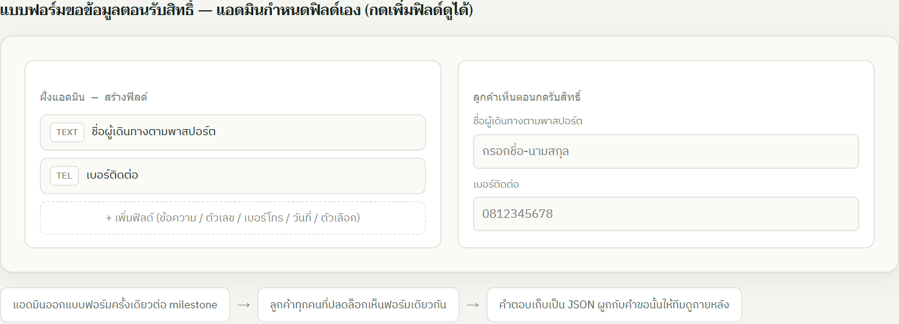
รูป 5-5 แอดมินออกแบบฟอร์มขอข้อมูลตอนรับสิทธิ์ได้เอง เช่น ชื่อผู้เดินทางตามพาสปอร์ตและเบอร์ติดต่อ ลูกค้าทุกคนที่ปลดล็อกเห็นฟอร์มเดียวกัน
5.5 การตั้งค่าของแอดมิน
หัวข้อ รายละเอียด พอยท์ราย SKU ตั้งพอยท์ต่อหน่วยของสินค้าแต่ละรายการเอง ปิดเป็น 0 พอยท์ได้ ตัวคูณแคมเปญ ตั้งตัวคูณพอยท์พิเศษสำหรับช่วงแคมเปญ รายการแลกของรางวัล เพิ่ม ลบ หรือแก้ไขของรางวัล และกำหนดจำนวนพอยท์ที่ใช้แลกแต่ละรายการ แคมเปญตามช่วงเวลา ผูก SKU ที่เข้าร่วม ตั้งช่วงเวลา และโควตารวม / โควตาต่อร้านค้า (รายละเอียดหัวข้อ 5.3) แคมเปญสะสมยอดรายปี ตั้งเกณฑ์ยอดสะสมแต่ละขั้น ของรางวัล (รวมของที่ไม่อยู่ใน POS) และออกแบบฟอร์มขอข้อมูลตอนรับสิทธิ์เอง ยอดสะสมรีเซ็ตเองทุกปีสัญญาใหม่ วันหมดอายุพอยท์ กำหนดวันหมดอายุของพอยท์แต่ละรอบหรือแคมเปญที่แจกได้เอง
5.6 หน้าจอและ flow การใช้งาน
หน้าจอทั้งหมดของโมดูลนี้เรียงตามลำดับ flow การใช้งาน แต่ละภาพมีเลขกำกับบนจอ และคำอธิบายของแต่ละเลขอยู่ใต้ภาพ ตามด้วยกติกา ข้อยกเว้น และสถานะที่ต้องรองรับ พอยท์ที่แลกได้และยอดสะสมแคมเปญเป็นคนละบัญชี ทุกหน้าฝั่งลูกค้าแยกสองส่วนนี้ด้วยการ์ดคนละแบบ
โมดูลพอยท์
ภาพรวม · ภาพรวม Flow พอยท์
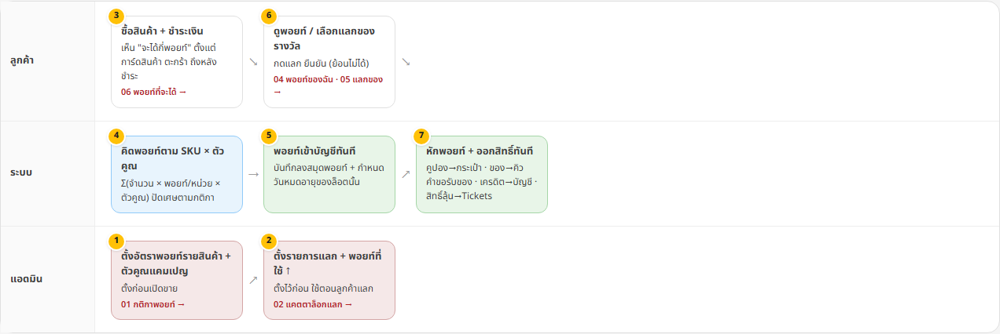
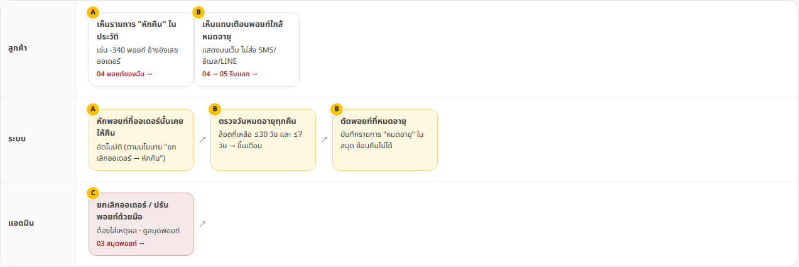
คำอธิบายแต่ละส่วนในหน้าจอ
ตั้งก่อนขาย: อัตราพอยท์รายสินค้า (รวมตั้งตามแบรนด์/หมวด) + ตัวคูณแคมเปญ + นโยบายหมดอายุ — สินค้าที่ยังไม่ตั้งใช้ "ค่าเริ่มต้นเมื่อสินค้าไม่ได้ตั้งไว้"
ตั้งรายการแลก: ประเภท พอยท์ที่ใช้ โควตารวม/ต่อคน สถานะ — ปิดชั่วคราวได้โดยไม่กระทบสิทธิ์ที่ลูกค้าแลกไปแล้ว
ลูกค้าเห็นพอยท์ก่อนจ่าย: การ์ดสินค้า → ตะกร้า (รายการละเอียด) → หน้าผลลัพธ์หลังชำระ เพื่อให้เห็นว่าซื้ออะไรได้พอยท์เท่าไร
คิดที่เซิร์ฟเวอร์: ตัวเลขบนหน้าจอเป็นประมาณการ ยอดจริงคำนวณที่ระบบตอนชำระสำเร็จ (ใช้อัตราและตัวคูณ ณ เวลาที่ชำระ)
เข้าทันที: ไม่มีขั้นตอนกดรับ/แปลง — แต่ละออเดอร์สร้างล็อตใหม่ 1 ล็อต (ฐาน + ส่วนเพิ่มจากตัวคูณ) พร้อมวันหมดอายุ
แลกแล้วย้อนไม่ได้เอง: ต้องผ่านหน้าต่างยืนยันที่แสดงยอดคงเหลือหลังแลก — ถ้าแลกผิด ต้องติดต่อแอดมินเพื่อปรับพอยท์
ออกสิทธิ์ทันที: คูปอง→กระเป๋าคูปอง · ของพรีเมียม→คิวคำขอรับของ (ลูกค้ากรอกที่อยู่/ฟอร์ม) · เครดิต→ยอดเครดิตในบัญชี · สิทธิ์ลุ้น→Tickets
A. ยกเลิกออเดอร์: หักคืนเท่ากับที่ออเดอร์นั้นให้ไว้ (ทั้งฐานและส่วนเพิ่ม) ตามนโยบายที่เปิดไว้ ถ้าพอยท์ถูกแลกไปแล้วจะหักได้เท่าที่เหลือในบัญชี (ดูข้อที่ต้องตัดสินใจ) B. หมดอายุ: ระบบตรวจทุกคืน ขึ้นแถบเตือนที่ 30 และ 7 วันก่อน แล้วตัดล็อตที่หมดอายุ — ไม่มีการส่ง SMS/อีเมล/LINE C. ปรับด้วยมือ: ทำได้เฉพาะแอดมินที่มีสิทธิ์ ต้องใส่เหตุผล เกินวงเงินต้องให้ผู้จัดการอนุมัติ ทุกรายการมี audit "ใครทำ เมื่อไหร่"
กติกา / ข้อยกเว้น / สถานะ
ลำดับหักตอนแลก: หักล็อตที่ใกล้หมดอายุก่อน (เพื่อไม่ให้ลูกค้าเสียพอยท์โดยไม่จำเป็น)
ของแถมจากโปรโมชั่นและสินค้าราคา 0 ไม่ให้พอยท์; สินค้า 0 พอยท์ยังนับเข้ายอดสะสมแคมเปญได้ตามกติกาแคมเปญ (แยกบัญชี)
คืนสินค้า/ยกเลิกหลังจากลูกค้าใช้สิทธิ์ที่แลกไปแล้ว: ไม่เรียกคืนสิทธิ์ที่ใช้แล้ว (นโยบายร่วม §1.6) — หักได้เท่าที่เหลือในบัญชี
ข้อที่ต้องตัดสินใจกับลูกค้า
ถ้าลูกค้าแลกพอยท์ไปหมดแล้วค่อยยกเลิกออเดอร์: ให้ยอดติดลบได้ หรือหักได้แค่เท่าที่มี (ค่าเริ่มต้นในมอคอัพ: หักได้เท่าที่มี ไม่ติดลบ)
ใช้อัตราตามยอดบิล (ทุก ฿100 ได้ X พอยท์) แทนอัตรารายสินค้าได้ไหม — ต้นแบบสถิตเดิมใช้แบบตามยอดบิล แต่ spec ที่อนุมัติคิดรายสินค้า
แอดมิน · กติกาพอยท์ + อัตรารายสินค้า
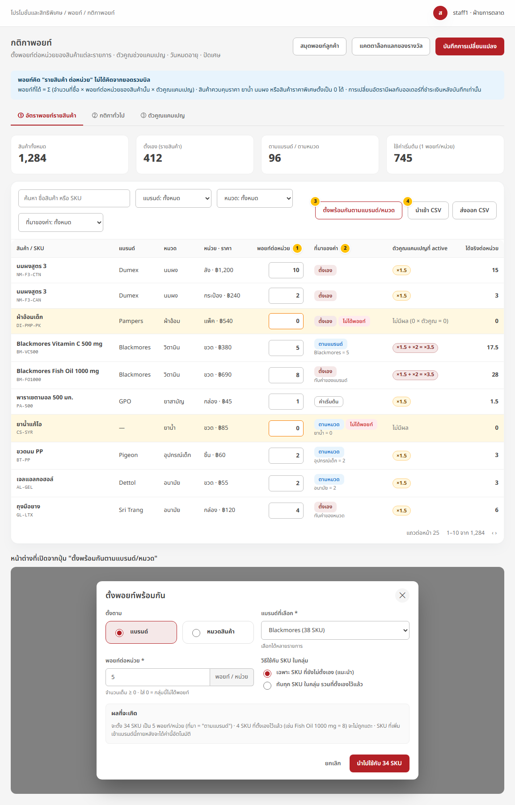
คำอธิบายแต่ละส่วนในหน้าจอ
พอยท์ต่อหน่วย (แก้ในตารางได้ตรง ๆ): จำนวนเต็ม ≥ 0 · ใส่ 0 = สินค้านี้ไม่ได้พอยท์ (แถวขึ้นสีเหลืองและมีป้าย "ไม่ได้พอยท์") · เปลี่ยนแล้วแถวขึ้นสถานะ "ยังไม่บันทึก" จนกด "บันทึกการเปลี่ยนแปลง"
ที่มาของค่า: ตั้งเอง (รายสินค้า) > ตามแบรนด์ > ตามหมวด > ค่าเริ่มต้น — ค่าที่เฉพาะเจาะจงกว่าชนะ · กดชิปเพื่อล้างค่าที่ตั้งเอง ให้กลับไปใช้ค่าของแบรนด์/หมวด/ค่าเริ่มต้น
ตั้งพร้อมกันตามแบรนด์/หมวด: เลือกกลุ่ม + ค่า + วิธีใช้ แล้วระบบบอกจำนวน SKU ที่จะถูกเปลี่ยนก่อนกดนำไปใช้ · ค่าเริ่มต้นแนะนำให้ "ไม่ทับที่ตั้งเอง"
นำเข้า/ส่งออก CSV: คอลัมน์ sku, points_per_unit · นำเข้าแล้วแสดงสรุป "สำเร็จ X / ข้าม Y (SKU ไม่พบ, ค่าไม่ใช่จำนวนเต็ม)" ก่อนยืนยันจริง
ค่าเริ่มต้นเมื่อสินค้าไม่ได้ตั้งไว้: กันสินค้าใหม่ที่ยังไม่มีใครตั้งค่าให้ได้พอยท์ผิดโดยไม่รู้ตัว — มอคอัพตั้ง 1 พอยท์/หน่วย (ดูข้อที่ต้องตัดสินใจ)
ปัดเศษ: ตัวคูณ ×1.5 ทำให้เกิดทศนิยมได้ ระบบปัดที่ระดับบรรทัดสินค้า หลังคูณตัวคูณ ผลรวมที่ลูกค้าเห็นจึงเท่ากับยอดที่ได้จริง
วันหมดอายุตั้งต่อรอบ/แคมเปญ: มีนโยบายเริ่มต้นไว้ 1 ค่า แต่แต่ละแคมเปญที่แจกพอยท์ override ได้ที่หน้าแคมเปญ — ตารางนี้แสดงผลที่ใช้จริงเพื่อให้ตรวจได้ที่เดียว
ยกเลิกออเดอร์ → หักคืน: เปิด/ปิดได้ · การหักคืนบันทึกเป็นรายการ "หักคืน" อ้างเลขออเดอร์ในสมุดพอยท์ (ดูหน้า 03)
ตัวคูณแคมเปญ (อ่านอย่างเดียว): ตั้งค่าที่เดียวคือในโมดูลแคมเปญ หน้านี้เป็นมุมมองสรุปว่าตอนนี้ตัวคูณไหน active และซ้อนกันแล้วได้เท่าไร
กติกา / ข้อยกเว้น / สถานะ
อัตรา/ตัวคูณที่เปลี่ยน มีผลกับออเดอร์ที่ ชำระเงินสำเร็จหลังบันทึก เท่านั้น — พอยท์ที่ให้ไปแล้วไม่ถูกคำนวณย้อนหลัง
ตัวคูณของแคมเปญคิดเฉพาะ SKU ที่แคมเปญนั้นครอบคลุม; ถ้าสินค้าได้ 0 พอยท์ ตัวคูณไม่มีผล (0 × n = 0)
ของแถมจากโปรโมชั่นไม่ให้พอยท์ (ไม่ได้ซื้อ) · สินค้าที่เกิดจากการแลกพอยท์ก็ไม่ให้พอยท์
ช่องพอยท์ต่อหน่วยรับเฉพาะจำนวนเต็ม; ถ้าแก้ค่าที่มาจากแบรนด์/หมวดในตาราง ที่มาจะเปลี่ยนเป็น "ตั้งเอง"
ผู้ที่แก้ได้: ฝ่ายการตลาดที่มีสิทธิ์ "จัดการพอยท์" · ทุกการแก้อัตราบันทึก audit (ค่าเดิม → ค่าใหม่, ใคร, เมื่อไหร่)
ข้อที่ต้องตัดสินใจกับลูกค้า
ใช้อัตราตามยอดบิลแทนได้ไหม (เช่น ทุก ฿100 ได้ 10 พอยท์ แบบต้นแบบสถิต admin.html เดิม) — spec ที่อนุมัติคิดรายสินค้า มอคอัพจึงยึดรายสินค้าเป็นหลัก และมีค่าเริ่มต้นไว้รองรับสินค้าที่ไม่ได้ตั้ง
ลำดับความสำคัญ แบรนด์ vs หมวด เมื่อขัดกัน (มอคอัพ: แบรนด์ชนะ) และค่าเริ่มต้นสำหรับสินค้าที่ไม่ได้ตั้ง (มอคอัพ: 1 พอยท์/หน่วย หรือจะให้เป็น 0 ก็ได้)
วันหมดอายุที่ override ต่อแคมเปญ ใช้กับ "เฉพาะพอยท์ส่วนเพิ่มจากตัวคูณ" (มอคอัพ) หรือกับพอยท์ทั้งออเดอร์ในช่วงแคมเปญ
ปัดเศษทิ้ง/ใกล้เคียง/ขึ้น และปัดรายบรรทัดหรือทั้งออเดอร์ (มอคอัพ: ปัดทิ้ง รายบรรทัด)
แอดมิน · แคตตาล็อกแลกของรางวัล
คำอธิบายแต่ละส่วนในหน้าจอ
ประเภท: คูปอง / ส่งฟรี / ของแถม / เครดิต / สิทธิ์ลุ้น — ประเภทกำหนดว่าออกอะไรให้ลูกค้าและไปอยู่ที่ไหนหลังแลก (ตารางสรุปท้ายหน้า)
ได้รับ: สรุปสั้นของสิ่งที่ลูกค้าจะได้ (สร้างอัตโนมัติจากฟิลด์ในรายการ) เพื่อให้แอดมินเห็นผลโดยไม่ต้องเปิดแก้ไข
คงเหลือ / โควตารวม: ลดลงทันทีที่มีคนแลก · เหลือ 0 → สถานะอัตโนมัติเป็น "หมดแล้ว" และลูกค้ากดไม่ได้ · เติมโควตาได้ภายหลัง · ของแถมใช้สต็อกที่จัดสรรเป็นโควตา
ต่อคน: จำกัดจำนวนครั้งต่อลูกค้า 1 บัญชี รายเดือน/รายปี/ตลอดไป — ว่าง = ไม่จำกัด · ตรวจที่ฝั่งเซิร์ฟเวอร์ตอนกดแลก
สถานะ: เปิดใช้งาน / ปิดชั่วคราว (ซ่อนจากลูกค้า) / หมดแล้ว / รอเปิด (ตามช่วงเวลา) · ปิดชั่วคราวไม่กระทบสิทธิ์ที่ลูกค้าแลกไปแล้ว
เปลี่ยนประเภทของรายการที่มีคนแลกแล้วไม่ได้: ต้องสร้างรายการใหม่ (กันสิทธิ์เก่าคลาดเคลื่อน) — ช่องประเภทจะเป็นอ่านอย่างเดียว
ฟิลด์เปลี่ยนตามประเภท: คูปอง = ชนิด/มูลค่า/ขั้นต่ำ/อายุหลังแลก · ของแถม = สินค้า + สต็อก · เครดิต = บาท · สิทธิ์ลุ้น = กิจกรรม (ลิงก์ไปโมดูลสุ่มรางวัล)
ของจริงเข้าคิวเดียวกับแคมเปญ: ลูกค้ากรอกที่อยู่แล้วทีมหลังบ้านจัดการต่อในคิวคำขอรับรางวัล — ไม่ต้องมีคิวแยกสำหรับพอยท์
พอยท์ที่ใช้: เป็นจำนวนเต็ม > 0 · แก้ได้ตลอด มีผลกับการแลกครั้งถัดไป · ระบบเตือนถ้าตั้งต่ำกว่ามูลค่าของรางวัลจริงมากผิดปกติ
กติกา / ข้อยกเว้น / สถานะ
ลบรายการที่เคยมีคนแลกแล้วไม่ได้ — ทำได้เพียง "ปิดชั่วคราว" (เก็บประวัติไว้ตรวจย้อนหลัง) ; รายการที่ยังไม่เคยมีคนแลกลบได้
คูปองที่ได้จากการแลกเป็นคูปองออนไลน์ธรรมดาใบหนึ่ง (ผูกบัญชีลูกค้า ใช้ได้ครั้งเดียว) และใช้ตามกติกาคูปองทุกประการ
แลกสิทธิ์ลุ้นได้เฉพาะเมื่อกิจกรรมปลายทางเปิดอยู่ — ถ้ากิจกรรมปิด รายการจะแสดง "รอเปิด" และกดไม่ได้
ลูกค้าที่แลกเกินโควตาพร้อมกันหลายคน: ระบบตัดตามลำดับเวลาที่ชำระ ผู้ที่ช้ากว่าเห็นข้อความ "หมดแล้ว" และพอยท์ไม่ถูกหัก
ข้อที่ต้องตัดสินใจกับลูกค้า
เครดิตเงินคืนใช้ร่วมกับคูปอง/โปรโมชั่นในบิลเดียวกันได้หรือไม่ และมีอายุหรือไม่ (มอคอัพ: 90 วัน)
สิทธิ์ลุ้นที่แลกด้วยพอยท์นับเข้ากองทุนงบสุ่มรางวัลอย่างไร (กิจกรรมสุ่มรางวัลเป็นระยะถัดไป)
ของพรีเมียมที่ส่งไม่ได้/สต็อกจริงหมด หลังลูกค้าแลกแล้ว: คืนพอยท์ให้อัตโนมัติ หรือให้แอดมินตัดสินใจรายกรณี
แอดมิน · สมุดพอยท์ลูกค้า + ปรับพอยท์
คำอธิบายแต่ละส่วนในหน้าจอ
ค้นหาลูกค้า: ชื่อร้าน / เบอร์โทร / รหัสลูกค้า (พิมพ์บางส่วนได้) — พบหลายรายให้เลือกจากรายการ; ไม่พบแสดง "ไม่พบลูกค้า ตรวจสอบรหัสอีกครั้ง"
พอยท์คงเหลือ: ยอดรวมทุกล็อตที่ยังไม่หมดอายุ — ตัวเลขนี้คือที่ลูกค้าเห็นและแลกได้ · แสดงสรุปได้รับ/แลก/หมดอายุ/หักคืนของปีปฏิทินปัจจุบันเพื่อใช้กระทบยอด
กำลังจะหมดอายุ 30 วัน: รวมล็อตที่หมดอายุภายใน 30 วัน พร้อมแจกแจงล็อต — ใช้ตอบลูกค้าที่โทรถามว่า "ทำไมพอยท์หาย"
ยอดสะสมแคมเปญ (บัญชีแยก): แสดงให้เห็นแต่ปรับจากหน้านี้ไม่ได้ — ไม่ถูกหักเมื่อแลกพอยท์ และไม่ใช่ส่วนหนึ่งของพอยท์คงเหลือ (สีและกรอบต่างกันตั้งใจ)
ประเภทรายการ: ได้รับ / แลก / หมดอายุ / ปรับ / หักคืน — กรองตามประเภทและช่วงวันที่ได้ · รายการอ้างอิงเลขออเดอร์หรือรหัสรางวัลคลิกเข้าดูได้
หมดอายุ (ต่อล็อต): แต่ละรายการ "ได้รับ" ผูกวันหมดอายุของตัวเอง (ตามรอบ/แคมเปญ) · รายการ override จากแคมเปญมีป้ายกำกับ
ปรับพอยท์ เพิ่ม/ลด: ลดได้ไม่เกินยอดคงเหลือ · แสดง "หลังปรับ" สดขณะกรอก เพื่อกันกรอกผิดจำนวน
เหตุผลบังคับ: เลือกหมวด + ใส่รายละเอียดอย่างน้อย 10 ตัวอักษร ปุ่มยืนยันกดไม่ได้จนกว่าจะครบ · หลักฐานแนบเป็นภาพ/PDF
อนุมัติและ audit: เกินวงเงินต้องให้ผู้จัดการอนุมัติ (แถวสีเหลืองในสมุด) · ทุกการปรับบันทึกผู้ทำ เวลา ค่าก่อน/หลัง เหตุผล หลักฐาน และแก้ไข/ลบย้อนหลังไม่ได้
กติกา / ข้อยกเว้น / สถานะ
สมุดพอยท์เป็นแบบ append-only — แก้ผิดต้องปรับกลับด้วยรายการใหม่ ไม่แก้/ลบรายการเดิม
รายการ "หักคืน" จากการยกเลิกออเดอร์ หักได้เท่าที่คงเหลือ ถ้าลูกค้าแลกไปแล้ว ส่วนที่ขาดไม่ตามเรียกคืน (ไม่ทำให้ติดลบ)
ผู้ปรับกับผู้อนุมัติต้องเป็นคนละคน · ผู้จัดการอนุมัติ/ปฏิเสธพร้อมหมายเหตุ ปฏิเสธแล้วไม่เปลี่ยนยอด
การแลกที่ลูกค้ากดผิด: แอดมินแก้ได้ด้วยการปรับ "แลกผิดพลาด" (+) และต้องยกเลิกสิทธิ์ที่ออกไปเองด้วย (เช่น คูปองในกระเป๋า)
สิทธิ์เข้าหน้านี้: ฝ่ายการตลาด (ดู) · ผู้จัดการ (ดู + อนุมัติ) · ผู้ปรับต้องมีสิทธิ์ "ปรับพอยท์"
ข้อที่ต้องตัดสินใจกับลูกค้า
วงเงินที่ต้องอนุมัติ: ต่อครั้ง 1,000 พอยท์ / ต่อวัน 5,000 พอยท์ (ค่าสมมุติ) — หรือกำหนดเป็นมูลค่า ฿ แทน
แอดมินปรับ "ยอดสะสมแคมเปญ" ได้หรือไม่ (มอคอัพ: ปรับไม่ได้จากหน้านี้ ต้องทำที่ความคืบหน้าแคมเปญ)
ลูกค้า · พอยท์ของฉัน + ประวัติ
คำอธิบายแต่ละส่วนในหน้าจอ
การ์ดพอยท์: ตัวเลขใหญ่ = พอยท์ที่แลกได้ตอนนี้ (รวมทุกล็อตที่ยังไม่หมดอายุ) · แจกแจงล็อตตามวันหมดอายุ เรียงใกล้หมดก่อน · ไม่แสดงมูลค่าเป็นบาท
ยอดสะสมแคมเปญ (บัญชีแยก): เป็นการ์ดคนละสี กรอบประ มีป้ายกำกับชัดเจน และคำอธิบายว่าไม่ถูกหักเมื่อแลกพอยท์ — ป้องกันลูกค้าสับสนว่าแลกของแล้วยอดแคมเปญจะลด
แถบเตือนใกล้หมดอายุ: ขึ้นเมื่อมีล็อตหมดอายุภายใน 30 วัน (≤7 วันเปลี่ยนเป็นสีแดง) · แสดงบนเว็บเท่านั้น ไม่ส่ง SMS/อีเมล/LINE · ปิดแถบไม่ได้จนกว่าจะแลกหรือพอยท์หมด
แท็บ ประวัติ / ที่ได้รับ / ที่ใช้: "ประวัติ" รวมทุกอย่างเรียงใหม่ → เก่า · "ที่ได้รับ" เฉพาะรายการ + · "ที่ใช้" เฉพาะการแลก พร้อมลิงก์ไปดูสิทธิ์ที่ได้ (คูปอง/คำขอรับของ)
วิธีสะสม: อัตราตัวอย่างดึงจากสินค้าขายดี + ตัวคูณที่ active ตอนนี้พร้อมวันสิ้นสุด และบอกชัดว่าซ้อนกันด้วยการบวก — ลิงก์ไปหน้าตัวอย่างพอยท์ที่จะได้
สถานะว่าง: ลูกค้าใหม่หรือพอยท์ 0 เห็นการ์ดนี้แทนรายการ · ปุ่มแลกของรางวัลยังกดเข้าได้แต่ทุกรายการเป็น "พอยท์ไม่พอ"
กติกา / ข้อยกเว้น / สถานะ
รายการ "หักคืน" แสดงเลขออเดอร์ที่ถูกยกเลิก · ถ้ายอดไม่พอหักจะหักเท่าที่มี ไม่ทำให้พอยท์ติดลบ
รายการ "ทีมงานปรับพอยท์" แสดงเหตุผลสั้น ๆ ให้ลูกค้าเห็น (รายละเอียด/หลักฐานเห็นเฉพาะแอดมิน)
แลกของ: หักจากล็อตที่ใกล้หมดอายุก่อน · พอยท์ที่หมดอายุแล้วขอคืนไม่ได้
ลูกค้าหลายผู้ใช้ในร้านเดียวกัน (บัญชีร้าน) ใช้ยอดพอยท์ร่วมกันทั้งร้าน
ข้อที่ต้องตัดสินใจกับลูกค้า
พอยท์เป็นของ "บัญชีร้าน" ทั้งร้านหรือรายผู้ใช้ (มอคอัพ: ทั้งร้าน)
จะแสดงเตือนหมดอายุที่หน้าอื่น (หน้าแรก/ตะกร้า) ด้วยหรือเฉพาะหน้านี้และหน้าแลกของรางวัล
ลูกค้า · แลกของรางวัลด้วยพอยท์
คำอธิบายแต่ละส่วนในหน้าจอ
แสดงยอดสองบัญชีแยกกัน: พอยท์ (แดง ใช้จ่ายได้) กับยอดสะสมแคมเปญ (กรอบประ น้ำเงิน ไม่ถูกหัก) — เพื่อไม่ให้ลูกค้าคิดว่าแลกของแล้วยอดแคมเปญลด
การ์ดที่แลกได้: ชื่อ + รายละเอียดสั้น (ขั้นต่ำ/อายุ) + พอยท์ที่ใช้ + สิทธิ์ที่เหลือของตัวเองในเดือน/ปี (ตามที่ตั้ง "ต่อคน") · ปุ่ม "แลกเลย" เปิดหน้าต่างยืนยัน ไม่แลกทันที
ใกล้หมดสต็อก: เหลือน้อยกว่า 20% ของโควตาแสดงป้ายเหลือกี่ชิ้น เพื่อกระตุ้นการตัดสินใจ — ไม่แสดงจำนวนเมื่อไม่จำกัด
หมดแล้ว: โควตารวมเป็น 0 — การ์ดจางลง ปุ่มกดไม่ได้ · ไม่ซ่อนเพื่อให้ลูกค้ารู้ว่ารายการนี้มีอยู่ (แอดมินเติมโควตาแล้วกลับมาแลกได้)
พอยท์ไม่พอ: บอกส่วนที่ขาด (3,000 − 2,480 = 520) และแถบความคืบหน้า · ปุ่มถูกปิด ไม่ใช่ซ่อน
ยืนยันก่อนแลก: แสดงพอยท์ก่อน/หลัง และข้อความเตือนว่ายกเลิกไม่ได้ · ปุ่มยืนยันมีจำนวนพอยท์กำกับ · ถ้าพอยท์เปลี่ยนระหว่างนั้น (เช่น หมดอายุ) ระบบตรวจซ้ำที่เซิร์ฟเวอร์
คูปอง/ส่งฟรี/เครดิต/สิทธิ์ลุ้น ได้ทันที: แสดงว่าสิทธิ์ไปอยู่ที่ไหน (กระเป๋าคูปอง / ยอดเครดิต / Tickets) พร้อมปุ่มพาไปใช้
ของพรีเมียม: สร้างคำขอเข้าคิวเดียวกับรางวัลแคมเปญ ลูกค้ากรอกที่อยู่/เบอร์ทันทีหรือกลับมากรอกทีหลังได้ — ติดตามสถานะในประวัติคำขอรับของ
กติกา / ข้อยกเว้น / สถานะ
กดแลกซ้ำ/สองแท็บพร้อมกัน: ระบบหักและออกสิทธิ์ครั้งเดียว (idempotent) · แลกไม่สำเร็จ (โควตาหมดพอดี) ไม่หักพอยท์และแจ้ง "รายการนี้หมดแล้ว"
คูปองลดที่แลกแล้วอายุนับจากวันที่แลก · เครดิตหักจากยอดชำระออเดอร์ถัดไปโดยอัตโนมัติ (ผู้ใช้เลือกไม่ใช้ได้)
ถ้าแอดมินปิดรายการหลังลูกค้าเปิดหน้านี้ไว้ กดแลกแล้วจะแจ้ง "รายการนี้ไม่เปิดให้แลกแล้ว" โดยไม่หักพอยท์
ของพรีเมียมที่ยังไม่กรอกที่อยู่ภายใน 14 วัน: ระบบเตือนบนเว็บ ไม่ยกเลิกสิทธิ์เอง
ข้อที่ต้องตัดสินใจกับลูกค้า
ให้แลกของพรีเมียมแล้ว "ขอคืนพอยท์" ได้หากยังไม่ได้เริ่มจัดเตรียม หรือไม่ให้คืนเลย (มอคอัพ: ไม่ให้คืนเอง ต้องผ่านแอดมิน)
ลูกค้าบัญชีร้านที่มีหลายผู้ใช้: ใครแลกได้บ้าง (เจ้าของร้านเท่านั้น หรือทุกผู้ใช้)
ลูกค้า · พอยท์ที่จะได้ (สินค้า/ตะกร้า/หลังชำระ)
คำอธิบายแต่ละส่วนในหน้าจอ
ป้ายพอยท์บนการ์ดสินค้า: "ได้ N พอยท์/หน่วย" ตามหน่วยที่ขาย (ลัง/ขวด) + ป้ายตัวคูณแคมเปญพร้อมวันสิ้นสุด · บรรทัดล่างบอกยอดรวมตัวคูณต่อหน่วย — ตัวเลขที่ลูกค้าตัดสินใจจริง
ตัวคูณซ้อนกัน: แสดง "×1.5 + ×2 = ×3.5" ให้เห็นที่มา ไม่ใช่แค่ผลรวม · ป้ายบนรูปแสดงวันสิ้นสุดที่ใกล้ที่สุด (18 ต.ค.)
สินค้า 0 พอยท์: ป้ายเทา "ไม่ได้พอยท์" แทนที่จะซ่อน — ลูกค้าจะได้ไม่เข้าใจผิดว่าลืมให้พอยท์ · ไม่แสดงป้ายตัวคูณ
กล่องคำนวณหน้ารายละเอียด: เปลี่ยนตามจำนวนสด · แสดงสูตร พอยท์/หน่วย × จำนวน × ตัวคูณ · มีวันหมดอายุของพอยท์และข้อความว่าเป็นประมาณการ
สรุปในตะกร้า: ยอด "พอยท์ที่จะได้รับ" รวมอยู่ใกล้ยอดสุทธิ + ลิงก์ "รายการละเอียด ▾" ขยาย/ยุบได้ (ค่าเริ่มต้นยุบบนมือถือ)
รายการละเอียดรายบรรทัด: จำนวน × พอยท์/หน่วย × ตัวคูณ = พอยท์ · บรรทัด 0 พอยท์ใช้แถวสีเทา + เหตุผล (ไม่ได้พอยท์ / ของแถม) · ผลรวมต้องเท่ากับตัวเลขหัวตาราง
ยอดสะสมแคมเปญแยกชัดเจน: กรอบประสีน้ำเงิน คนละกล่องกับพอยท์ เพื่อไม่ให้ลูกค้ารวมสองบัญชีเป็นยอดเดียว
หลังชำระสำเร็จ: แสดง +พอยท์ ยอดก่อน/หลัง และวันหมดอายุ ทันทีในหน้าผลลัพธ์ · ปุ่มไปหน้าพอยท์ของฉัน และแลกของรางวัล
ออเดอร์ถูกยกเลิก: แสดง "หักพอยท์คืน −N" สีแดง ในหน้าสถานะออเดอร์และในประวัติพอยท์ · ตามนโยบายยกเลิกออเดอร์ที่แอดมินเปิดไว้
กติกา / ข้อยกเว้น / สถานะ
ตัวเลขก่อนชำระเป็นประมาณการ — ยอดจริงคิดที่เซิร์ฟเวอร์ตอนชำระสำเร็จ โดยใช้อัตราและตัวคูณ ณ เวลานั้น (ถ้าตัวคูณหมดอายุระหว่างตะกร้า ยอดจะลดและแจ้งเตือนที่หน้าชำระเงิน)
ปัดเศษทุกบรรทัดตามกติกาแอดมิน (ปัดทิ้ง) ก่อนรวม — ทศนิยม เช่น 17.5 พอยท์/ขวด จึงแสดงเป็นจำนวนเต็มเมื่อคูณจำนวนแล้ว
ของแถม/สินค้าที่ได้จากการแลกพอยท์ไม่ให้พอยท์ · ส่วนลดและคูปองไม่ลดพอยท์ เพราะคิดจากสินค้าต่อหน่วย (ดูข้อที่ต้องตัดสินใจ)
ลูกค้าเห็นพอยท์ที่จะได้เฉพาะสินค้าที่ตัวเองสั่งได้ · แสดงค่าเดียวกันทั้งการ์ด หน้ารายละเอียด ตะกร้า และหน้าผลลัพธ์
ข้อที่ต้องตัดสินใจกับลูกค้า
พอยท์ต้องลดตามส่วนลด/คูปองที่ใช้ในบิลหรือไม่ (มอคอัพ: ไม่ลด เพราะคิดต่อหน่วยตามสเปก)
การคืนสินค้าบางรายการ (ไม่ใช่ยกเลิกทั้งออเดอร์): หักพอยท์ตามสัดส่วนสินค้าที่คืนหรือไม่หัก (สเปกกล่าวถึงเฉพาะการยกเลิกออเดอร์)
โมดูลแคมเปญ
ภาพรวม · ภาพรวม Flow แคมเปญ
คำอธิบายแต่ละส่วนในหน้าจอ
สร้างแคมเปญ — เมนู "สร้างแคมเปญ" ในรายการเลือกประเภทก่อน (สะสมยอดรายปี / ช่วงเวลา+โควตา) เพราะฟอร์มต่างกันโดยสิ้นเชิง เปลี่ยนประเภทภายหลังไม่ได้
กำหนดขั้น + ฟอร์ม — เรียงขั้นตามยอดเกณฑ์อัตโนมัติ · แต่ละขั้นมีฟอร์มขอข้อมูลของตัวเองได้ 1 ฟอร์ม
เปิดแคมเปญ — บันทึกเป็น "ร่าง" ได้ ยังไม่แสดงให้ลูกค้า · เปิดแล้วแก้ยอดเกณฑ์ของขั้นที่มีคนถึงแล้วไม่ได้ (ดูกติกา)
ลูกค้าซื้อ — ไม่ต้องทำอะไรเพิ่ม ระบบนับให้เองเฉพาะสินค้าในขอบเขตที่แอดมินตั้ง
บวกยอดสะสม — บวกเมื่อสถานะการชำระ = สำเร็จ ไม่รวมค่าส่ง · ยกเลิก/คืนสินค้า = หักคืนและบันทึกประวัติ
แจ้งเตือน — ถึง 80%, 95% ของขั้นถัดไป และก่อนสัญญาหมด N วัน ผ่าน LINE/อีเมล/ในเว็บ ส่งครั้งเดียวต่อเหตุการณ์ต่อขั้น
ถึงเกณฑ์ — การ์ดขั้นเปลี่ยนเป็น "ปลดล็อกแล้ว" ทันทีหลังชำระเงิน (ไม่ต้องรอรอบคำนวณ)
ขอรับสิทธิ์ — เปิดฟอร์มของขั้นนั้น ตรวจ required/รูปแบบก่อนส่ง มีคำเตือนส่งแล้วแก้ไม่ได้
ตัดสิทธิ์ — ตัดสิทธิ์คงเหลือทันทีที่ส่งสำเร็จ (กันคนแย่งกัน) และจับ snapshot ยอดสะสม ณ เวลานั้นไว้ให้แอดมินตรวจ
ตรวจ/อนุมัติ — ปฏิเสธต้องกรอกเหตุผล แล้วสิทธิ์คืนกลับ ลูกค้าส่งใหม่ได้
ส่งมอบ — สินค้า POS ลิงก์ไปรายการจัดส่ง · ของนอก POS ใส่เลขอ้างอิง/แนบใบส่งมอบ (เช่น PNR ตั๋ว)
ติดตามสถานะ — ทุกการเปลี่ยนสถานะแจ้งลูกค้าในเว็บ/LINE
ได้รับรางวัล — ปิดงานแล้วการ์ดขั้นนั้นเป็น "ได้รับแล้ว" และขอซ้ำไม่ได้
A. ตั้งค่าแคมเปญโควตา — ผูก SKU, ราคา/ตัวคูณพอยท์, โควตารวม และโควตาต่อร้าน B. เปิดเอง — แคมเปญเริ่ม/จบตามวันเวลาที่ตั้ง ไม่ต้องกดเปิดปิดเอง C. ใส่ตะกร้า — ไม่เกินโควตาคงเหลือรวมและโควตาต่อร้าน ถ้าเกินแจ้งจำนวนที่ซื้อได้ D. พักโควตา — เริ่มเมื่อลูกค้ากด "ไปชำระเงิน"; ลูกค้าอื่นเห็นโควตา "เหลือ" ลดลงทันที E. ชำระเงิน — แสดงเวลานับถอยหลังเด่นชัดตลอดหน้าเช็คเอาต์ F. สำเร็จ — โควตาที่พักกลายเป็น "ขายแล้ว" ถาวร และพอยท์ถูกคูณตามตัวคูณของ SKU G. หมดเวลา — โควตาคืนเข้าระบบ ตะกร้ายังอยู่ ราคาคำนวณใหม่ตามโควตาที่เหลือ
กติกา / ข้อยกเว้น / สถานะ
ยกเลิกออเดอร์ที่เคยนับยอดแล้วทำให้ยอดต่ำกว่าเกณฑ์ที่ลูกค้ากดขอรับไปแล้ว → ระบบไม่ถอนสิทธิ์อัตโนมัติ แต่ขึ้นธงในคำขอให้แอดมินตัดสินใจ
แคมเปญสิ้นสุด: ปุ่มขอรับสิทธิ์ถูกปิดทุกขั้น คำขอที่ค้างอยู่ยังดำเนินการต่อได้จนปิดงาน
ลูกค้าที่ไม่มีสัญญาสะสมยอดรายปีไม่เห็นหน้าขั้นบันได (เห็นเฉพาะแคมเปญโควตา)
ข้อที่ต้องตัดสินใจกับลูกค้า
ยอดสะสมนับจาก "ยอดสินค้าหลังหักส่วนลดและคูปอง" (ค่าตั้งต้นที่เลือก) หรือก่อนหักส่วนลด?
ปีสัญญาของแต่ละร้านเริ่ม/จบพร้อมกันทั้งแคมเปญ (ปีปฏิทิน) หรือเริ่มตามวันที่เซ็นสัญญารายร้าน?
ถ้ายกเลิก/คืนสินค้าหลังขอรับรางวัลไปแล้วจนยอดต่ำกว่าเกณฑ์ ต้องเรียกคืนรางวัลหรือไม่ (ค่าตั้งต้น: ไม่เรียกคืนอัตโนมัติ ให้แอดมินพิจารณา)
แอดมิน · รายการแคมเปญ
คำอธิบายแต่ละส่วนในหน้าจอ
เมนูสร้างแคมเปญ — เลือกประเภทก่อนเสมอ แล้วพาไปฟอร์มของประเภทนั้น (02 / 03) ประเภทผูกกับแคมเปญตลอดอายุ แก้ไขภายหลังไม่ได้ ต้องสร้างใหม่
การ์ดสถิติ — "คำขอรอตรวจ" ลิงก์ไปคิวคำขอที่กรองสถานะรอตรวจ · "ใกล้ถึงเกณฑ์" ลิงก์ไปหน้าความคืบหน้าที่กรอง ≥ 80% · ตัวเลขนับรวมทุกแคมเปญที่กำลังดำเนินการ
ตัวกรอง — แยกตามประเภทและสถานะ ค่าเริ่มต้นเรียงแคมเปญที่ "กำลังดำเนินการ" ขึ้นก่อน แล้วร่าง แล้วสิ้นสุด
คอลัมน์ความคืบหน้า — ต่างกันตามประเภท: แคมเปญโควตาแสดงขายแล้ว/โควตาและจำนวนที่พักอยู่ · แคมเปญสะสมยอดแสดงจำนวนร้านที่ถึงแต่ละขั้น (ขั้นที่มีคำขอรอตรวจเน้นสี)
กติกา / ข้อยกเว้น / สถานะ
สถานะ: ร่าง (ลูกค้าไม่เห็น) → กำลังดำเนินการ (เปลี่ยนเองตามวันที่เริ่ม) → สิ้นสุด (เปลี่ยนเองเมื่อพ้นวันสิ้นสุด หรือกด "ปิดก่อนกำหนด")
แคมเปญที่ สิ้นสุดแล้ว แก้ไขไม่ได้ เหลือเพียง "ดูผลสรุป" และ "ทำสำเนา" · แคมเปญที่กำลังดำเนินการแก้ได้เฉพาะบางช่อง (ดู 02/03)
ลบได้เฉพาะ "ร่าง" ที่ยังไม่เคยเปิด · แคมเปญที่เคยมียอด/คำขอห้ามลบ
แคมเปญร่างที่ไม่ผ่านการตรวจ (เช่น ยังไม่กำหนดกลุ่มลูกค้า) แสดงข้อความสีแดงใต้ความคืบหน้า และกด "เปิดใช้" ไม่ได้
แคมเปญสะสมยอดรายปีเปิดซ้อนกันได้เฉพาะต่างปีสัญญา — ปีสัญญาเดียวกันสร้างซ้ำไม่ได้
ข้อที่ต้องตัดสินใจกับลูกค้า
แคมเปญช่วงเวลา+โควตาหลายรายการที่ใช้ SKU เดียวกันและช่วงเวลาทับกัน — ให้ระบบห้ามบันทึก (ค่าตั้งต้น) หรืออนุญาตแล้วใช้ลำดับ priority?
แอดมิน · แคมเปญช่วงเวลา+โควตา
คำอธิบายแต่ละส่วนในหน้าจอ
ช่วงเวลา — เลือกวัน+เวลา (ไม่ใช่แค่วัน) เพราะสินค้าโควตามักเปิดตอนเช้า · แคมเปญที่เริ่มแล้วแก้วันเริ่มไม่ได้ · สถานะแสดงผลคำนวณจากเวลา ไม่ต้องกดเปิด/ปิด
ราคาแคมเปญ — ต่ำกว่าราคาปกติเสมอ (ถ้าสูงกว่า/เท่ากันขึ้น error ใต้ช่อง) · โชว์ % ส่วนลดคำนวณสดใต้ช่อง
ตัวคูณพอยท์ — คูณกับพอยท์ต่อหน่วยของสินค้านั้น เฉพาะการซื้อในแคมเปญนี้ · ถ้ามีหลายแคมเปญเปิดพร้อมกันตัวคูณบวกกัน (×1.5 + ×2 = ×3.5) ตามสเปกพอยท์
โควตาต่อ SKU — ไม่บังคับ ถ้ากรอกผลรวมต้องไม่เกินโควตารวม · เว้นว่าง = ใช้ร่วมกันในโควตารวม
โควตารวม — ทั้งระบบ นับ "ขายแล้ว + กำลังพัก" · ลดต่ำกว่าที่ใช้ไปแล้วไม่ได้ (error: "ต้องไม่ต่ำกว่า 3,760")
โควตาต่อร้านค้า — ต่อบัญชีลูกค้า รวมทุก SKU ในแคมเปญ · ตัวนับเห็นผลทันทีในหน้าสินค้า (ร้านคุณซื้อได้อีก X)
พักโควตา — เริ่มจับเวลาตอนลูกค้ากดไปชำระเงิน (ไม่ใช่ตอนใส่ตะกร้า) · แก้นาทีได้ 5–60 และมีผลกับการพักครั้งใหม่เท่านั้น
เมื่อโควตาหมด — 2 ทางเลือก (กลับราคาปกติ / ปิดสินค้าแคมเปญ) ค่าตั้งต้น "กลับราคาปกติ" เพื่อไม่เสียยอดขาย
มิเตอร์สด — แยก "ขายแล้ว" กับ "พักอยู่" เพื่อให้แอดมินเข้าใจว่าทำไมโควตา "เหลือ" ลดลงทั้งที่ยังไม่มีออเดอร์สำเร็จ
3 จังหวะ — สรุปผลต่อระบบที่เกิดอัตโนมัติ ไม่ต้องมีคนกด
กติกา / ข้อยกเว้น / สถานะ
ลูกค้าอยู่ในช่วงพักโควตา เมื่อชำระสำเร็จภายหลังแอดมินปิดแคมเปญก่อนกำหนด → ยังได้ราคาแคมเปญตามที่พักไว้
ตะกร้าที่ใส่สินค้าเกินสิทธิ์ร้านหรือเกินโควตาเหลือ: ปุ่มชำระเงินแสดงจำนวนที่ซื้อได้จริงและขอให้ปรับก่อน (ดู 08)
SKU เดียวกันอยู่ในแคมเปญช่วงเวลาทับกันไม่ได้ — บันทึกไม่ผ่านพร้อมชื่อแคมเปญที่ชน
ปิดก่อนกำหนด: ต้องยืนยัน 2 ชั้น, ออเดอร์ที่พักอยู่ยังดำเนินต่อได้, บันทึกใน audit log ด้วยชื่อผู้ทำ
ข้อที่ต้องตัดสินใจกับลูกค้า
ราคาแคมเปญซ้อนกับโปรโมชั่น/คูปองได้หรือไม่ (ค่าตั้งต้น: ราคาแคมเปญเป็นราคาฐาน แล้วโปรโมชั่นแบบเงื่อนไขซ้อนได้ แต่ส่วนลด % ของโปรโมชั่นไม่คิดซ้ำบน SKU แคมเปญ)
ถ้าลูกค้าใส่เกินสิทธิ์ร้าน — บล็อกทั้งรายการ (ค่าตั้งต้น) หรือแยกบรรทัด ส่วนที่ได้สิทธิ์ราคาแคมเปญ + ส่วนเกินราคาปกติ?
โควตาต่อร้านนับ "ต่อบัญชีลูกค้า" หรือ "ต่อสาขา" สำหรับลูกค้าที่มีหลายสาขา (เช่น ร้านยาสุขใจ ลาดพร้าว/บางนา)
แอดมิน · แคมเปญสะสมยอดรายปี (ขั้นบันได)
คำอธิบายแต่ละส่วนในหน้าจอ
ปีสัญญา + วันเริ่ม/สิ้นสุด — เลือกปี (พ.ศ.) แล้วระบบเติมวันที่ 1 ม.ค. – 31 ธ.ค. ให้ แก้ได้ · ปีสัญญาเดียวกันสร้างแคมเปญซ้ำไม่ได้ · ยอดสะสมของแต่ละปีแยกกัน ไม่ยกข้ามปี
ขอบเขตสินค้า — ทุกสินค้า / แบรนด์ / หมวด / รายสินค้า + รายการยกเว้น (เช่น สินค้าควบคุมราคา) · แก้ขอบเขตหลังเปิดมีผลกับออเดอร์ใหม่เท่านั้น ยอดเก่าไม่คำนวณย้อนหลัง
กติกาการนับ — "ชำระแล้ว" และ "ไม่รวมค่าส่ง" ล็อกไว้ตามสเปก (แก้ไม่ได้) · ตัวเลือก "หลังหักส่วนลด" และ "หักเมื่อยกเลิก" เปลี่ยนได้ก่อนเปิดแคมเปญเท่านั้น
ยอดเกณฑ์สะสม — เป็นยอดรวมสะสมทั้งปี (ไม่ใช่ส่วนต่างจากขั้นก่อน) ต้องไม่ซ้ำกัน · ขั้นที่มีคนถึงแล้วล็อกช่องนี้
ประเภทรางวัล — สินค้าในเว็บ (POS, ตัดสต็อก) / ของนอก POS (ตั๋ว เครื่องใช้ไฟฟ้า ใส่รายละเอียดเอง) / คูปอง (ออกเข้ากระเป๋า) / พอยท์ (เติมเข้าบัญชีพอยท์) · เปลี่ยนประเภทแล้วช่องด้านล่างเปลี่ยนตาม
จำนวนสิทธิ์ — เว้นว่าง = ไม่จำกัด · ใส่น้อย = "คนแรกที่ถึง" · ใต้ช่องมีข้อความอธิบายผลต่อลูกค้าเปลี่ยนตามค่าที่กรอก · ลดต่ำกว่าที่ถูกกดไปแล้วไม่ได้
ตัวสร้างฟอร์ม — เพิ่มช่องได้ 4 ชนิด (ข้อความ / เบอร์โทร / ตัวเลือก / แนบไฟล์) ตั้งจำเป็น/ไม่จำเป็น และลากเรียงลำดับได้ · ฟอร์มเดียวต่อขั้น ใช้กับทุกคนที่ปลดล็อก · สูงสุด 10 ช่อง
แก้แคมเปญที่เปิดอยู่ — จำกัดสิทธิ์แก้ไขเพื่อไม่ให้ลูกค้าที่ถึงเกณฑ์ไปแล้วเสียสิทธิ์ (ดูกล่องเตือน)
การแจ้งเตือน — 80% / 95% ของยอดเกณฑ์ขั้นถัดไป และ N วันก่อนสัญญาหมด · เลือก LINE / อีเมล / ในเว็บ · ตัวแปรในข้อความใช้ {…} · ลูกค้าที่ปลดล็อกทุกขั้นแล้วไม่ได้รับ 80/95%
ตัวอย่างสด — เปลี่ยนค่าทางซ้ายแล้วแผงนี้อัปเดตทันที ใช้ยอดตัวอย่าง ฿642,350 เพื่อให้เห็นทุกสถานะ (ผ่านแล้ว/ขั้นปัจจุบัน/ล็อก)
กติกา / ข้อยกเว้น / สถานะ
ทุกขั้นเป็น "ขั้นบันได" รูปแบบเดียวกัน — ไม่มีโหมดพิเศษ "คนแรกที่ถึง" หรือ "จับรางวัล" แยก เป็นเพียงค่าจำนวนสิทธิ์ที่ตั้ง
ปีสัญญาใหม่: ยอดสะสมของปีก่อนถูกเก็บเป็นประวัติ ไม่รวมในปีใหม่ · คำขอที่ค้างจากปีก่อนยังดำเนินการต่อได้
ไม่มีวันหมดอายุรายรางวัล — ใช้สิทธิ์ได้จนถึงวันสิ้นสุดแคมเปญ
ลบขั้นที่ไม่มีใครถึงได้ (ยืนยันก่อนลบ) · ถ้าทุกขั้นถูกลบ ไม่สามารถเปิดแคมเปญได้
ลูกค้าต้องมีรายชื่อในแคมเปญ (มีสัญญา) จึงเห็นขั้นบันไดและยอดสะสม — จัดการรายชื่อที่หน้าความคืบหน้า
ข้อที่ต้องตัดสินใจกับลูกค้า
ลูกค้าที่ปลดล็อกแล้วแต่ยังไม่กดขอ — ต้องการให้แจ้งเตือนซ้ำก่อนแคมเปญสิ้นสุดหรือไม่ (ค่าตั้งต้น: แจ้งอัตโนมัติ 30 วันและ 7 วันก่อนสิ้นสุด)
รางวัลประเภทคูปอง/พอยท์ในขั้นบันได — ออกให้ทันทีเมื่อกดขอ (ไม่ผ่านการตรวจ) หรือเข้าคิวให้แอดมินอนุมัติเหมือนรางวัลอื่น (ค่าตั้งต้น: ออกทันที)
กรณีคืนสินค้าทำให้ยอดต่ำกว่าเกณฑ์หลังขอรับสิทธิ์แล้ว — เรียกคืนรางวัลหรือไม่
แอดมิน · คิวคำขอรับรางวัล
คำอธิบายแต่ละส่วนในหน้าจอ
ตัวกรอง — ชิปสถานะ (พร้อมจำนวน) + ที่มา (แคมเปญสะสมยอด / แลกพอยท์) + ผู้ดูแล · ค่าเริ่มต้นเปิด "รอตรวจ" เรียงเก่าสุดขึ้นก่อน เพื่อให้คำขอเก่าไม่ตกหล่น
Drawer รายละเอียด — กดแถวเปิดทางขวาโดยไม่เปลี่ยนหน้า ตารางซ้ายยังเลื่อน/กรองได้ · แถวที่เปิดอยู่ไฮไลต์ · แท็กที่มาแยกสี "แลกพอยท์" (ไม่มียอดสะสม/ฟอร์มแคมเปญ มีที่อยู่จัดส่งแทน)
คำตอบในฟอร์ม — แสดงตามฟอร์มที่ใช้ตอนลูกค้าส่ง (เก็บเป็น snapshot) แม้แอดมินแก้ฟอร์มภายหลังก็ไม่เปลี่ยน · ไฟล์แนบเปิดดูได้ในแท็บใหม่
ยอดสะสม ณ วันที่ขอ — บันทึกค่า ณ ตอนกดส่ง เพื่อตรวจว่าถึงเกณฑ์จริง · แสดงยอดปัจจุบันควบคู่ · ถ้ายอดปัจจุบันต่ำกว่าเกณฑ์ (มีคืนสินค้า) ขึ้นแถบเตือนสีส้ม
ไทม์ไลน์ — ทุกการเปลี่ยนสถานะบันทึกผู้ทำ+เวลา · ลูกค้าเห็นสถานะเดียวกันในหน้า "คำขอของฉัน"
โน้ตภายใน — เฉพาะทีมงาน ไม่แสดงลูกค้า ไม่แก้/ลบของคนอื่นได้
ส่งมอบ — ของนอก POS: ใส่เลขอ้างอิง/ใบส่งมอบ แล้วเปลี่ยนสถานะเป็นกำลังจัดส่ง → เสร็จสิ้น · สินค้า POS: ลิงก์ออกไปรายการจัดส่งเดิม
อนุมัติ / ปฏิเสธ — ปฏิเสธต้องกรอกเหตุผล (ปุ่มกดไม่ได้จนกว่าจะกรอก) · เหตุผลแสดงให้ลูกค้า และคืนสิทธิ์ 1 ที่ให้ขั้นนั้นอัตโนมัติ ลูกค้าส่งคำขอใหม่ได้
กติกา / ข้อยกเว้น / สถานะ
สถานะ: รอตรวจ → อนุมัติ → กำลังจัดส่ง → เสร็จสิ้น · แยกสาย: ปฏิเสธ (จบ) · ย้อนสถานะได้เฉพาะ "อนุมัติ → รอตรวจ" ก่อนเริ่มจัดส่ง
คำขอจาก "แลกพอยท์" ข้ามขั้นตอนตรวจยอดสะสม — ตรวจเฉพาะที่อยู่/สต็อก · ปฏิเสธแล้วคืนพอยท์เข้าบัญชีลูกค้าทั้งหมด
คนที่เป็นผู้ดูแลแล้วเท่านั้นกดอนุมัติ/ปฏิเสธได้ (กัน 2 คนกดชนกัน) · "มอบหมายให้ฉัน" ทำได้ทุกคนที่มีสิทธิ์โมดูลนี้
คำขอที่เสร็จสิ้นแล้วเป็นอ่านอย่างเดียว แก้ไขได้เฉพาะโน้ตภายใน
การส่งออก CSV ไม่รวมไฟล์แนบ (สำเนาพาสปอร์ต) เพื่อคุ้มครองข้อมูลส่วนบุคคล
ข้อที่ต้องตัดสินใจกับลูกค้า
เมื่อปฏิเสธคำขอ ให้คืนสิทธิ์และเปิดให้ส่งใหม่ทุกครั้ง (ค่าตั้งต้น) หรือให้แอดมินเลือกว่า "ปฏิเสธถาวร" ได้?
ต้องมี SLA ตรวจคำขอ (เช่น 2 วันทำการ) และแจ้งเตือนอัตโนมัติเมื่อเกินกำหนดหรือไม่
รางวัลนอก POS ที่ต้องทำสัญญา/เอกสารกับบริษัททัวร์ — ใช้ช่องแนบเอกสารนี้พอ หรือต้องการสถานะเพิ่ม (เช่น "รอเอกสารจากลูกค้า")
แอดมิน · ความคืบหน้าลูกค้า + แจ้งเตือน
คำอธิบายแต่ละส่วนในหน้าจอ
การ์ดสรุป — ตัวเลข "ถึง 80%" คลิกกรองตารางเป็นร้านที่ ≥ 80% ได้ · นับเฉพาะร้านที่ยังมีขั้นถัดไปให้ไล่ตาม (ร้านที่ปลดล็อกครบทุกขั้นไม่นับ)
ความคืบหน้า — คิด% = ยอดสะสม ÷ ยอดเกณฑ์ของขั้นถัดไป (ไม่ใช่ส่วนต่างระหว่างขั้น) · แถวพื้นส้มอ่อน ≥ 95% / เหลืองอ่อน ≥ 80% · เรียงเริ่มต้นจาก % มากไปน้อย
สัญญาสิ้นสุด — แสดงวันที่และจำนวนวันที่เหลือ · ตัวหนาแดงเมื่อเหลือน้อยกว่าที่ตั้งไว้เตือน (30 วัน) หรือสิ้นสุดก่อนสิ้นปีสัญญาของแคมเปญ (ร้านที่เซ็นกลางปี)
สัญญาใกล้หมด — กรองร้านที่สัญญาสิ้นสุดใน 90 วัน เพื่อให้เซลล์เข้าไปเจรจาต่อสัญญาปีถัดไป
ประวัติแจ้งเตือน — ทุกการส่ง (อัตโนมัติ/ส่งเอง) แยกตามช่องทาง · ส่งไม่สำเร็จเก็บเหตุผล (เช่น ยังไม่เชื่อม LINE) และไม่ retry เกิน 3 ครั้ง
ส่งเตือนเอง — แก้ข้อความได้ ส่งซ้ำร้านเดิมได้ไม่เกิน 1 ครั้ง/วัน กันรบกวนลูกค้า · บันทึกชื่อผู้ส่ง
ส่งออก CSV — ร้านค้า ยอดสะสม ขั้น % วันสั่งล่าสุด วันสิ้นสุดสัญญา ตามตัวกรองที่เลือก · เฉพาะผู้มีสิทธิ์ดูข้อมูลลูกค้า
กติกา / ข้อยกเว้น / สถานะ
แจ้งเตือนอัตโนมัติส่งครั้งเดียวต่อเหตุการณ์ต่อขั้น — ยอดถูกหักคืนแล้วกลับขึ้นไปอีกครั้งไม่ส่งซ้ำ
ยอดข้าม 80% และ 95% ในออเดอร์เดียว (กระโดด) → ส่งเฉพาะข้อความ 95% ข้อความเดียว
ยอดข้ามไปปลดล็อกขั้นถัดไปทันที → ไม่ส่ง 80/95% ของขั้นที่ผ่านไปแล้ว ส่งข้อความ "ปลดล็อกแล้ว" แทน (ระบบ)
แจ้งเตือนก่อนสัญญาหมดส่งทุกร้านที่ยังไม่ปลดล็อกทุกขั้น ตามจำนวนวันที่ตั้งไว้ใน 03
ร้านที่ปิดการรับแจ้งเตือนช่องทางใด ระบบข้ามช่องทางนั้นและบันทึกเป็น "ข้าม"
ข้อที่ต้องตัดสินใจกับลูกค้า
ผู้ใช้ฝ่ายขาย (เซลล์) ต้องเห็นเฉพาะร้านที่ตัวเองดูแลหรือเห็นทั้งหมด?
ควรแจ้งเตือนเมื่อร้านไม่มีออเดอร์เกิน 45 วันหรือไม่ (ตอนนี้เป็นเพียงการเน้นสีในตาราง)
ลูกค้า · ขั้นบันไดรางวัลของฉัน
คำอธิบายแต่ละส่วนในหน้าจอ
การ์ดสรุป — ยอดสะสมของปีสัญญานี้ · จำนวนขั้นที่ปลดล็อก · อีกเท่าไรถึงขั้นถัดไป · วันสิ้นสุดสัญญา (ชิปส้มเมื่อเหลือน้อยกว่าจำนวนวันที่ตั้งเตือน) · ตัวเลขอัปเดตทันทีหลังชำระเงิน
ข้อความย้ำ — ต้องเห็นตลอดว่ายอดสะสมไม่ใช่พอยท์ และรีเซ็ตทุกปี เพื่อกันลูกค้าเข้าใจผิดว่าแลกพอยท์แล้วยอดลด
เส้นทาง — สเกลตามยอดจริง (ไม่ใช่เว้นระยะเท่ากัน) ป้าย "คุณอยู่ที่นี่" บอกตำแหน่ง · ขั้นที่ผ่านแล้วเป็นเขียว ขั้นที่ปลดล็อกแต่ยังไม่ขอเป็นแดงเน้น
การ์ด "ได้รับแล้ว" — ปิดงานแล้ว ปุ่มขอซ้ำหายไป เหลือลิงก์ดูสถานะ · ขอแล้วแต่ยังไม่ปิดงานแสดงสถานะล่าสุดจากคิวคำขอ (รอตรวจ/อนุมัติ/กำลังจัดส่ง)
ปลดล็อกกดขอรับได้ — ปุ่มหลักสีแดง · แสดง "เหลือ X/Y สิทธิ์" และแถบเหลือ · สีเหลืองเมื่อสิทธิ์เหลือไม่เกิน 20% · กดแล้วไปฟอร์มของขั้นนี้ (07)
ล็อก + ไม่จำกัดสิทธิ์ — ขั้นที่เว้นจำนวนสิทธิ์ว่างแสดง "ไม่จำกัดสิทธิ์ — ทีมงานคัดเลือก" พร้อมรายละเอียดที่แอดมินเขียน · ปุ่มปิดและบอกยอดที่ขาด
สิทธิ์เต็ม — ปุ่มกดไม่ได้ แต่ไม่ซ่อนการ์ด เพื่อให้ลูกค้าเข้าใจว่าถึงเกณฑ์แล้วแต่สิทธิ์หมดก่อน (ไม่ใช่ระบบผิดพลาด)
กติกา / ข้อยกเว้น / สถานะ
สถานะการ์ด: ล็อก → ปลดล็อก (กดขอรับได้) → ขอแล้ว (รอตรวจ/อนุมัติ/กำลังจัดส่ง) → ได้รับแล้ว · แยก: สิทธิ์เต็ม, ปฏิเสธ (กลับเป็นปลดล็อกพร้อมเหตุผล)
ลูกค้าได้ 1 สิทธิ์ต่อ 1 ขั้นต่อปีสัญญา — ขอแล้วขอซ้ำขั้นเดิมไม่ได้ (ถ้าถูกปฏิเสธจึงขอใหม่ได้)
ถ้ายอดสะสมลดต่ำกว่าเกณฑ์เพราะยกเลิก/คืนสินค้า การ์ดที่ยังไม่ได้ขอกลับเป็น "ล็อก" ทันที
แคมเปญสิ้นสุด: การ์ดที่ปลดล็อกแล้วแต่ไม่ได้ขอ แสดง "หมดเวลาขอรับสิทธิ์" · ประวัติยังดูได้
ผู้ใช้ที่ไม่ใช่เจ้าของบัญชี (พนักงานร้าน) ดูได้แต่กดขอรับสิทธิ์ไม่ได้ — ต้องเป็นผู้มีสิทธิ์สั่งซื้อหลัก (ตามสิทธิ์บัญชี B2B เดิม)
ข้อที่ต้องตัดสินใจกับลูกค้า
ต้องการให้ลูกค้าเห็นจำนวนสิทธิ์คงเหลือแบบตัวเลขจริง ("เหลือ 17/20") หรือซ่อนเป็นระดับ (เช่น "ใกล้หมด") เพื่อไม่เปิดเผยจำนวนรางวัล?
ร้านที่มีหลายสาขา (บัญชีย่อย) ยอดสะสมรวมที่บัญชีหลัก หรือแยกต่อสาขา?
ลูกค้า · ฟอร์มรับสิทธิ์ + ประวัติ
คำอธิบายแต่ละส่วนในหน้าจอ
สรุปบนหัวฟอร์ม — ยืนยันว่าถึงเกณฑ์จริงและบอกสิทธิ์คงเหลือก่อนกรอก · ถ้าสิทธิ์เหลือน้อยเน้นสีส้ม
ช่องกรอก = ฟอร์มที่แอดมินออกแบบ (03) เรียงตามที่ตั้ง ใช้ฟอร์มเดียวกันกับทุกร้านที่ปลดล็อกขั้นนี้ · ช่องจำเป็นมีดอกจันสีแดง · ท้ายฟอร์มระบบเพิ่มช่องติ๊กยืนยันให้เสมอ
Validation — ตรวจเมื่อออกจากช่องและตอนกดส่ง ข้อความบอกวิธีแก้พร้อมตัวอย่าง · มีสรุปบนสุด · ไม่ล้างค่าที่กรอก
แนบไฟล์ — JPG/PNG/PDF ≤ 5 MB แสดงชื่อไฟล์/ขนาด ขึ้น error ใต้ช่องถ้าชนิดหรือขนาดไม่ผ่าน
คำเตือนก่อนส่ง — "ส่งแล้วแก้ไขไม่ได้ ติดต่อทีมงานเท่านั้น" เห็นตลอดเหนือปุ่มส่ง และบอกว่าสิทธิ์จะถูกตัดทันที
ปุ่มส่ง — ปิดอยู่จนกว่าจะติ๊กยืนยันและกรอกช่องจำเป็นครบ · กดแล้วปุ่มเป็น loading กันกดซ้ำ
ผลหลังกดส่ง — สำเร็จ: แสดงเลขคำขอ + ขั้นตอนต่อไป · สิทธิ์เต็มระหว่างกรอก: ไม่บันทึกอะไรและไม่ตัดสิทธิ์ อธิบายตรงๆ
คำขอของฉัน — รวมทุกแหล่ง (แคมเปญ + แลกพอยท์) เรียงใหม่สุดก่อน แต่ละคำขอมี stepper 5 ขั้น
"ต้องทำอะไรต่อ" — ข้อความสั้นตามสถานะ: รอตรวจ (ไม่ต้องทำอะไร), กำลังจัดส่ง (เตรียมรับ + เลขพัสดุ), ปฏิเสธ (เหตุผล + ปุ่มขอใหม่), เสร็จสิ้น (ไม่มี)
กติกา / ข้อยกเว้น / สถานะ
ลูกค้าส่งคำขอได้ 1 ครั้งต่อขั้นต่อปีสัญญา ยกเว้นคำขอที่ถูกปฏิเสธ
ตัดสิทธิ์ตอน "ส่งสำเร็จ" ไม่ใช่ตอนเปิดฟอร์ม — จึงมีกรณีสิทธิ์เต็มระหว่างกรอก (ใช้การตรวจ+ตัดแบบ atomic ฝั่งระบบ)
ข้อมูลที่กรอกแล้วแก้เองไม่ได้ — ต้องติดต่อทีมงาน ซึ่งแก้ในหน้าคิวคำขอ (04) พร้อมบันทึกประวัติ
แคมเปญสิ้นสุดระหว่างกรอกฟอร์ม: ส่งไม่สำเร็จ ข้อความ "แคมเปญนี้สิ้นสุดแล้ว"
รางวัลประเภทคูปอง/พอยท์ ไม่มีฟอร์มและไม่มีสถานะรอตรวจ — ออกเข้ากระเป๋าทันทีและขึ้น "ได้รับแล้ว"
ข้อที่ต้องตัดสินใจกับลูกค้า
ลูกค้าแก้ข้อมูลหลังส่ง (เช่น พิมพ์ชื่อพาสปอร์ตผิด) ต้องผ่านทีมงานเท่านั้นตามสเปก — ต้องการช่องทางขอแก้ไขในหน้านี้ (ส่งข้อความหาทีมงาน) หรือไม่
ระยะเวลาที่ให้ลูกค้าเห็นว่า "ตรวจภายใน 2 วันทำการ" เป็นคำสัญญาที่ธุรกิจรับได้จริงหรือไม่
ลูกค้า · สินค้าแคมเปญ: โควตา + พักโควตา
คำอธิบายแต่ละส่วนในหน้าจอ
ราคาและป้าย — ราคาแคมเปญใหญ่ + ราคาปกติขีดฆ่า + % ลด · ป้ายแคมเปญและตัวคูณพอยท์บนรูป · แสดงเวลาสิ้นสุดแคมเปญ · ลูกค้านอกกลุ่มที่ร่วมแคมเปญเห็นราคาปกติ ไม่เห็นป้าย
มิเตอร์โควตารวม — แสดง "เหลือ X / Y ชิ้น" และจำนวนที่กำลังถูกพัก (กระตุ้นให้รีบ แต่ไม่ถูกนับเป็นขายแล้ว) · เหลือ ≤ 20% ชิปเตือน "เหลือน้อย"
โควตาต่อร้าน — "ร้านคุณซื้อได้อีก N" คำนวณจากสิทธิ์ − (ชำระแล้ว + กำลังพัก) ของบัญชีลูกค้า · เป็นตัวเลขที่ทับซ้อนกับโควตารวม ใช้ค่าที่น้อยกว่าเป็นเพดาน
ตัวเลือกจำนวน — ขึ้น error ทันทีที่เกินเพดาน (min ของสิทธิ์ร้านและโควตารวมคงเหลือ) พร้อมปุ่ม "ปรับเป็น N" · ปุ่มใส่ตะกร้าปิดจนกว่าจะแก้
แถบพักโควตา — เริ่มเมื่อเข้าหน้าเช็คเอาต์ แสดงเวลานับถอยหลังและแถบเวลาเหลือ · เวลาอ้างอิงจากเซิร์ฟเวอร์ (ไม่ใช่นาฬิกาเครื่องลูกค้า) · ล็อกการแก้จำนวนสินค้าระหว่างพัก
เปลี่ยนสีตามเวลา — ฟ้า (ปกติ) → ส้มเมื่อเหลือ ≤ 3 นาที → แดงเมื่อ ≤ 1 นาที · ข้อความบอกสิ่งที่จะเกิดขึ้นถ้าหมดเวลา
หมดเวลา — กลับตะกร้า (ไม่ทิ้งรายการ) ข้อความอธิบายว่าโควตาถูกคืนแล้วและราคาจะคำนวณใหม่ · ปุ่มเดียว "ไปชำระเงินอีกครั้ง" เริ่มพักใหม่ถ้าโควตายังพอ
โควตาหมด — ตามที่แอดมินตั้ง: "กลับราคาปกติ" (ซื้อได้ ราคา ฿380 ไม่ได้พอยท์ ×2) หรือ "ปิดสินค้าแคมเปญ" (ปุ่มกดไม่ได้) · ร้านที่ใช้สิทธิ์ครบแต่โควตารวมยังเหลือ ซื้อได้ในราคาปกติ
กติกา / ข้อยกเว้น / สถานะ
สถานะโควตาในหนึ่งออเดอร์: ว่าง → พักอยู่ (15 นาที) → ขายแล้ว (ชำระสำเร็จ) หรือ คืน (หมดเวลา/ยกเลิก)
ถ้าตอนกด "ชำระเงิน" โควตารวมเหลือน้อยกว่าที่ต้องการ: ระบบไม่พักบางส่วน แต่แจ้ง "เหลือ N ชิ้น ปรับจำนวนก่อน" และกลับตะกร้า
ลูกค้าเปิดเช็คเอาต์หลายแท็บ — นับเป็นการพักครั้งเดียวต่อบัญชี (พักใหม่แทนที่ของเดิม ไม่พักซ้อน)
ชำระด้วยโอน/QR ที่ยืนยันช้า: ระหว่างรอผลการชำระ ระบบขยายเวลาพักอัตโนมัติสูงสุด 5 นาที (ตามผลของเกตเวย์)
ลูกค้าชำระสำเร็จหลังหมดเวลา (เงินเข้าแต่โควตาถูกคืนไปแล้ว): ถ้ายังมีโควตา ออเดอร์ได้ราคาแคมเปญ · ถ้าหมดแล้ว ฝ่ายขายติดต่อลูกค้าเพื่อปรับราคาหรือคืนเงิน (ต้องตัดสินใจ)
ข้อที่ต้องตัดสินใจกับลูกค้า
แสดงจำนวน "กำลังชำระเงินอยู่ 38 ชิ้น" ให้ลูกค้าเห็นหรือไม่ (เพิ่มความเร่งด่วน แต่เปิดเผยพฤติกรรมของร้านอื่น)
ระยะพักนับจากตอน "เข้าหน้าเช็คเอาต์" (ค่าตั้งต้น) หรือตอน "กดยืนยันชำระ"
กรณีชำระสำเร็จหลังหมดเวลาแล้วโควตาหมด — ให้ยอมขายตามราคาแคมเปญ (กำไรลด) หรือคืนเงิน?
สรุปข้อที่ต้องตัดสินใจกับลูกค้า
คิดพอยท์ตามอัตรารายสินค้า (ตามสเปก) หรือตามอัตราต่อยอดบิล และสินค้าที่ไม่ได้ตั้งอัตราจะได้พอยท์เท่าไร
แบรนด์กับหมวดตั้งอัตราขัดกัน ให้อันไหนชนะ (ต้นแบบ: แบรนด์ชนะ)
ยกเลิกออเดอร์หลังแลกพอยท์ไปใช้แล้ว: หักไม่เกินยอดคงเหลือ หรือยอมให้ติดลบ
เกณฑ์ที่ต้องให้ผู้จัดการอนุมัติเมื่อแอดมินปรับพอยท์ (ต้นแบบ 1,000 ต่อครั้ง และ 5,000 ต่อวัน)
ยอดสะสมแคมเปญนับหลังหักส่วนลด/คูปองหรือก่อน และปีสัญญาตามปีปฏิทินหรือวันเซ็นของแต่ละร้าน
คืนสินค้าจนยอดต่ำกว่าเกณฑ์หลังรับรางวัลไปแล้ว: ไม่ดึงรางวัลคืนอัตโนมัติ ให้แอดมินตัดสินใจ
การพักโควตา 15 นาทีเริ่มตอนเข้าหน้าเช็คเอาต์หรือตอนกดยืนยันชำระ และกรณีชำระสำเร็จหลังหมดเวลาพัก
ราคาแคมเปญซ้อนกับโปรโมชั่นหรือคูปองได้หรือไม่ และโควตาต่อร้านนับต่อบัญชีหรือต่อสาขา
6. การสุ่มรางวัล
6.1 คืออะไร
การสุ่มรางวัลคือกิจกรรมที่ลูกค้าได้รับ "สิทธิ์ลุ้น" จากการกระทำต่าง ๆ ในระบบ แล้วนำสิทธิ์ไปลุ้นรางวัล ทุกทางที่ได้สิทธิ์รวมลงเป็นหน่วยกลางหน่วยเดียว ทำให้เปิดกิจกรรมใหม่ในอนาคตได้โดยไม่ต้องสร้างระบบใหม่ เพียงกำหนดว่ารอบนั้นรับสิทธิ์จากทางใดและแจกอะไร
6.2 สิทธิ์ลุ้นและทางเข้า
รูป 6-1 สิทธิ์ลุ้นได้จากหลายทาง ทุกทางรวมเป็นสิทธิ์ชนิดเดียว แล้วเข้าสู่โหมดการจับรางวัลที่เหมาะกับของรางวัลนั้น
ทางเข้า ตัวอย่าง แลกด้วยพอยท์ 300 พอยท์ได้ 1 สิทธิ์ ต่อยอดจากรายการแลกของที่มีอยู่แล้ว ยอดซื้อ ทุกยอดซื้อ 2,000 บาทในบิลได้ 1 สิทธิ์ อัตโนมัติ สินค้าร่วมรายการ แทนส่วนลดของสินค้าบางรายการ ขั้นแคมเปญ ถึงยอดสะสมขั้นนั้นได้สิทธิ์ลุ้นรางวัลใหญ่ โค้ดในกล่องสินค้า กรอกโค้ดที่พิมพ์แจกเพื่อรับสิทธิ์
สิทธิ์ลุ้นมีอายุ นับแยกต่อคน และตรวจย้อนหลังได้ทุกใบ สิทธิ์ที่ได้มาแล้วแลกกลับเป็นพอยท์หรือเงินไม่ได้
6.3 สองโหมดการจับรางวัล
หัวข้อ โหมด A: ลุ้นทันที โหมด B: จับตามรอบ วิธีการ กดใช้สิทธิ์แล้วรู้ผลทันที เก็บสิทธิ์รวมกันไว้ ถึงกำหนดจึงจับพร้อมกัน เหมาะกับ ของเล็ก เช่น คูปอง ส่งฟรี พอยท์ ของแถม ของใหญ่ เช่น ทริป ทอง ตั๋วเครื่องบิน งบประมาณ เป็นค่าคาดหวัง คุมด้วยจำนวนต่อรางวัลและเพดานงบต่อวัน แน่นอน แจกตามจำนวนที่ประกาศ ประสบการณ์ ลูกค้าเห็นผลทันที กลับมาเล่นบ่อย สร้างจุดสนใจเป็นอีเวนต์ประกาศผลรายเดือนหรือไตรมาส
ของรางวัลใหญ่ควรใช้โหมด B เพราะโหมด A ผลลัพธ์จริงอาจเกิดได้สองทาง คือไม่มีใครถูกเลย หรือถูกพร้อมกันหลายคนในวันเดียว โหมด B ทำให้แจกของใหญ่แน่นอนตามจำนวนที่ประกาศไว้ตั้งแต่ก่อนเปิดกิจกรรม
6.4 การตั้งค่าน้ำหนักและงบประมาณ
รูป 6-2 ตัวอย่างหน้าแอดมิน: แอดมินกรอกน้ำหนักของแต่ละรางวัล ระบบคำนวณโอกาสและค่าใช้จ่ายเฉลี่ยต่อการหมุนให้ทันที
แอดมินกรอก น้ำหนัก ไม่ต้องกรอกเปอร์เซ็นต์ ระบบคำนวณโอกาสให้เอง ทำให้รวมไม่ครบ 100% ไม่ได้
ตัวเลขที่ต้องเห็นก่อนเปิดกิจกรรมคือ ต้นทุนเฉลี่ยต่อการหมุน และงบรวมเมื่อคูณจำนวนสิทธิ์ทั้งรอบ
เมื่อรางวัลใดหมดจำนวน ระบบตัดออกจากการจับและเกลี่ยสัดส่วนที่เหลือให้อัตโนมัติ
ตัวคุมงบที่สำคัญคือ จำนวนจำกัดต่อรางวัล เพดานงบต่อรอบหรือต่อวัน เพดานการถูกรางวัลต่อคนต่อรอบ และการันตีของปลอบใจเมื่อลูกค้าพลาดติดกันหลายครั้ง
จำกัดจำนวนสิทธิ์ลุ้นที่ลูกค้าคนเดียวซื้อสะสมได้ต่อรอบหรือต่อวัน (กันลูกค้ารายเดียวกว้านสิทธิ์ทั้งหมด) แอดมินตั้งค่าเพดานนี้ได้
6.5 ได้รางวัลแล้วไปไหน
รูป 6-3 รางวัลไม่ได้ต้องใช้ระบบใหม่ ทุกรางวัลไหลเข้าช่องทางที่มีอยู่แล้ว
ผลรางวัล ไปที่ไหน คูปอง / ส่งฟรี เข้ากระเป๋าคูปอง ใช้กับบิลถัดไปได้ทันที พอยท์ บวกเข้ายอดพอยท์ สินค้า / ของใหญ่ เข้าคิวคำขอรับของ พร้อมฟอร์มข้อมูลจัดส่งเหมือนรางวัลแคมเปญ ไม่ถูกรางวัล บันทึกไว้ทุกใบ ลูกค้าดูประวัติการลุ้นของตัวเองได้
6.6 ความโปร่งใสและการตรวจสอบ
ผลถูกตัดสินที่เซิร์ฟเวอร์ก่อนแสดงผล วงล้อ บัตรขูด หรือกล่องของขวัญเป็นเพียงภาพเคลื่อนไหวเพื่อเปิดเผยผล จะไม่มีการสุ่มที่เครื่องลูกค้าบันทึกทุกใบที่ถูกใช้ ระบุว่าใครใช้ เมื่อไหร่ มาจากทางใด ได้อะไร และน้ำหนักหรือของคงเหลือตอนนั้นเป็นเท่าไรโหมดจับตามรอบมีการประกาศก่อนจับ ประกาศจำนวนสิทธิ์ทั้งกองพร้อมรหัสยืนยัน เมื่อจับเสร็จเปิดเผยรหัสจริงพร้อมรายชื่อ ผู้เข้าร่วมตรวจสอบได้ว่าผลไม่ได้เลือกทีหลังแก้ผลย้อนหลังไม่ได้ แอดมินทำได้เพียงเพิ่มรางวัลชดเชย ซึ่งบันทึกเป็นรายการแยกและเห็นชัดว่าใครอนุมัติ
6.7 ข้อควรตรวจสอบก่อนเปิดใช้งานจริง
การจัดชิงโชคหรือจับรางวัลมีข้อกำหนดทางกฎหมายและภาษีที่ต้องตรวจกับฝ่ายกฎหมายและฝ่ายบัญชี ทั้งเรื่องการขออนุญาตจัดกิจกรรมที่มีการเสี่ยงโชค และภาระภาษีของมูลค่ารางวัล เอกสารนี้ไม่ได้ให้คำตอบด้านกฎหมาย
ข้อสังเกตเชิงออกแบบ รูปแบบที่ลูกค้าได้สิทธิ์จากการซื้อสินค้าหรือแลกพอยท์ โดยทั่วไปตรงไปตรงมากว่ารูปแบบที่ลูกค้าจ่ายเงินเพื่อซื้อสิทธิ์ลุ้นโดยตรง
6.8 ลำดับการพัฒนา
ระยะ ขอบเขต ระยะที่ 1 โหมดลุ้นทันที แลกพอยท์เป็นสิทธิ์ และหน้าตั้งค่าน้ำหนักที่เห็นงบประมาณแบบสด ระยะที่ 2 เปิดทางรับสิทธิ์จากยอดซื้อและสินค้าร่วมรายการ ประวัติการลุ้น และรายงานงบที่จ่ายจริง ระยะที่ 3 โหมดจับตามรอบสำหรับของใหญ่ พร้อมประกาศกองสิทธิ์และรหัสยืนยัน
6.9 การตั้งค่าของแอดมิน
หัวข้อ รายละเอียด ทางเข้าของสิทธิ์ลุ้น เปิดหรือปิดได้ทีละทาง (แลกพอยท์ ยอดซื้อ สินค้าร่วมรายการ ขั้นแคมเปญ โค้ดในกล่อง) และตั้งอัตราแลกของแต่ละทาง เช่น กี่พอยท์ หรือกี่บาท ต่อ 1 สิทธิ์ รางวัลและน้ำหนัก เพิ่มรายการรางวัล กรอกน้ำหนัก จำนวนจำกัด และมูลค่าต่อรางวัล (รายละเอียดหัวข้อ 6.4) ตัวคุมงบ เพดานงบต่อรอบหรือต่อวัน เพดานการถูกรางวัลต่อคนต่อรอบ และของปลอบใจการันตี โหมดการจับ เลือกต่อรางวัลว่าใช้โหมดลุ้นทันทีหรือจับตามรอบ เพดานสิทธิ์ต่อคน จำกัดจำนวนสิทธิ์ลุ้นสะสมที่ลูกค้าคนเดียวซื้อได้ต่อรอบหรือต่อวัน
6.10 หน้าจอและ flow การใช้งาน
หน้าจอทั้งหมดของโมดูลนี้เรียงตามลำดับ flow การใช้งาน แต่ละภาพมีเลขกำกับบนจอ และคำอธิบายของแต่ละเลขอยู่ใต้ภาพ ตามด้วยกติกา ข้อยกเว้น และสถานะที่ต้องรองรับ แต่ละหน้ามีป้ายระยะพัฒนา (ระยะที่ 1/2/3 ตามหัวข้อ 6.8) และเช็กลิสต์ด้านกฎหมาย/ภาษีก่อนเปิดกิจกรรม
ภาพรวม · ภาพรวม Flow สุ่มรางวัล
คำอธิบายแต่ละส่วนในหน้าจอ
เลนแอดมิน: ขั้น A3 ถูกบล็อกจนกว่าเช็คลิสต์ก่อนเปิดจะครบ 4 ข้อ (งบ กฎหมาย/ภาษี รางวัลพอ ข้อความเงื่อนไข) — ไม่มีทางข้ามจากหน้าเดียวกัน; A4–A6 มีเฉพาะกิจกรรมที่มีรางวัลโหมด B
เลนลูกค้า: สองแถวคือ "โหมด A" (กดแล้วรู้ผล) กับ "โหมด B" (ลงกองรอประกาศ) — กิจกรรมเดียวผสมได้ ตัวอย่างคือ EV-0013 ที่ของเล็กเป็น A ทริป/ตั๋วเป็น B
เลนระบบ: S3 ต้องเสร็จก่อนภาพเคลื่อนไหวเริ่ม (ผลมาจากเซิร์ฟเวอร์) และ S5/S8 ใช้ช่องทางเดิมทั้งหมด — ไม่มีท่อจ่ายรางวัลใหม่ให้พัฒนา
กติกาหลักสรุปจากสเปกหัวข้อ 6.2–6.6 เป็นกติกาเดียวกับที่ทุกหน้าถัดไปอ้างถึง
ตัวเลือกสถานะนี้คือชุดเดียวกับที่ใช้ในหน้า "รางวัลของฉัน" และคิวคำขอรับของฝั่งแอดมิน — ไม่คิดชื่อสถานะใหม่ต่างจากแคมเปญ
ลิงก์ในการ์ดนำไปยังหน้าของโมดูลที่เกี่ยวข้องโดยตรง ให้ไล่ดูว่าข้อมูลไหลไปทางไหน
แท็ก "ระยะ 1/2/3" ปรากฏบนฟีเจอร์ทุกหน้า เพื่อให้ลูกค้าเห็นว่าอะไรออกก่อน
คำเตือนกฎหมายแสดงถาวรบนหน้าแอดมินที่เกี่ยวข้อง ไม่ใช่ pop-up ครั้งเดียว
กติกา / ข้อยกเว้น / สถานะ
สิทธิ์ที่ลงกองโหมด B แล้วถอนคืน/โอนให้คนอื่นไม่ได้ และสิทธิ์ทุกชนิดแลกกลับเป็นพอยท์หรือเงินไม่ได้
ยกเลิก/คืนสินค้าบิลที่ให้สิทธิ์ → ยกเลิกสิทธิ์ที่ยังไม่ใช้ของบิลนั้น ส่วนสิทธิ์ที่ใช้ไปแล้วไม่ย้อนผล แต่แสดงในรายการผิดปกติให้แอดมินตรวจ
แอดมินไม่มีปุ่มแก้/ลบผลการลุ้นหรือผลจับ — ทำได้เพียง "เพิ่มรางวัลชดเชย" พร้อมผู้อนุมัติ
ข้อที่ต้องตัดสินใจกับลูกค้า
ทางเข้า "ขั้นแคมเปญ" และ "โค้ดในกล่อง" สเปกไม่ได้ระบุระยะพัฒนา — เสนอให้อยู่ระยะที่ 2 ร่วมกับยอดซื้อ (โค้ดในกล่องใช้โครงคูปองกระดาษเดิม) ขอให้ยืนยัน
การคุมงบเมื่อชนเพดานงบโหมด A: เสนอให้ระบบเปลี่ยนเป็นออกผล "ไม่ถูก/ของปลอบใจ" ต่อ (ไม่หยุดให้ลูกค้ากดไม่ได้) — ยืนยันกับฝ่ายการตลาด
แอดมิน · รายการกิจกรรมสุ่มรางวัล
คำอธิบายแต่ละส่วนในหน้าจอ
แจ้งเตือนอยู่บนสุดของหน้าเมื่อมีกิจกรรมสถานะ "ร่าง" ที่เช็คลิสต์ไม่ครบ ระบุว่าขาดข้อไหนและลิงก์ไปที่ขั้นตอน 5 ของตัวแก้ไขโดยตรง (หายไปเองเมื่อครบ)
สถิติบนสุดนับเฉพาะเดือนปัจจุบัน; "จ่ายจริง" = มูลค่ารางวัลที่ส่งออกไปแล้วตามมูลค่า/ชิ้นที่ตั้งไว้ ไม่รวมงบที่จองสำหรับโหมด B ที่ยังไม่จับ
ชิป A/B ต่อกิจกรรมแสดงว่ามีรางวัลโหมดใดบ้าง (กิจกรรมเดียวผสมได้ เพราะโหมดตั้งต่อรางวัล) พร้อมแท็กระยะพัฒนาของแต่ละโหมด
แถบงบ: ตัวเลขหนา = จ่ายจริง, จางกว่า = งบที่ตั้ง; แถบเป็นสีเขียวตามปกติ สีส้มเมื่อ ≥ 90% ของงบ และสีแดง + chip "เกินงบ" เมื่อเกิน 100%; โหมด B แสดงยอดที่จองไว้ใต้แถบ
ปุ่มหลักต่อแถวเปลี่ยนตามสถานะ: ร่าง = ตรวจเช็คลิสต์, เปิด = แก้ไข/รางวัลงบ, ปิดรับที่มีโหมด B = จับรางวัล, จับแล้ว = ดูผล; ทุกสถานะมีลิงก์ไป "บันทึก" ที่กรองกิจกรรมนั้น
สถานะว่างของหน้ารายการ — ยังไม่มีกิจกรรมจึงมีเพียงปุ่มสร้าง ไม่แสดงตารางเปล่า
กติกา / ข้อยกเว้น / สถานะ
สถานะ: ร่าง (แก้ไขได้ทุกอย่าง) → เปิด (แก้ได้เฉพาะข้อความ/วันสิ้นสุด และเพิ่มจำนวนรางวัล) → ปิดรับ (หยุดออกสิทธิ์/ใช้สิทธิ์) → จับแล้ว (เฉพาะกิจกรรมที่มีโหมด B)
กิจกรรมที่เปิดแล้ว "ลบ" ไม่ได้ ปิดรับได้อย่างเดียว เพื่อคงบันทึกการลุ้นไว้ตรวจสอบ
ปุ่ม "จับรางวัล" ปรากฏเฉพาะกิจกรรมที่มีรางวัลโหมด B และถึงสถานะ "ปิดรับ" เท่านั้น
สิทธิ์ "ใช้แล้ว" ของโหมด B หมายถึงสิทธิ์ที่เข้ากองแล้ว (ยังไม่มีผล) จนกว่าจะจับ
ข้อที่ต้องตัดสินใจกับลูกค้า
ใครมีสิทธิ์สร้าง/เปิดกิจกรรม และใครอนุมัติงบ — เสนอ: สร้างได้โดยฝ่ายการตลาด, "เปิด" ต้องมีผู้อนุมัติงบจากฝ่ายบัญชี (ตรงกับข้อ "งบอนุมัติ" ในเช็คลิสต์)
แอดมิน · ตั้งค่ากิจกรรม (ทางเข้าสิทธิ์/โหมด)
คำอธิบายแต่ละส่วนในหน้าจอ
Stepper 5 ขั้น (ขั้น 3–4 ลิงก์ไปหน้ารางวัล/งบ) — ขั้นสุดท้ายมีจุดสีแดงจนกว่าเช็คลิสต์จะครบ ขั้นที่ผ่านแล้วเป็นเขียว; กดข้ามไปมาได้ ไม่ต้องบังคับลำดับ
โหมดไม่ได้ตั้งทั้งกิจกรรม แต่ตั้งต่อรางวัลในขั้น 3 — ช่องนี้เป็นเพียงค่าเริ่มต้นเมื่อเพิ่มรางวัลใหม่ และสรุปจำนวนรางวัลต่อโหมด; ของมูลค่า ≥ เกณฑ์ที่ตั้ง ระบบแนะนำโหมด B
อายุสิทธิ์: ค่าเริ่มต้น "ถึงสิ้นกิจกรรมหรือ 60 วันหลังได้รับ แล้วแต่ถึงก่อน" — สิทธิ์ที่ใกล้หมด (≤ 14 วัน) ขึ้นเตือนในหน้าสิทธิ์ของลูกค้า; หมดอายุแล้วคืน/ต่อไม่ได้
เพดานสิทธิ์สะสมต่อคน (ต่อรอบ + ต่อวัน) นับรวมทุกทางเข้า — ถึงเพดานแล้วหน้าลูกค้าขึ้นสถานะ "ครบเพดาน" และปุ่มแลกพอยท์/กรอกโค้ดปิด; ค่า 0 = ไม่จำกัด (ต้องมีคำเตือนยืนยัน)
ตารางทางเข้า: สวิตช์ปิด = ช่องอัตราจาง/แก้ไม่ได้ และทางนั้นไม่ออกสิทธิ์ใหม่ (สิทธิ์ที่ออกไปแล้วยังใช้ได้); อัตราต้องเป็นจำนวนเต็ม > 0; ปรับอัตราระหว่างเปิดกิจกรรมมีผลกับบิล/การแลกครั้งถัดไปเท่านั้น
ตัวอย่างรวมหลายทางช่วยแอดมินตรวจว่าลูกค้า 1 ราย ได้สิทธิ์มากสุดเท่าไรต่อวัน ก่อนตั้งเพดาน — คำนวณสดจากอัตราที่กรอก
เช็คลิสต์ 4 ข้อ: งบอนุมัติ (ดึงจากผู้อนุมัติงบ), กฎหมาย/ภาษี (บันทึกผู้ยืนยัน + เลขที่อ้างอิง — ระบบไม่ตัดสินให้), รางวัลพอ (ตรวจอัตโนมัติ), ข้อความเงื่อนไข (ต้องไม่ว่าง)
ปุ่ม "เปิดกิจกรรม" ปิดใช้งานจนครบ 4/4 และแสดงข้อที่ขาดข้างปุ่ม; เมื่อครบ ระบบเปิดตามเวลาเริ่มอัตโนมัติ หรือกดเปิดก่อนกำหนดได้ (มีกล่องยืนยัน)
กติกา / ข้อยกเว้น / สถานะ
กิจกรรมที่เปิดแล้ว ห้ามเปลี่ยนโหมดของรางวัลที่มีคนใช้สิทธิ์แล้ว และห้ามลดจำนวนรางวัลต่ำกว่ายอดที่แจกไปแล้ว
ปิดทางเข้า "ยอดซื้อ" ระหว่างเปิด: บิลที่ชำระก่อนเวลาปิดยังได้สิทธิ์ครบ
ถ้าบิลที่ให้สิทธิ์ถูกยกเลิก/คืนสินค้า → ยกเลิกสิทธิ์ที่ยังไม่ใช้; ถ้าใช้ไปแล้ว บันทึกเป็นรายการผิดปกติให้แอดมินตรวจ ไม่ย้อนผลลุ้น
แสดงปีเป็น พ.ศ. ในข้อความ; ช่องวันที่ใช้ค.ศ.ตามตัวเลือกวันที่ของเบราว์เซอร์ พร้อมข้อความช่วยด้านล่าง
ข้อที่ต้องตัดสินใจกับลูกค้า
อัตราและเพดานเริ่มต้น (300 พอยท์/สิทธิ์, ฿2,000/สิทธิ์, 20 สิทธิ์/คน/รอบ, 10/วัน, แลกพอยท์ 5/วัน, อายุ 60 วัน) — เป็นค่าตัวอย่างจากสเปก/ค่าเสนอ ขอให้ฝ่ายการตลาดยืนยัน
ใครเป็น "ผู้ยืนยันกฎหมาย/ภาษี" ในระบบ — บทบาทเฉพาะ หรือใช้แอดมินระดับสูงสุด
"ขั้นแคมเปญ" และ "โค้ดในกล่อง" ให้อยู่ระยะที่ 2 หรือ 3 (สเปก 6.8 ไม่ได้ระบุ)
แอดมิน · รางวัล น้ำหนัก งบประมาณ
คำอธิบายแต่ละส่วนในหน้าจอ
ตัวเลข 4 ใบคำนวณสดทุกครั้งที่แก้น้ำหนัก/จำนวน/มูลค่า: ต้นทุนเฉลี่ย = Σ(น้ำหนัก × มูลค่า) ÷ น้ำหนักรวม; งบรวม = ต้นทุนเฉลี่ย × สิทธิ์ที่คาดไว้ (กรอกเองได้ ค่าเริ่มต้นจากรอบก่อน); ใบสุดท้ายเทียบกับเพดานงบ — แดงเมื่อเกิน เขียวเมื่ออยู่ในงบ
เกินงบ = เตือนระดับ error: ปุ่ม "บันทึกรางวัล" ยังกดได้แต่ต้องมีผู้อนุมัติงบยืนยัน (กล่องยืนยันบันทึกชื่อผู้อนุมัติ) — ไม่ปล่อยให้บันทึกเงียบๆ
เตือนรางวัลใหญ่ในโหมด A ตามสเปก 6.3 (เกณฑ์ ≥ ฿1,000/ชิ้น ปรับได้) พร้อมปุ่มย้ายไปโหมด B ในคลิกเดียว; ถ้าเลือก "คงไว้" ต้องระบุผู้อนุมัติ
กรอก "น้ำหนัก" เป็นจำนวนเต็ม ≥ 0 เท่านั้น ไม่มีช่องเปอร์เซ็นต์ — "โอกาส" เป็นผลลัพธ์อ่านอย่างเดียว คำนวณจากน้ำหนักเฉพาะรางวัลที่ยังมีของ จึงรวมครบ 100% เสมอ
รางวัลที่คงเหลือ = 0 ถูกตัดออกจากกองสุ่มทันที (แสดงชิป "หมด") และสัดส่วนที่เหลือเกลี่ยใหม่อัตโนมัติ; ตัวเลขโอกาสที่ลูกค้าเห็นเปลี่ยนตาม; ทุกการเกลี่ยบันทึกใน audit
รางวัลโหมด B ไม่ใช้น้ำหนัก — ทุกสิทธิ์ในกองมีโอกาสเท่ากัน กรอก "จำนวนผู้ได้รับ" ซึ่งต้องประกาศก่อนเปิดกิจกรรมและเปลี่ยนลดลงไม่ได้หลังเปิด; งบ B จองทั้งก้อนล่วงหน้า
ตัวคุมงบ: เพดานต่อรอบ/ต่อวัน, เพดานการถูกรางวัลต่อคน (แยกของทั่วไปกับรางวัลใหญ่), เพดานสิทธิ์สะสมต่อคน — ค่า "เมื่อชนเพดานงบ" ต้องเลือกให้ชัดเพราะกระทบประสบการณ์ลูกค้า
การันตีของปลอบใจ: นับพลาดติดกันต่อคนต่อกิจกรรม ถึง N ครั้งการลุ้นครั้งถัดไปได้ของปลอบใจแน่นอน; ลูกค้าเห็นตัวนับในหน้าลุ้น (หน้า 07)
จำลอง 10,000 ครั้งเป็นค่าคาดหวัง (น้ำหนัก × 10,000) ไม่ใช่การสุ่มจริง — ใช้ดูว่ารางวัลไหนจะหมดก่อน และเส้นเพดานงบจะชนที่ครั้งที่เท่าไร; "จำลองซ้ำ" สุ่มด้วยเมล็ดใหม่เพื่อดูความแกว่ง
กติกา / ข้อยกเว้น / สถานะ
แก้น้ำหนัก/จำนวนระหว่างเปิดกิจกรรม: มีผลกับการลุ้นครั้งถัดไปเท่านั้น และทุกการแก้บันทึกเป็นเวอร์ชันพร้อมผู้แก้ (นำไปแสดงใน snapshot ของหน้าบันทึกการลุ้น)
รางวัลที่มีคนถูกไปแล้วลบไม่ได้ — ตั้งจำนวนคงเหลือเป็น 0 ได้อย่างเดียว
มูลค่า/ชิ้นของรางวัลพอยท์คิดตามมูลค่าพอยท์ที่ตั้งไว้ (ที่นี่ 10 พอยท์ = ฿1)
การันตีของปลอบใจเป็นรางวัลมีต้นทุนจึงต้องมีมูลค่า > 0 หรือเลือกชนิดที่ไม่มีต้นทุน เช่น คูปองหมดอายุเร็ว
ข้อที่ต้องตัดสินใจกับลูกค้า
เมื่อชนเพดานงบโหมด A ให้ "ออกผลไม่ถูกต่อ" (เสนอ) หรือ "หยุดรับการลุ้น" — เสนอแบบแรกเพื่อไม่ให้ลูกค้ากดแล้วใช้ไม่ได้ แต่ฝ่ายกฎหมายควรเห็นชอบว่าไม่เข้าข่ายหลอกลวง
เปิดเผยโอกาส % ให้ลูกค้าเห็นหรือไม่ (เสนอ: เปิด — โปร่งใสตามสเปก 6.6) และแสดงเป็นเปอร์เซ็นต์จริงหรือเป็นช่วง
เกณฑ์ "รางวัลใหญ่" ที่ระบบเตือน/แนะนำโหมด B (เสนอ ≥ ฿1,000/ชิ้น)
ต้นทุนของปลอบใจที่การันตีนับรวมในงบรอบหรือแยกงบต่างหาก (เสนอ: นับรวม)
แอดมิน · ประกาศกองสิทธิ์ + จับรางวัล (โหมด B)
คำอธิบายแต่ละส่วนในหน้าจอ
4 ขั้นต่อเนื่อง: ขั้นที่เสร็จแล้วล็อกและเป็นสีเขียว ย้อนไปแก้ไม่ได้ ขั้นถัดไปกดได้เมื่อขั้นก่อนหน้าเสร็จเท่านั้น; ทุกขั้นบันทึกผู้ทำ + เวลา
ขั้น ① (ปิดรับ + ประกาศกอง) ทำก่อนวันจับ: ระบบล็อกกอง คำนวณ commitment hash และเผยแพร่จำนวนสิทธิ์รวม + hash ที่หน้าลูกค้า ผู้ร่วมเห็นก่อนจับ จึงพิสูจน์ได้ว่าผลไม่ได้เลือกทีหลัง (สเปก 6.6 ข้อ 3)
ปุ่มจับรางวัลจะกดได้เมื่อเช็คลิสต์ความพร้อมครบ (กองล็อก, งบจอง, พ้นเวลาประกาศขั้นต่ำ, กฎหมาย/ภาษี); เวลาจับอัตโนมัติตามกำหนดก็ได้ แต่ค่าเริ่มต้นให้แอดมินกดเอง
กล่องยืนยัน: ต้องติ๊กรับทราบและพิมพ์คำว่า "จับรางวัล" ก่อนปุ่มยืนยันจะใช้งานได้; กดซ้ำไม่ได้ (ปุ่มปิดทันทีระหว่างประมวลผล และฝั่งเซิร์ฟเวอร์ใช้คีย์กันซ้ำ)
ขั้น ③ แสดงผลทั้งหมดพร้อมเปิดเผย seed และผลเทียบ hash อัตโนมัติ; ตารางส่งออกเป็น CSV ได้; รายการนี้อ่านอย่างเดียว
ขั้น ④ ประกาศแยกจากการจับ เพื่อให้แอดมินตรวจรายชื่อก่อนเผยแพร่ — แต่ "ผลจับ" ไม่สามารถเปลี่ยนได้ในช่วงนี้; ผู้ชนะสินค้า/ของใหญ่เข้าคิวคำขอรับของ + ฟอร์มข้อมูลจัดส่งเดียวกับแคมเปญ
รางวัลชดเชยเป็นรายการใหม่ในตารางแยก (ไม่ทับผลเดิม) ต้องมีเหตุผล + ผู้อนุมัติ และปรากฏในหน้าบันทึกการลุ้นด้วยป้าย "ชดเชย"
กติกา / ข้อยกเว้น / สถานะ
ถ้าผู้ชนะไม่กรอกข้อมูลรับของภายในกำหนด สิทธิ์ในรางวัลสิ้นสุด — ไม่มีการจับใหม่โดยอัตโนมัติ แอดมินต้องตัดสินใจเป็นรายกรณีผ่านรางวัลชดเชย/บันทึกการอนุมัติ
ถ้ากองสิทธิ์เล็กกว่าจำนวนผู้ได้รับที่ประกาศ ระบบแจกเท่าที่มีและแจ้งแอดมินก่อนกดจับ (ไม่ปัดเศษ)
1 สิทธิ์ถูกรางวัลได้ 1 ครั้ง; ลูกค้า 1 ราย ถูกรางวัลใหญ่ได้ไม่เกินเพดานต่อรอบ (ถ้าตั้งไว้) — ใบถัดไปในลำดับจะถูกจับแทน
จับไม่สำเร็จกลางทาง (ข้อผิดพลาดระบบ): ทั้งธุรกรรมย้อนกลับ ไม่มีผลบางส่วนปรากฏ และ hash/seed เดิมยังใช้ได้
ข้อที่ต้องตัดสินใจกับลูกค้า
จับด้วยมือแอดมินเท่านั้น หรือให้เซิร์ฟเวอร์จับอัตโนมัติตามเวลา (เสนอ: แอดมินกดเอง เพื่อให้มีผู้รับผิดชอบ)
อัลกอริทึมตรวจสอบสาธารณะ (รูปแบบ hash/seed/ตัวตรวจสอบ) ต้องตกลงกับทีมพัฒนาและเผยแพร่เป็นเอกสารสั้นๆ ให้ผู้ร่วมตรวจเองได้
ระยะเวลาให้ผู้ชนะกรอกข้อมูลรับของ (เสนอ 30 วัน) และกติกาเมื่อไม่ตอบกลับ
ถ้ามีหน้าที่หัก/ออกเอกสารภาษีของมูลค่ารางวัล ต้องเก็บข้อมูลเพิ่มจากผู้ชนะหรือไม่ — รอผลตรวจจากฝ่ายบัญชี
แอดมิน · บันทึกการลุ้น/ตรวจสอบย้อนหลัง
คำอธิบายแต่ละส่วนในหน้าจอ
ตัวกรอง: กิจกรรม, ช่วงเวลา, ทางที่ได้, โหมด, ผล, ค้นหาชื่อ/รหัสลูกค้า/หมายเลขสิทธิ์ — ส่งออก CSV ตามตัวกรองที่เลือก; ตารางไม่มีปุ่มแก้ไข/ลบใดๆ
คอลัมน์ "น้ำหนัก/คงเหลือตอนนั้น" คือ snapshot ที่บันทึกพร้อมผลลุ้น (สเปก 6.6 ข้อ 2) ไม่ใช่ค่าปัจจุบัน; คลิกแถวเพื่อกางรายละเอียด (เวอร์ชันการตั้งค่า, น้ำหนักรวมของกอง, ที่มาของสิทธิ์, ปลายทางรางวัล); แถวสีเหลือง = ติดธงในรายการผิดปกติ
รายชื่อลูกค้าที่ชนเพดาน (สิทธิ์สะสม/ถูกรางวัลต่อคน/แลกต่อวัน) พร้อมสิ่งที่ระบบทำ — ใช้ตอบข้อร้องเรียน "ทำไมแลกไม่ได้/ทำไมไม่ถูก"
ความผิดปกติตรวจจากกฎ: ถูกรางวัลมูลค่าซ้ำเกินเกณฑ์เทียบโอกาสทางทฤษฎี และใช้สิทธิ์ถี่เกินเกณฑ์ต่อนาที; แอดมินทำได้ 3 อย่าง ดูรายการ / ระงับการลุ้นของลูกค้านั้นชั่วคราว / ปิดเรื่องว่าไม่ผิดปกติ (ต้องใส่หมายเหตุ) — ไม่มีการแก้ผล
กติกา / ข้อยกเว้น / สถานะ
รายการที่ระงับลูกค้าชั่วคราวไม่ยกเลิกผลที่ออกไปแล้ว — เพียงหยุดการลุ้นครั้งต่อไปจนกว่าจะตรวจเสร็จ
รางวัลชดเชย (จากหน้าจับรางวัล) แสดงเป็นแถวแยกป้าย "ชดเชย" พร้อมผู้อนุมัติ ไม่แทนที่แถวเดิม
โหมด B แสดงเป็น "เข้ากองรอจับ" จนกว่าจะจับ แล้วจึงมีแถวผลต่อสิทธิ์
ข้อมูลบันทึกเก็บตลอดอายุกิจกรรมอย่างน้อยตามระยะเวลาที่ฝ่ายบัญชี/กฎหมายกำหนด และสิทธิ์เข้าดูเฉพาะบทบาทที่ได้รับอนุญาต
ข้อที่ต้องตัดสินใจกับลูกค้า
ระยะพัฒนา: การ "บันทึก" ทุกใบควรเริ่มตั้งแต่ระยะ 1 (ไม่เช่นนั้นย้อนหลังไม่ได้) แต่หน้านี้และการส่งออกอยู่ระยะ 2 ตามสเปก 6.8 — ขอให้ยืนยัน
เกณฑ์ความผิดปกติ (กี่ครั้ง/กี่วินาที/โอกาสต่ำกว่าเท่าไร) และระยะเวลาเก็บบันทึก
การระงับลูกค้าชั่วคราวโดยแอดมินคนเดียว หรือต้องมีผู้อนุมัติร่วม
ลูกค้า · สิทธิ์ลุ้นของฉัน
คำอธิบายแต่ละส่วนในหน้าจอ
สรุป 3 ตัวเลข: พร้อมใช้ (รวมทุกกิจกรรมที่เปิด), เข้ากองรอจับ (ใช้แล้วแต่ยังไม่ประกาศ), ใกล้หมดอายุ (≤ 14 วัน) — กดตัวเลขเพื่อกรองรายการ
การ์ดต่อกิจกรรม: เลขใหญ่ = สิทธิ์พร้อมใช้, ชิป "จากพอยท์ 2 / จากยอดซื้อ 3 / จากโค้ดกล่อง 1" แยกตามทางที่ได้ (นับจากบันทึกจริง), แถบ "สะสมแล้ว x/เพดาน" บอกเพดานต่อรอบ; ปุ่มหลักเปลี่ยนตามโหมด (A = ลุ้นเลย, B = ลงกอง/ดูกอง)
สถานะ "ครบเพดาน": การ์ดมีกรอบสีส้ม + ข้อความบอกสาเหตุ; ปุ่มรับสิทธิ์เพิ่ม (แลกพอยท์/กรอกโค้ด) ปิดสำหรับกิจกรรมนี้ แต่ใช้สิทธิ์ที่ถืออยู่ได้ตามปกติ
สิทธิ์ที่เข้ากองโหมด B ถอนคืน/โอนไม่ได้ จึงแสดงเป็นสถานะแยกพร้อมลิงก์ไปหน้านับถอยหลังและกองสิทธิ์
"รับสิทธิ์เพิ่ม" แสดงครบ 5 ทาง ทางที่กิจกรรมนี้ปิดอยู่จะจางและระบุเหตุผล; ปุ่มแลกพอยท์พาไปหน้าแลกของรางวัลของโมดูลพอยท์ (เลือกรายการ "สิทธิ์ลุ้น") เพื่อไม่ทำหน้าแลกซ้ำ
กติกา / ข้อยกเว้น / สถานะ
สถานะสิทธิ์: พร้อมใช้ · ใกล้หมดอายุ (≤ 14 วัน) · ใช้แล้ว · เข้ากองรอจับ · หมดอายุ — สิทธิ์ที่หมดอายุกู้คืนไม่ได้
ใช้สิทธิ์ที่ใกล้หมดอายุก่อนเสมอ (FIFO ตามวันหมดอายุ) เมื่อกดลุ้น
หน้าเปล่า (ยังไม่มีสิทธิ์): แสดงข้อความ "ยังไม่มีสิทธิ์ลุ้น" พร้อมปุ่มรับสิทธิ์ 5 ทางด้านล่างเหมือนเดิม
ถ้าบิลที่ให้สิทธิ์ถูกยกเลิก สิทธิ์ที่ยังไม่ใช้ถูกยกเลิก และแสดงข้อความในรายการ
ข้อที่ต้องตัดสินใจกับลูกค้า
ลูกค้า B2B หนึ่งบัญชีมีหลายผู้ใช้/สาขา — นับสิทธิ์ต่อบัญชีร้านค้า (เสนอ) หรือต่อผู้ใช้
ลูกค้าเลือกเองได้หรือไม่ว่าจะใช้สิทธิ์โหมด A หรือลงกอง B (เสนอ: เลือกเอง ใช้ได้เฉพาะสิทธิ์ที่ถือ ไม่ปนกัน)
ลูกค้า · ลุ้นทันที (โหมด A)
คำอธิบายแต่ละส่วนในหน้าจอ
จำนวนสิทธิ์คงเหลือแสดงบนสุดตลอด และอัปเดตทันทีหลังกดลุ้น (หักเมื่อเซิร์ฟเวอร์ตอบ ไม่ใช่เมื่อภาพจบ); สิทธิ์ที่ใกล้หมดอายุถูกใช้ก่อน
เวที: วงล้อ/กล่อง/บัตรขูด เลือกสไตล์ภาพได้ (ผลเหมือนกันทุกแบบ) — ภาพนี้เป็นเฟรมนิ่ง; ปุ่มปิดทันทีเมื่อกด กันกดซ้ำ และเซิร์ฟเวอร์ใช้คีย์กันการยิงซ้ำ
ข้อความ "ผลถูกตัดสินแล้วที่เซิร์ฟเวอร์" + รหัสอ้างอิงการลุ้น (DR-…) แสดงถาวรใต้ปุ่ม เพื่อสื่อสารว่าภาพเป็นแค่การเปิดเผยผล (สเปก 6.6 ข้อ 1)
กล่องผลลัพธ์ถูกรางวัล: ระบุรางวัล + ปลายทางทันที ("คูปองส่งฟรี → อยู่ในกระเป๋าแล้ว") และ CTA ไปกระเป๋าคูปอง/ลุ้นต่อ; พอยท์ = "บวกเข้ายอดแล้ว"; สินค้า = "รอกรอกข้อมูลจัดส่ง" พร้อมปุ่มกรอก
ตารางโอกาสแสดงตามที่แอดมินเปิดเผย (สวิตช์ "แสดงโอกาส" ที่หน้า 03) — ตัวเลขเป็นผลจากน้ำหนักปัจจุบัน และเปลี่ยนเมื่อรางวัลหมด; ของที่หมดจะหายจากตาราง
สถานะไม่ถูก: บอกตัวนับ "พลาดติดกัน 3/5" และของปลอบใจที่จะได้ ไม่ใช้ข้อความที่ทำให้เข้าใจว่าใกล้ถูกรางวัลใหญ่ (กันการนำเสนอที่ชวนเข้าใจผิด)
สถานะไม่มีสิทธิ์: ปุ่มลุ้นเทา พร้อมทางไปรับสิทธิ์เพิ่ม; สถานะถึงเพดาน/ของหมดทั้งกอง แสดงข้อความอธิบายก่อนกดเสมอ
กติกา / ข้อยกเว้น / สถานะ
เครือข่ายขาดหลังกด: สิทธิ์ถูกหักแล้วถ้าเซิร์ฟเวอร์ตอบ — เมื่อกลับมา หน้าแสดงผลล่าสุดจากประวัติ (ไม่หมุนใหม่)
รางวัลที่คงเหลือหมดระหว่างกำลังลุ้น: ระบบตัดสินผลจากกองปัจจุบัน ณ เวลาเซิร์ฟเวอร์ ไม่ใช่ตามที่เห็นในหน้า
เพดานงบต่อวันชน → ผลเป็น "ไม่ถูก/ของปลอบใจ" ตามที่ตั้งไว้ (ดูข้อตัดสินใจหน้า 03) และต้องไม่แสดงรางวัลมูลค่าเป็นผลที่ถูก
ปุ่มลุ้นหลายครั้ง (x5, x10) ยังไม่มีในระยะ 1 — ทีละครั้งเพื่อให้เห็นผลและตัวนับชัดเจน
ข้อที่ต้องตัดสินใจกับลูกค้า
เปิดเผยโอกาส % ตรงๆ ให้ลูกค้าเห็นหรือไม่ (เสนอ: เปิด เพื่อความโปร่งใส ตามสเปก 6.6)
รูปแบบภาพ (วงล้อ/กล่อง/บัตรขูด) เลือกกี่แบบในระยะ 1 และความยาวภาพเคลื่อนไหว (เสนอ ≤ 3 วินาที มีปุ่มข้าม)
ปลายทางของรางวัลที่เป็นสินค้า: กรอกข้อมูลจัดส่งทันทีในกล่องผลลัพธ์ หรือไปกรอกทีหลังในหน้ารางวัลของฉัน
ลูกค้า · จับตามรอบ + ประกาศผล (โหมด B)
คำอธิบายแต่ละส่วนในหน้าจอ
ส่วนหัว: ชื่อกิจกรรม + เวลาจับ + นับถอยหลังแบบสด (ใช้เวลาเซิร์ฟเวอร์ ไม่ใช่เครื่องลูกค้า); เมื่อถึงเวลา หน้าเปลี่ยนเป็น "กำลังจับรางวัล" แล้วขึ้นผลเองโดยไม่ต้องรีเฟรช
แสดงสิทธิ์ของลูกค้าที่เข้ากองพร้อมหมายเลข (ใช้ตรวจผล) และโอกาสโดยประมาณ — ตัวเลขนี้เป็นค่าประมาณ ระบุไว้ชัดว่าไม่ใช่การรับประกัน
กองสิทธิ์ที่ประกาศ: จำนวนสิทธิ์รวม + จำนวนผู้ร่วม + commitment hash ต้องเผยแพร่ก่อนเวลาจับเสมอ; ผู้ร่วมคัดลอกรหัสเก็บไว้เทียบหลังจับได้
แกลเลอรีรางวัลระบุ "จำนวนผู้ได้รับ" ที่ล็อกไว้ตั้งแต่เปิดกิจกรรม — จุดต่างหลักจากโหมด A ที่งบเป็นค่าคาดหวัง
หลังจับ: รายชื่อผู้ชนะแสดงชื่อปิดบังบางส่วน + หมายเลขสิทธิ์ (ให้ผู้ร่วมตรวจว่าตรงกับกองที่ประกาศ) ไม่แสดงข้อมูลติดต่อ
การ์ด "ตรวจสอบผลได้เอง": แสดง seed ที่เปิดเผย, ผลเทียบ hash อัตโนมัติ, ขั้นตอนตรวจ 3 ข้อ และไฟล์รายการสิทธิ์ที่ไม่มีชื่อ
สถานะผู้ชนะ (เฉพาะผู้ที่ถูก): แบนเนอร์ + ฟอร์มข้อมูลจัดส่งแบบเดียวกับฟอร์มรับรางวัลแคมเปญ มีกำหนดส่งภายใน 30 วัน; กดส่งแล้วเข้าคิวคำขอรับของ และเห็นสถานะในหน้า "รางวัลของฉัน"
กติกา / ข้อยกเว้น / สถานะ
สถานะหน้า: ก่อนจับ (นับถอยหลัง) → กำลังจับ → ประกาศผลแล้ว (มี/ไม่มีผู้ชนะในบัญชีนี้)
ไม่ถูกรางวัล: การ์ดสถานะแสดง "รอบนี้ยังไม่ถูกรางวัล" พร้อมลิงก์ไปรอบถัดไป ไม่แสดงฟอร์ม
ผู้ชนะที่ไม่กรอกข้อมูลภายในกำหนด สิทธิ์ในรางวัลสิ้นสุดตามเงื่อนไขกิจกรรม (ข้อความเงื่อนไขต้องบอกชัดตั้งแต่ก่อนร่วม)
รางวัลคูปอง/พอยท์ในโหมด B ไม่ต้องกรอกข้อมูล เข้ากระเป๋า/ยอดพอยท์ทันทีที่ประกาศ
ข้อที่ต้องตัดสินใจกับลูกค้า
แสดงชื่อผู้ชนะแบบปิดบังบางส่วนหรือเฉพาะรหัสลูกค้า (ความเป็นส่วนตัว B2B) — เสนอ: ปิดบังบางส่วน + หมายเลขสิทธิ์
กำหนดเวลาให้ผู้ชนะกรอกข้อมูล (เสนอ 30 วัน) และวิธีส่งทองคำ/ของมูลค่าสูง (ประกันพัสดุ/รับเอง)
ต้องเก็บเลขผู้เสียภาษีหรือเอกสารเพิ่มจากผู้ชนะหรือไม่ — รอผลตรวจฝ่ายบัญชี
ลูกค้า · ประวัติการลุ้น + รางวัลของฉัน
คำอธิบายแต่ละส่วนในหน้าจอ
สองแท็บ: "ประวัติการลุ้น" (ทุกใบที่ใช้ รวมที่ไม่ถูก) และ "รางวัลของฉัน" (เฉพาะที่ถูก พร้อมสถานะการส่งมอบ) — ตัวเลขบนแท็บ = จำนวนรางวัลทั้งหมดที่ได้รับ (รายการที่ยังต้องดำเนินการเน้นสีในแถว)
ทุกแถวย้อนรอยได้: ทางที่ได้สิทธิ์ (แลกพอยท์/บิลไหน/โค้ดอะไร) → หมายเลขสิทธิ์ → รหัสการลุ้น → รางวัล/คูปอง; คลิกชิปเพื่อเปิดรายละเอียดหรือไปหน้าที่เกี่ยวข้อง (บิล คูปอง ยอดพอยท์)
สถานะรางวัลตามสเปก 6.5: เข้ากระเป๋าแล้ว (คูปอง/ส่งฟรี) · ได้พอยท์แล้ว · รอจัดส่ง (สินค้า/ของใหญ่) · จัดส่งแล้ว; แต่ละสถานะมีปุ่มปลายทางที่ตรงกัน (กระเป๋าคูปอง, ยอดพอยท์, ติดตามพัสดุ)
"รอจัดส่ง" แยกย่อย 2 กรณี: ข้อมูลจัดส่งครบแล้ว (รอแอดมินส่ง) กับ รอลูกค้ากรอกข้อมูล — กรณีหลังขึ้นกำหนดวันและปุ่มกรอกฟอร์มเดียวกับรางวัลแคมเปญ
รางวัลโหมด B เข้าหน้านี้เมื่อประกาศผลแล้วเท่านั้น (ก่อนหน้านั้นเห็นเป็น "รอประกาศผล" ในแท็บประวัติ)
กติกา / ข้อยกเว้น / สถานะ
ทุกใบที่ใช้ถูกบันทึก ไม่ถูกก็บันทึก — ลูกค้าดูได้ย้อนหลังตลอดอายุกิจกรรม + ระยะเวลาเก็บบันทึกที่กำหนด
ผลการลุ้นแก้ไขไม่ได้ ถ้าลูกค้าสงสัยให้ส่งเรื่อง (ปุ่ม "แจ้งปัญหา" ที่ผูกรหัส DR- ไปยังทีมงาน) ไม่ใช่ให้แก้เอง
รางวัลชดเชยที่แอดมินเพิ่มแสดงเป็นแถวแยกพร้อมป้าย "ชดเชย" ในแท็บรางวัลของฉัน
หน้าว่าง (ยังไม่เคยลุ้น): "ยังไม่มีประวัติการลุ้น" + ปุ่มไปสิทธิ์ลุ้นของฉัน
ข้อที่ต้องตัดสินใจกับลูกค้า
แสดง "มูลค่ารางวัลที่ได้รับ" รวมหรือไม่ (เกี่ยวกับภาษี/การรายงาน — รอฝ่ายบัญชี)
ระยะเวลาที่เก็บและแสดงประวัติการลุ้นให้ลูกค้า (เสนอ 24 เดือน)
สรุปข้อที่ต้องตัดสินใจกับลูกค้า
ระยะพัฒนาของทางเข้าสิทธิ์แบบขั้นแคมเปญและโค้ดในกล่อง (เสนอระยะที่ 2)
เมื่อโควตางบของโหมดลุ้นทันทีเต็ม: ให้ผลเป็น "ไม่ถูกรางวัล/ของปลอบใจ" ต่อ หรือหยุดให้ลุ้น
แสดงเปอร์เซ็นต์โอกาสให้ลูกค้าเห็นหรือไม่ (เสนอแสดง) และเกณฑ์มูลค่ารางวัลที่ต้องใช้โหมดจับตามรอบ (เสนอตั้งแต่ 1,000 บาท)
ผู้ที่ยืนยันกฎหมาย/ภาษี และผู้อนุมัติงบ รวมถึงการจับรางวัลทำโดยแอดมินกดเองหรืออัตโนมัติ
กำหนดเวลาให้ผู้ชนะติดต่อรับรางวัล (เสนอ 30 วัน) และต้องเก็บเลขผู้เสียภาษีหรือเอกสารจากผู้ชนะหรือไม่
ระยะเก็บประวัติการลุ้น (เสนอ 24 เดือน) และการปิดบังชื่อผู้ชนะ
7. เซตร้านยาเปิดใหม่
7.1 คืออะไร และใช้เมื่อไหร่
เซตร้านยาเปิดใหม่คือชุดสินค้าเริ่มต้นสำหรับผู้ที่กำลังเปิดร้านยาใหม่ ลูกค้าสามารถเลือกซื้อทั้งเซตและปรับรายการทางเลือกได้ตามความต้องการ ใช้ได้กับเซตขนาดมาตรฐานหรือเซตที่แอดมินกำหนดเพิ่มเอง
ใช้ได้เฉพาะลูกค้าประเภทร้านค้า (B2B) เท่านั้น ไม่เปิดให้ลูกค้าทั่วไป (B2C)
ลูกค้าสั่งซื้อเองผ่านหน้าเว็บได้โดยตรง หรือให้แอดมิน/เซลล์เข้าไปสั่งซื้อแทนในหน้าแอดมินก็ได้ ทั้งสองทางใช้ราคาและเงื่อนไขชุดเดียวกัน
7.2 สินค้าบังคับและสินค้าทางเลือก
รูป 7-1 สินค้าบังคับทุกรายการต้องอยู่ในเซต ลูกค้าปิดสินค้าทางเลือกได้ และยอดสุทธิคำนวณใหม่ทันที
ประเภท การถอดออกจากเซต จำนวนขั้นต่ำ การแสดงผล สินค้าบังคับ ถอดออกไม่ได้ ต้องครบตามที่กำหนด ล็อกไว้ พร้อมป้าย "บังคับ" สินค้าทางเลือก ถอดออกได้ 0 เมื่อไม่เลือก สวิตช์เปิด-ปิด
สินค้าบังคับ คือยาและเวชภัณฑ์มาตรฐานที่จำเป็นต้องมีในร้านตามกฎหมายหรือเป็นแกนหลักของเซตสินค้าทางเลือก คืออาหารเสริม เวชเครื่องสำอาง หรือสินค้าเสริมอื่น ๆถ้าสินค้าบังคับในเซตหมดสต็อกระหว่างลูกค้ากำลังสั่งซื้อ ระบบจะบล็อกการสั่งทั้งเซตไว้ก่อน จนกว่าแอดมินจะเติมสต็อก
7.3 การคิดราคา
ราคาเซตรวม = ผลรวมสินค้าบังคับ + ผลรวมสินค้าทางเลือกที่เลือก − ส่วนลดชุดเซต
ตัวอย่าง: สินค้าบังคับ 25,000 บาท + สินค้าทางเลือกที่เลือก 3,500 บาท − ส่วนลดชุดเซต 2,000 บาท = 26,500 บาท
7.4 การตั้งค่าของแอดมิน
หัวข้อ รายละเอียด ข้อมูลเซต ชื่อเซต คำอธิบาย และเปิด/ปิดการขาย สินค้าบังคับ เลือกสินค้าและตั้งจำนวนขั้นต่ำที่ต้องซื้อ สินค้าทางเลือก เลือกสินค้าและตั้งจำนวนเริ่มต้นที่แนะนำ ส่วนลดชุดเซต ตั้งส่วนลดรวมเมื่อซื้อทั้งเซต ลูกค้าที่สั่งซื้อได้ เฉพาะบัญชีร้านค้า (B2B) เท่านั้น สั่งซื้อแทนลูกค้า แอดมิน/เซลล์เลือกบัญชีลูกค้าแล้วสั่งซื้อแทนได้จากหน้าแอดมิน
7.5 หน้าจอและ flow การใช้งาน
หน้าจอทั้งหมดของโมดูลนี้เรียงตามลำดับ flow การใช้งาน แต่ละภาพมีเลขกำกับบนจอ และคำอธิบายของแต่ละเลขอยู่ใต้ภาพ ตามด้วยกติกา ข้อยกเว้น และสถานะที่ต้องรองรับ โมดูลนี้เป็นการออกแบบใหม่ทั้งหมด โดยยึดรูปแบบรายการสินค้าบังคับ/ทางเลือกเดียวกับหน้าเซตของแถม
ภาพรวม · ภาพรวม Flow เซตร้านยา
คำอธิบายแต่ละส่วนในหน้าจอ
กำหนดบังคับ / ทางเลือก / ส่วนลด — แอดมินต้องมีสินค้าบังคับอย่างน้อย 1 รายการ และสินค้าเดียวกันห้ามอยู่ทั้งสองรายการ ถึงจะเปิดขายได้ (รายละเอียดที่หน้า 02)
ตรวจสิทธิ์ B2B — ตรวจจากประเภทบัญชีที่ผูกกับผู้ล็อกอิน ทุกครั้งที่เปิดหน้าเซต ใส่ตะกร้า และเช็คเอาต์ (ไม่เชื่อค่าที่ค้างในหน้า)
ตรวจสต็อก — แยกผลเป็น 2 แบบ: สินค้าบังคับต่ำกว่าขั้นต่ำ = บล็อกทั้งเซต, สินค้าทางเลือกไม่พอ = ปิดอัตโนมัติและแจ้งลูกค้า
ดูราคาสด — ราคาใหม่แสดงทันทีบนฝั่งหน้าจอ และเซิร์ฟเวอร์คำนวณซ้ำด้วยสูตรเดียวกันทุกครั้งที่ใส่ตะกร้า/เช็คเอาต์ (ราคาที่หน้าจอไม่ใช่ราคาที่เชื่อถือได้)
ออเดอร์เดียวทั้งเซต — ทุกบรรทัดสินค้ามีป้ายชื่อเซต + ประเภท (บังคับ/ทางเลือก) ติดไว้ ใช้ตอนเคลม/คืนสินค้า/รายงาน
สั่งแทนลูกค้า — ผ่านทางเดียวกับลูกค้า ใช้ตรวจสิทธิ์ B2B ตัวเดียวกัน และบันทึกผู้สั่ง (staff) ไว้ในออเดอร์
บังคับหมดสต็อก — บล็อกเฉพาะการสั่ง ลูกค้ายังเปิดดูเซตได้ และกด "แจ้งเตือนเมื่อพร้อม" ได้
กติกา / ข้อยกเว้น / สถานะ
สถานะ "สต็อกไม่พอ" ของเซตคำนวณอัตโนมัติจากสินค้าบังคับ — ไม่ใช่สถานะที่แอดมินตั้งเอง; ปิดการขายเป็นอีกสถานะที่แอดมินตั้ง
เมื่อแอดมินแก้ราคา/จำนวนขั้นต่ำของเซตที่มีอยู่ในตะกร้าลูกค้า ตะกร้าจะคำนวณใหม่ตอนเปิด และแจ้ง "ราคาเซตมีการเปลี่ยนแปลง"
ออเดอร์ที่สร้างแล้วเก็บราคา ณ เวลาสั่ง ไม่ถูกคำนวณย้อนหลังเมื่อแอดมินแก้เซต
ข้อที่ต้องตัดสินใจกับลูกค้า
ส่วนลดชุดเซตใช้ร่วมกับโปรโมชั่นรายสินค้า / คูปอง / พอยท์ ได้หรือไม่ (เสนอ: ไม่ซ้อนกับโปรรายสินค้า, คูปองได้, พอยท์คิดจากยอดสุทธิ)
ยอดเซตนับเข้าแคมเปญสะสมยอดรายปีและสิทธิ์ลุ้นรางวัลหรือไม่ (เสนอ: นับ)
ลูกค้าสั่งได้กี่เซตต่อออเดอร์ (เสนอ: 1 เซตต่อออเดอร์ ถ้าต้องการเพิ่มให้สั่งซ้ำ)
ราคาต่อหน่วยในเซตผูกกับราคาสินค้าปัจจุบัน (ขยับตามเมื่อแก้ราคาสินค้า) หรือล็อกราคาไว้ในเซต (เสนอ: ตามราคาสินค้าปัจจุบัน)
แอดมิน · รายการเซตร้านยา
คำอธิบายแต่ละส่วนในหน้าจอ
ข้อความคุมสิทธิ์: ไม่มีตัวเลือก "ผู้สั่งได้" ให้ตั้งในรายการ — B2B เท่านั้นเป็นค่าตายตัวของโมดูลนี้
ตัวเลขสีแดงกดแล้วกรองแท็บ "สต็อกไม่พอ" — ไว้ให้แอดมินเห็นปัญหาก่อนลูกค้าชน
ราคาต่ำสุด = เฉพาะสินค้าบังคับ − ส่วนลด · สูงสุด = บังคับ + ทางเลือกทั้งหมด − ส่วนลด · ใต้ตัวเลขคือราคาที่ลูกค้าเห็นเป็นค่าเริ่มต้น (ทางเลือกที่แอดมินตั้งเปิดไว้) · ส่วนลดแบบ % แสดงเป็น −5%
คอลัมน์สุขภาพสต็อก: ชื่อสินค้าที่เป็นคอขวด + จำนวนเซตที่ขายได้ · แถวสีแดงอ่อน = ถูกบล็อก · มีบรรทัดแยกถ้าสินค้าทางเลือกหมด (ไม่บล็อกเซต)
การดำเนินการ: แก้ไข → 02 · ทำซ้ำ = คัดลอกเซตเป็นร่างใหม่ (ปิดขาย) · ปิดการขาย → ยืนยันก่อน · สั่งแทนลูกค้า → 03 (ล็อกกับเซตนั้น) · เซตสต็อกไม่พอสั่งแทนไม่ได้เช่นกัน
ปุ่ม "ปิดการขาย" ไม่กระทบออเดอร์เดิม และตะกร้าที่มีเซตนี้อยู่จะแสดง "เซตนี้ปิดการขายแล้ว" ตอนเปิดตะกร้า
กติกา / ข้อยกเว้น / สถานะ
สถานะที่เป็นไปได้: ขาย · ปิด · สต็อกไม่พอ (อัตโนมัติ — ถ้าแอดมินปิดขายอยู่ จะแสดง "ปิด" เป็นหลัก)
ยอดสั่งแล้ว นับจำนวนเซตในออเดอร์ที่ไม่ถูกยกเลิก รวมที่เซลล์สั่งแทน
ไม่มีรายการ: แสดง "ยังไม่มีเซต — สร้างเซตแรกของคุณ" พร้อมปุ่ม ＋ สร้างเซต
ทำซ้ำ: คัดลอกรายการสินค้า จำนวน ส่วนลด แต่ตั้งชื่อต่อท้าย "(สำเนา)" และสถานะ "ปิด" เสมอ
ข้อที่ต้องตัดสินใจกับลูกค้า
เกณฑ์ "ใกล้หมด" (เสนอ ≤ 5 เซต) และต้องแจ้งเตือนแอดมินทางอีเมล/LINE เมื่อใกล้หมดหรือไม่
เซตขนาดมาตรฐาน S/M/L: มีเพียง 3 ขนาดตายตัว หรือแอดมินเพิ่มขนาดเองได้ (เสนอ: ขนาดมาตรฐาน 3 ขนาด + "กำหนดเอง" ตั้งชื่อได้อิสระ)
แอดมิน · สร้าง/แก้ไขเซต
คำอธิบายแต่ละส่วนในหน้าจอ
ขนาดเซตเป็นแค่ป้ายและลำดับการแสดงในหน้าลูกค้า ไม่ได้กำหนดสินค้าเอง — เปลี่ยนขนาดแล้วรายการสินค้าไม่ถูกแตะ
"ผู้สั่งได้" ล็อก = B2B ทุกเซต แสดงเป็นช่องอ่านอย่างเดียวพร้อมไอคอนกุญแจ เพื่อให้แอดมินรู้ว่าไม่ใช่ค่าที่ลืมตั้ง
จำนวนขั้นต่ำเป็นจำนวนเต็ม ≥ 1 ต่อหน่วยที่เลือก; ลูกค้าเพิ่มได้ ลดต่ำกว่านี้ไม่ได้; เซลล์สั่งแทนก็ลดต่ำกว่านี้ไม่ได้เช่นกัน
ราคา/หน่วยดึงอัตโนมัติจากราคาสินค้าของลูกค้ากลุ่ม B2B (แก้ในเซตไม่ได้ ถ้าจะเปลี่ยนให้แก้ที่สินค้า) · ชิปสต็อกเป็นสีส้มเมื่อพอขายน้อยกว่า 5 เซต
ช่องค้นหาสินค้า/หน่วย: ค้นตามชื่อ/รหัส/แบรนด์ (เหมือนหน้าเซตของแถม pmpc) · หน่วยที่อยู่ในอีกรายการแล้วเลือกไม่ได้ และบอกว่าอยู่ที่ไหน · หมดสต็อกเลือกได้แต่เตือน
ทางเลือก: "จำนวนแนะนำ" คือค่าเมื่อลูกค้ากดเปิด; "เปิดเป็นค่าเริ่มต้น" คือสถานะแรกเมื่อลูกค้าเปิดหน้าเซต (ลูกค้าสลับได้เสมอ) — จำนวนแนะนำ ≥ 1
ส่วนลดชุดเซต แบบบาท = หักคงที่ครั้งเดียว · แบบ % = คิดจากผลรวม (บังคับ + ทางเลือกที่เลือก) ทุกครั้งที่ลูกค้าปรับ · ตรวจต้องน้อยกว่ายอดบังคับ
แผงราคา 3 ค่า อัปเดตสดทุกครั้งที่แอดมินแก้ในหน้านี้; การ์ดตัวอย่างคือสิ่งที่หน้า "เลือกเซตร้านยา" แสดง (ราคาเริ่มต้น = ต่ำสุด)
ข้อความ validation 3 แบบ แสดงที่ช่องที่ผิด และสรุปเป็นรายการบนปุ่มบันทึก · แถวสีแดงอ่อน = แถวที่ต้องแก้
กติกา / ข้อยกเว้น / สถานะ
เซตที่มีออเดอร์แล้วแก้ไขได้ — มีผลกับออเดอร์ใหม่เท่านั้น ออเดอร์เดิมเก็บรายการและราคา ณ เวลาสั่ง
ลบสินค้าออกจากเซตที่ลูกค้าเปิดค้างอยู่: ตะกร้าเดิมจะคำนวณใหม่และแจ้ง "เซตมีการเปลี่ยนแปลง"
ถ้าเซตเปิดขายอยู่แล้วเหลือสินค้าบังคับ 0 รายการ (ลบหมด) ระบบไม่ให้บันทึก
เปลี่ยนจากบังคับ ↔ ทางเลือก ทำโดยลบแล้วเพิ่มใหม่ในอีกรายการ (กันสับสนเรื่องจำนวนขั้นต่ำ)
ข้อที่ต้องตัดสินใจกับลูกค้า
ส่วนลดแบบ % คิดจากอะไร (เสนอ: คิดจากผลรวมสินค้าที่ลูกค้าเลือกจริง) และส่วนลดแบบบาทยังหักเต็มจำนวนแม้ลูกค้าเลือกทางเลือกน้อย
ต้องมีวันเริ่ม–สิ้นสุดของเซตหรือไม่ (เสนอ: ไม่ต้อง ใช้เปิด/ปิดขายด้วยมือ)
จำนวนสูงสุดต่อสินค้าบังคับ (เช่น ไม่เกิน 2 เท่าของขั้นต่ำ) ต้องมีหรือไม่ (เสนอ: ไม่จำกัด ยกเว้นสต็อก)
แอดมิน · แอดมิน/เซลล์สั่งแทนลูกค้า
คำอธิบายแต่ละส่วนในหน้าจอ
ลูกค้า B2C: การ์ดเทาเส้นประ เลือกไม่ได้ พร้อมเหตุผลและปุ่ม "ส่งลิงก์ขออัปเกรด" (ส่งอีเมล/LINE ให้ลูกค้ากดขอเป็นบัญชีร้านค้า) — ไม่มีทางข้ามสิทธิ์
ลูกค้า B2B: แสดงเครดิตเทอม/วงเงินคงเหลือ หรือบอกว่าชำระเงินสดอย่างเดียว เพื่อให้เลือกวิธีชำระในขั้น ③ ได้ถูก · ค้นหาตามชื่อร้าน รหัส เบอร์โทร หรือเลขผู้เสียภาษี
ตัวปรับเซตเป็นชุดเดียวกับหน้าเว็บ: บังคับล็อก ขั้นต่ำ สวิตช์ทางเลือก · เซลล์ไม่สามารถแก้ราคาหรือส่วนลด ถ้าต้องการราคาพิเศษต้องใช้ช่องทางอื่น
แผงสรุปติดขอบขวา คำนวณสดทุกครั้งที่ปรับ · ป้าย "ราคาเดียวกับที่ลูกค้าเห็นบนเว็บ" เพราะใช้สูตร/ราคา/ส่วนลดตัวเดียวกัน
วิธีชำระ: ตัวเลือกขึ้นกับสิทธิ์ของลูกค้า (เครดิตเทอมเฉพาะที่มีวงเงิน) · ถ้าวงเงินไม่พอจะกดเครดิตเทอมไม่ได้และบอกยอดที่ขาด
ข้อความถึงลูกค้าแสดงในออเดอร์และในการแจ้งเตือน · สวิตช์แจ้งลูกค้าเปิดเป็นค่าเริ่มต้น เพื่อให้ลูกค้ารู้ว่ามีออเดอร์ถูกสร้างในชื่อเขา
บันทึก audit อัตโนมัติ แก้ไม่ได้: ผู้สั่ง (staff) แทนลูกค้ารายใด เมื่อไร ช่องทางใด · แสดงในรายละเอียดออเดอร์ฝั่งลูกค้าว่า "สั่งโดยเจ้าหน้าที่ Pharmaplex"
ยืนยันแล้วสร้างออเดอร์เดียวทั้งเซต · ก่อนบันทึกระบบตรวจสิทธิ์ B2B และสต็อกซ้ำ ถ้าตก แสดงข้อความแบบเดียวกับ 06 ในหน้านี้
กติกา / ข้อยกเว้น / สถานะ
เซตสถานะ "สต็อกไม่พอ" หรือ "ปิด": ปุ่มสั่งแทนในรายการเซตกดไม่ได้ ถ้าเข้ามาทางลิงก์ตรง ขึ้นแถบแดงและยืนยันไม่ได้
สิทธิ์ใช้งาน: ต้องมีสิทธิ์ "สั่งซื้อแทนลูกค้า" (Casbin rule ใหม่) — ไม่ใช่ทุกคนในทีมเห็นปุ่มนี้
แอดมินเห็นข้อมูลลูกค้าเฉพาะที่จำเป็น (วงเงิน/ที่อยู่) ตามสิทธิ์ลูกค้าที่ดูแล
"บันทึกเป็นร่างตะกร้าของลูกค้า" ใช้เมื่อลูกค้าขอตรวจก่อนจ่าย — ลูกค้าเห็นเซตในตะกร้าตัวเอง
ข้อที่ต้องตัดสินใจกับลูกค้า
เซลล์เห็นเฉพาะลูกค้าที่ตัวเองดูแล หรือเห็นลูกค้า B2B ทุกราย (เสนอ: ตามผู้ดูแลบัญชี แอดมินเห็นทั้งหมด)
วิธีชำระที่เซลล์เลือกแทนได้: ครบทุกแบบ หรือเฉพาะโอน/เครดิตเทอม (เสนอ: ครบทุกแบบที่ลูกค้ามีสิทธิ์)
ลูกค้าต้องยืนยันออเดอร์ที่เซลล์สั่งแทนก่อนหรือไม่ (เสนอ: ไม่ต้อง แจ้งเตือนอย่างเดียว ยกเลิกได้ภายในระยะที่ออเดอร์ปกติยกเลิกได้)
ลูกค้า · เลือกเซตร้านยา
คำอธิบายแต่ละส่วนในหน้าจอ
ชิปสถานะบัญชีบนหัวหน้า: บอกผู้ใช้ทันทีว่าสั่งได้ (B2B) หรือไม่ ลดการลองกดแล้วโดนปฏิเสธ
"ราคาเริ่มต้น" = ราคาต่ำสุดของเซต (เฉพาะสินค้าบังคับ − ส่วนลด) ไม่ใช่ราคาที่ต้องจ่ายจริง — ราคาจริงขึ้นกับทางเลือกที่เลือกในหน้าปรับเซต · ชิป "ประหยัดสูงสุด" = ส่วนลดชุดเซตสูงสุดที่เป็นไปได้
จำนวนรายการแยก "บังคับ/ทางเลือก" ตรงกับที่แอดมินตั้ง · เซตเรียงตามลำดับที่แอดมินจัด (ขายดีขึ้นก่อน)
เซตที่สินค้าบังคับหมด: ยังแสดงในรายการ แต่เทาลงและเปลี่ยนปุ่มเป็น "ดูสถานะ / แจ้งเตือน" พร้อมวันที่คาดว่ามีของ (ไปหน้า 06) — ไม่ซ่อนเพื่อให้ลูกค้ารู้ว่ากำลังจะกลับมา
ปุ่ม "ดูและปรับเซต" พาไปหน้า 05 ซึ่งเป็นที่เดียวที่ใส่ตะกร้าได้ — การ์ดไม่มีปุ่มใส่ตะกร้าตรง เพราะราคาขึ้นกับการปรับ
คำอธิบาย "ทำไมต้องซื้อเป็นเซต" เป็นข้อความคงที่ (แก้ได้ในระบบเนื้อหา) · มีทางลัดให้เซลล์สั่งแทน ไม่มีราคาหลังบ้านต่างจากเว็บ
ผู้เยี่ยมชมยังไม่ล็อกอิน: เห็นเนื้อหาเซตและรายการสินค้า แต่ราคาแสดงตามนโยบายสินค้าของเว็บ (ถ้าซ่อนราคากับผู้เยี่ยมชม ให้ซ่อนที่นี่ด้วย) พร้อมปุ่มเข้าสู่ระบบ/สมัครบัญชีร้านค้า
บัญชีทั่วไป (B2C): แถบแดง + ปุ่ม "ขออัปเกรดเป็นบัญชีร้านค้า" (ไปหน้า 06 กรณีที่ 3) · ปุ่มสั่งบนการ์ดกดไม่ได้
กติกา / ข้อยกเว้น / สถานะ
เซตที่แอดมินปิดการขายไม่แสดงในหน้านี้ · เซต "สต็อกไม่พอ" แสดงแบบเทา
ไม่มีเซตเปิดขายเลย: แสดง "ยังไม่มีเซตร้านยาเปิดใหม่ในขณะนี้ กรุณาติดต่อทีมขาย"
ตัวเลข "ประหยัดสูงสุด" ของเซตที่ส่วนลดเป็น % คิดจากราคาสูงสุดของเซต (ทางเลือกครบ)
ข้อที่ต้องตัดสินใจกับลูกค้า
ผู้เยี่ยมชมที่ยังไม่ล็อกอินเห็นราคาเซตหรือไม่ (เสนอ: ตามนโยบายแสดงราคาสินค้าของเว็บเดิม)
ขั้นตอนขออัปเกรด B2C → B2B ใช้ฟอร์ม/เอกสารเดิมของ pmpc หรือสร้างใหม่ (เสนอ: ใช้ขั้นตอนเดิมถ้ามี)
รูปเซตและข้อความ "สิ่งที่รวม" ให้แอดมินเขียนเองต่อเซต หรือระบบสร้างจากรายการสินค้าอัตโนมัติ (เสนอ: เขียนเองได้ ถ้าว่างใช้ชื่อสินค้าบังคับ 3 รายการแรก)
ลูกค้า · ปรับเซต + ราคาสุทธิสด
คำอธิบายแต่ละส่วนในหน้าจอ
สินค้าบังคับ: ไอคอนกุญแจแทนสวิตช์ ไม่มีปุ่มลบ · พื้นหลังเทาอ่อนบอกว่าล็อก · ลำดับเรียงตามที่แอดมินจัด
ตัวปรับจำนวน: ปุ่ม − ปิดใช้งานที่จำนวนขั้นต่ำ · พิมพ์ตัวเลขเองได้ · ไม่เกินสต็อกคงเหลือ (ถ้าเกิน ปรับเป็นสต็อกที่มีและแจ้ง)
สวิตช์สินค้าทางเลือก: เปิดครั้งแรกใช้ "จำนวนแนะนำ" ของแอดมิน · ปิดแล้วยอดแถวเป็น "—" แต่จำจำนวนที่ปรับไว้ ถ้าเปิดใหม่ได้จำนวนเดิม
ป้ายสต็อก: "พร้อมส่ง" / "เหลือน้อย N" (น้อยกว่า 2 เท่าของจำนวนที่เลือก) / "หมดสต็อก" (แถวเทา สวิตช์ล็อก พร้อมวันที่คาดว่ามีของ)
แผงราคาติดขอบขวา (sticky): บังคับ + ทางเลือกที่เลือก − ส่วนลดชุด = ราคาสุทธิ คำนวณสดทุกครั้งที่สลับ/ปรับจำนวน ไม่ต้องกด "คำนวณ" · ลองกดสวิตช์และ +/− ในหน้านี้ได้จริง
กล่อง "ราคาเปลี่ยนเมื่อกี้": ราคาเดิม → ใหม่ + ส่วนต่าง + สาเหตุ กะพริบเหลืองสั้น ๆ ให้ลูกค้ามั่นใจว่าราคาเปลี่ยนจริง ไม่เด้งเงียบ ๆ
"ประหยัด" = ส่วนลดชุดเซต เทียบกับซื้อสินค้าเดียวกันแยกชิ้นที่ราคาปัจจุบัน · ถ้าส่วนลดเป็น % จะเปลี่ยนตามที่เลือก
ปุ่มใส่ตะกร้า: ไม่ใช่ B2B → กดไม่ได้ + ป้ายขออัปเกรด · สินค้าบังคับหมด → กดไม่ได้ (06) · ใส่แล้วเซตเป็นกลุ่มเดียวในตะกร้า กดแก้เพื่อกลับมาหน้านี้
ข้อความจำนวนต่ำกว่าขั้นต่ำ: ขึ้นสีแดงใต้แถวที่ผิดทันทีที่พิมพ์ · ราคารวมใช้ค่าขั้นต่ำก่อน ไม่ให้ราคาต่ำผิดจริง · ปุ่มใส่ตะกร้ากดไม่ได้จนแก้
กติกา / ข้อยกเว้น / สถานะ
ราคาในหน้านี้คำนวณฝั่งหน้าจอ — เซิร์ฟเวอร์คำนวณซ้ำตอนใส่ตะกร้า/เช็คเอาต์ ถ้าไม่ตรงใช้ค่าของเซิร์ฟเวอร์และแจ้งลูกค้า
ปิดทางเลือกทั้งหมดได้ — ซื้อเฉพาะสินค้าบังคับ ราคาต่ำสุด ฿23,000 ในเซต M
สินค้าทางเลือกที่หมดสต็อก: สวิตช์ปิดและกดไม่ได้ ไม่นับราคา (กรณีที่ลูกค้าเลือกไว้ก่อนหมดดูที่ 06)
เซตล็อกหน่วยสินค้าตามที่แอดมินตั้ง ลูกค้าเปลี่ยนหน่วยไม่ได้
ข้อที่ต้องตัดสินใจกับลูกค้า
ลูกค้าเพิ่มสินค้าอื่นนอกเซตเข้าเซตได้หรือไม่ (เสนอ: ไม่ได้ ให้ใส่ตะกร้าแยก)
ปรับจำนวนสินค้าทางเลือกเกินจำนวนแนะนำได้หรือไม่ (เสนอ: ได้ ไม่เกินสต็อก)
ส่วนลดแบบบาทยังได้เต็มเมื่อซื้อเฉพาะสินค้าบังคับหรือไม่ (เสนอ: ได้เต็ม)
ลูกค้า · สถานะสินค้าบังคับหมด/ไม่มีสิทธิ์สั่ง
คำอธิบายแต่ละส่วนในหน้าจอ
บอกสาเหตุให้เจาะจงที่สุด: ชื่อสินค้า จำนวนที่ต้องการ vs คงเหลือ และวันที่คาดว่าจะมี (จากข้อมูลสต็อก/จัดซื้อ) — ไม่ใช้ข้อความกลางว่า "สั่งไม่ได้"
"แจ้งเตือนเมื่อพร้อม": ลูกค้าเลือกช่องทาง (อีเมล/LINE/ในเว็บ) · ส่งครั้งเดียวเมื่อเซตกลับเป็น "ขาย" แล้วตัดการสมัครอัตโนมัติ · แสดงสถานะ "สมัครรับแจ้งเตือนแล้ว" แทนปุ่ม
ติดต่อทีมขาย: ใช้เซลล์ที่ผูกกับบัญชีลูกค้า (staff1) ถ้าไม่มีให้ใช้ช่องทางกลาง · เซลล์สั่งแทนได้เมื่อเซตพร้อมเท่านั้น
ทางเลือกหมดระหว่างที่ลูกค้าเลือกอยู่: แถบเหลืองบอก + สวิตช์ล็อกปิด + แสดงราคาก่อน/หลัง ไม่ปล่อยให้ราคาเปลี่ยนเงียบ ๆ · สั่งเซตได้ต่อ
ไม่ใช่ B2B: ปุ่มหลักคือ "ขออัปเกรดเป็นบัญชีร้านค้า" · ปุ่มใส่ตะกร้ากดไม่ได้ · แสดงขั้นตอน 3 ขั้นให้เห็นว่าเสร็จเมื่อไหร่ · ใช้ข้อความเดียวกันนี้เมื่อเซลล์พยายามสั่งแทนบัญชี B2C
ตรวจสต็อกซ้ำทุกครั้งตอนกดชำระเงิน (ไม่เชื่อสถานะตอนใส่ตะกร้า) · ไม่ตัดสต็อก ไม่สร้างออเดอร์ ถ้ามีรายการบังคับไม่พอ
ทางแก้ 4 แบบ: รอ+แจ้งเตือน (ค่าเริ่มต้น) / เปลี่ยนเป็นเซตอื่นที่พร้อม / ให้เซลล์ช่วย / ลบ — ทุกทางไม่ทำให้เสียข้อมูลการเลือกของลูกค้าจนกว่าจะกดยืนยัน
ทางเลือกที่สต็อกไม่พอบางส่วน: ลดจำนวนให้เท่าที่มี (ถ้า ≥ 1) และแจ้งราคาที่ลดลง ไม่ถือเป็นการบล็อกเซต
กติกา / ข้อยกเว้น / สถานะ
บังคับหมด = บล็อกการสั่งทั้งเซตจนแอดมินเติมสต็อก (กติกาจาก spec 7.2) · ทางเลือกหมด = ปิดอัตโนมัติ เซตสั่งได้
ถ้าลูกค้าชำระเงินเสร็จแล้วค่อยพบว่าสินค้าไม่พอ (เหตุการณ์หายาก): ทีมขายแจ้งลูกค้า ไม่ยกเลิกเอง — ใช้กติกาเดียวกับออเดอร์ปกติ
หน้านี้เป็นข้อความตัวอย่าง 4 กรณี — ในระบบจริงแต่ละกรณีเป็นแถบ/กล่องข้อความบนหน้า 04, 05 และตะกร้า/เช็คเอาต์ ไม่ใช่หน้าแยก
ตะกร้าที่ค้างไว้ไม่จองสต็อก — สต็อกถูกตัดตอนสร้างออเดอร์เท่านั้น
ข้อที่ต้องตัดสินใจกับลูกค้า
สินค้าทางเลือกที่สต็อกไม่พอบางส่วน: ลดจำนวนอัตโนมัติ (เสนอ) หรือปิดทั้งรายการ
เซตที่ถูกบล็อก: ลูกค้ายังปรับและดูราคาได้แบบอ่านอย่างเดียว (เสนอ) หรือปิดทั้งหน้า
จะแสดง "วันที่คาดว่าจะมีของ" ให้ลูกค้าเห็นหรือไม่ และใครกรอกข้อมูลนี้ (เสนอ: แอดมินกรอกที่สินค้า/เซต)
ต้องมีตัวเลือก "เปลี่ยนเป็นเซตขนาดอื่น" ในกรณีที่ 4 หรือไม่ (เสนอ: มี เฉพาะเซตที่พร้อมขาย)
สรุปข้อที่ต้องตัดสินใจกับลูกค้า
ส่วนลดชุดเซตใช้ร่วมกับโปรโมชั่นรายสินค้า คูปอง พอยท์ และแคมเปญสะสมยอดได้หรือไม่
ส่วนลดแบบเปอร์เซ็นต์คิดจากฐานใด และลูกค้าสั่งได้กี่เซตต่อออเดอร์ (เสนอ 1 เซต)
ราคาสินค้าในเซตตามราคาปัจจุบัน หรือล็อกราคาไว้ตอนตั้งเซต
สินค้าทางเลือกที่สต็อกไม่พอบางส่วน: ลดจำนวนให้อัตโนมัติ หรือปิดทั้งรายการ
ผู้เยี่ยมชมที่ยังไม่ล็อกอินเห็นราคาเซตหรือไม่ และเซลล์เห็นลูกค้าเฉพาะที่ดูแลหรือทุกราย